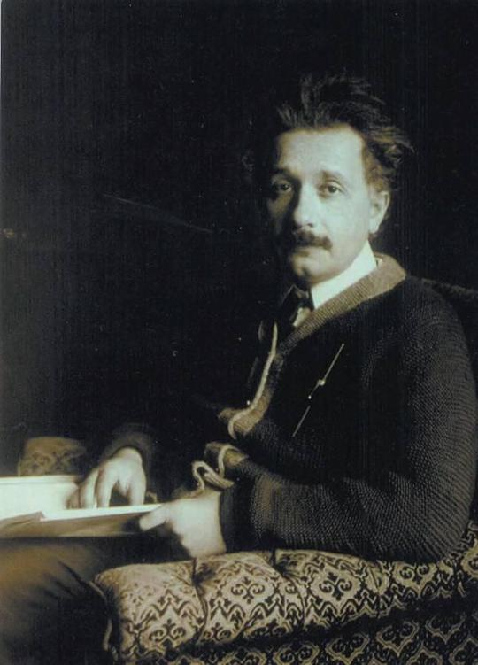

Người kỵ sĩ dừng ngựa trên bờ suối Beretchô, đó là một người lính hoàng gia khoác áo choàng xanh, đội mũ đỏ.
Anh đưa mũ lên vẫy và gọi qua bụi liễu.
- Hô hô! Nước đây!
Rồi anh cho ngựa đi xuống bờ cát lún đã bị mặt trời hun nóng, qua những bụi hoa chân cỏ màu vàng.
Con ngựa đi vào giữa đám cỏ mọc kín cả nước và vươn dài cổ xuống để uống.
Nhưng nó không uống.
Lúc nó ngửng đầu lên, nước từ trong mồm trong mũi nó nhỏ xuống ròng ròng. Nó phì ra hết và lúc lắc cái đầu.
- Con ngựa này làm sao thế nhỉ? – Người lính lầu bầu – Sao mày không uống hở, đồ chó đẻ?
Con ngựa lại cúi đầu xuống rồi lại lắc hết nước ra khỏi mồm, khỏi mũi.
Trên cánh đồng còn mười tám kỵ sĩ Hung trang phục khác nhau đang phi ngựa đến, giữa bọn họ có một người cao và gầy đội mũ cắm lông đại bang và, thay cho áo choàng, một cái áo khoác ngắn bằng nỉ màu đỏ anh đào trùm kín vai ông.
- Thưa trung úy, - người kỵ binh từ bờ nước nói vọng lên – nước nhiễm trùng hay sao ấy: ngựa con nó không uống.
Người đội mũ cắm lông đại bang cho ngựa nhảy xuống nước và chăm chú nhìn những gợn sóng.
- Nước có máu. – Ông ngạc nhiên nói.
Bờ suối phủ đầy những khóm thủy liễu rậm rạp, những khóm cây đầy những tua hoa vàng. Mặt đất điểm chi chít hoa viôlét xanh. Gió chiều mang theo trong vạt yếm mùi thơm dịu ngọt của mùa xuân.
Người trung úy giục ngựa bì bõm lội ngược lên phía trên vài bước. Giữa những bụi cây ven bờ ông chợt thấy một chàng trai cởi trần. Anh ta ngồi trên một thân cây liễu và đang vốc nước suối gội đầu, một cái đầu to, góc cạnh như đầu bò tót. Mắt anh nhỏ, đen lánh, đầy cương nghị. Ria mép nhọn như hai cái đinh sắt. Cái áo chẽn, đôi ủng màu vàng, mũ, gươm nằm la liệt trên đệm cỏ bên cạnh.
Té ra vì anh ta gội đầu mà nước suối Beretchô có mùi máu.
- Cậu là ai thế hở cậu em? – Người trung úy lên tiếng hỏi.
Chàng thanh niên bực dọc trả lời:
- Tôi là Mectsei Istơvan.
- Còn ta là Đôbô Istơvan. Cậu gặp chuyện gì thế?
- Tôi bị một tên Thổ chém phải, cái đồ trời đánh thánh vật.
Anh đưa tay lên bịt đầu.
- Thổ á? – Đôbô quắc mắt lên nói – cái tên Thổ ngoại đạo khốn kiếp ấy chắc chưa thể đi xa lắm đâu! Chúng nó có mấy đứa? Hê, quân bay đâu! Tuốt gươm ra!
Ông vừa hét vừa thúc ngựa nhảy lên bờ.
- Các ông không phải mệt xác nữa. – Mectsei bảo ông – Tôi đã chém chết nó rồi. Nó nằm đằng sau này này.
- Đâu?
- Gần đâu đây thôi.
Đôbô truyền cho người lính mang vũ khí của của ông xuống ngựa:
- Lấy cái đẫy ra và băng bó lại cho công tử đây.
- Mé trên còn có mấy người nữa. – Mectsei nói và lại lấy tay bịt lên đầu.
- Bọn Thổ ấy à?
- Không, một ông quý tộc già cùng bà vợ.
Máu lại loang đầy mặt anh. Anh lại cúi xuống nước.
Đôbô cho ngựa chạy ngược lên và chỉ mấy bước đã thấy một người khác.
Người này cũng xắn tay áo ngồi bên bờ suối, đó là một ông lão tóc hoe. Một bà già béo phục phịch đang vừa khóc vừa gột sạch máu đỏ trên đầu cho lão.
- Chào ông bà! – Đôbô nói to – Vết thương có nặng lắm không?
Ông lão nhìn lên và vui vẻ khoát tay:
- Nhát chém Thổ Nhĩ Kỳ ấy mà!
Lúc đó Đôbô mới thấy ông lão chỉ còn một tay. Ông liền xuống ngựa và nói:
- Ôi, trông bác quen quá!
Ông lão lại ngửng lên:
- Có thể lắm.
- Tôi là Đôbô Istơvan.
Ông già ngẫm nghĩ:
- Đôbô? Ơ này, chú đấy à, chú Pisơtô? Thế mà chú chả nhận ra! Chú đã từng đến nhà tôi, nhà ông lão Xexey ấy mà.
Hai người nồng nhiệt bắt tay nhau.
- Có chuyện gì ở đây thế hở bác? Làm sao hai bác lại đến nơi đồng không mông quạnh này?
- Ồ, - lão già vừa nói vừa giơ đầu ra cho bà vợ - một bọn chó dị giáo đã cướp xe của tôi. Còn may là anh ấy vừa kịp đến lúc bọn dị giáo xông vào chúng tôi. Một anh chàng cừ khôi đấy! Anh ta chém bọn Thổ cứ như thái dưa. Nhưng ta ngồi trên xe, ta cũng chém sả vào giữa bọn chúng nó nữa đấy chứ.
- Chúng nó có mấy đứa?
- Mười đứa, bọn chó, hỏa ngục thiêu xác chúng đi! Còn may là chúng nó không địch nổi bọn ta. Ta có mang theo khoảng bốn trăm đồng vàng, nếu không hơn.
Và ông vỗ vào sườn kêu rủng rẻng. Bà vợ hỏi:
- Anh thanh niên không chết chứ?
- Không, chả chết đâu. – Đôbô trả lời – Anh ta cũng đang rửa ráy dưới kia.
Ông chợt nhìn thấy xác một tên Thổ đỏ lòm ở gần đấy.
- Để tôi xem các ngài đã gặp phải bọn nào.
Ông rẽ ngựa đi dọc nhánh suối con và dọc con đường. Trong đám cỏ ông thấy mấy cái xác chết: hai người Hung và năm tên Thổ: trên đường ông thấy một cỗ xe ba ngựa đổ nghiêng xuống rãnh. Một chàng đánh xe trai trẻ đang hì hục xếp lại các hòm xiểng.
- Đừng cầy cục nữa, cậu em ạ. – Ông nói với anh ta – Sẽ có người đến giúp cậu ngay bây giờ đấy.
Ông quay lại chỗ Mectsei.
- Không phải chỉ có một tên Thổ ở đây đâu, cậu em ạ, mà những năm tên. Những nhát chém đẹp lắm! Cậu có thể hãnh diện được đấy.
- Phải còn một tên nữa mới đúng. – Mectsei đáp – Có lẽ hắn chìm xuống nước. Ông anh có tìm thấy hai người lính của tôi không?
- Có, tội nghiệp. Một người bị vỡ đôi đầu.
- Chúng tôi chỉ có ba người.
- Còn quân Thổ?
- Bọn chó đến những mười tên.
- Vậy bốn tên đã chạy thoát.
- Vâng.
Trong khi nói chuyện, Đôbô đã xuống ngựa và xem xét vết thương trên đầu người thanh niên.
- Vết chém dài nhưng không sâu. – Ông vừa nói vừa ấn nhẹ vào vết thương rồi tự tay đặt thuốc và buộc chặt lại bằng một băng vài mỏng.
- Thế cậu đi đâu đấy?
- Đến Đebrexen.
- Cậu không đến chỗ gia đình Tơrơc đấy chứ?
- Nhưng chính là đến đấy.
- Ấy, cậu em ạ, ở đấy ta có một người thân: Bônemixo Gergey. Có lẽ chú ta còn trẻ con lắm. Cậu có quen không?
- Chính là tôi đi đến chỗ cậu ấy đây. Cậu ta viết thư cho tôi ngỏ ý muốn được sung vào đội ngũ chỗ tôi.
- Đã lớn thế rồi cơ à?
- Mười tám tuổi rồi còn gì.
- Tất nhiên, gia nhân tướng Balin đã ly tán cả.
Từ khi tướng công bị bắt, gió lùa họ phiêu bạt đi khắp nơi.
- Tinôđi cũng đi rồi à?
- Ông lão lang thang khắp nơi. Nhưng hiện nay có thể ông lão cũng đang ở Đebrexen.
- Cho ta gửi lời chào kính trọng và hôn ông ta nhé, cả hai công tử Tơrơc nữa.
Trong khi trò chuyện như thế, Đôbô xắn ống tay áo lên và lấy giẻ lau mặt cho Mectsei. Một người lính của Đôbô thì gột những vết máu trên quần áo của anh. Mectsei chỉ tay về phía vợ chồng Xexey và hỏi:
- Ông lão vẫn ở đằng kia à?
- Vẫn đằng ấy. Không có gì đáng ngại lắm. Cậu không đói à?
- Không, tôi chỉ khát thôi.
Đôbô ra hiệu lấy bình nước. Ông phái những người lính khác đi giúp sửa sang lại cái xe. Sau đó họ đi đến ngồi trên đám cỏ cạnh cỗ xe, Xexey đang cầm một cái đùi gà tây nhai ngon lành.
- Các cậu nhập bọn với chúng tớ đi! – Lão vui vẻ kêu lên – May mà cậu không việc gì!
Mấy người lính nhặt nhạnh chiến lợi phẩm: năm con ngựa Thổ, cũng ngần ấy áo choàng và đủ các thứ binh khí Thổ.
Mectsei nhìn mấy con ngựa rồi nhìn những binh khí để dưới đất. Anh nói với Xexey:
- Mời bác chọn đi, chiến lợi phẩm là của chung.
- Ta cần gì cơ chứ. – Ông lão cười xòa trả lời – Ta đã có đủ ngựa và binh khí.
- Thế thì tôi xin mời anh Đôbô một thứ binh khí gì vậy.
- Cám ơn. – Đôbô đáp – Nhưng ta chọn thế nào được cơ chứ. Ta có đánh chác gì đâu.
- Không sao, mời anh cứ chọn đi.
Đôbô lắc đầu:
- Chiến lợi phẩm, cho đến cái cúc cuối cùng, là của cậu. Còn tặng phẩm của cậu thì ta nhận cách nào đây?
- Tôi chằng biếu không đâu!
- Cái đó lại là chuyện khác, - Đôbô nói và thàm thuồng liếc nhìn một thanh gươm tuyệt xảo – Giá nó là cái gì nào?
- Giá nó là nếu khi nào anh trở thành đại úy trấn thủ một thành nào đó, anh hãy nhớ gọi tôi đến mỗi khi bị ủng thít chặt chân[84]
Đôbô cười:
- Chúng ta không chơi cái trò mua trâu vẽ bóng đâu nhé.
- Vậy tôi đặt một cái giá khác: anh hãy đi với tôi đến Đebrexen.
- Việc đó bây giờ cũng không được, cậu em ạ. Hiện nay ta là nhiêmk sứ của nhà vua. Ta đi thu thuế thập phân[85] trên những trại ấp mất dạy. May rat a sẽ có thể đến đó vào một dịp muôn hơn…
- Thì anh cứ chọn với cái giá là anh sẽ trả bằng tình bạn của anh.
- Cái đó thì vẫn đã thuộc về cậu rồi. Nhưng để cậu khỏi giận, ta xin nhận một cái vì ta thấy cậu thật tình mời.
Ông xem xét những thanh gươm và nói tiếp:
- Bọn này là bọn quý tộc Thổ Nhĩ kỳ đây. Một tên là bêi. Không hiểu chúng nó từ đâu đến?
- Tôi nghĩ là chúng nó ở thành Phehê.
Đôbô cầm những thanh gươm lên. Một thanh gươm có vỏ bọc bằng nhung nạm đá quý màu xanh lam, cán chạm một đầu rắn mạ vàng, hai con mắt nạm bằng hai viên kim cương.
- Đây, cái này là của cậu, ta không chọn cái này đâu vì nó đáng giá bằng cả một gia tài đấy.
Còn hai thanh gươm khác bằng thép Thổ Nhĩ Kỳ, kém kỹ xảo hơn. Đôbô cầm lên một cái và uốn lại thành vòng tròn.
- Thế này mới thật là thép chứ! – Ông hòa hứng nói – Đây, cái này, nếu cậu cho, ta xin cám ơn.
- Rất vui lòng. – Mectsei trả lời.
- Nhưng bây giờ, nếu cậu đã cho ta cái này, xin cậu hãy gia ơn thêm chút nữa, cậu hãy mang hộ đến Đebrexen và nếu Timôđi còn ở đấy, cậu hãy bào ông ta viết lên một câu gì đó mà ông ta muốn. Ở đó có thợ kim hoàn, họ sẽ khắc vào mặt thép.
- Rất vui lòng. Tôi cũng sẽ nhờ ông ta viết lên thanh gươm đầu rắn này. – Mectsei đáp, anh cầm thanh gươm cong chém vút một cái rồi buộc vào cạnh thanh gươm cũ.
Đôbô hỏi lính của mình:
- Các người có tìm thấy tiền trong mình tên tướng Thổ không?
- Chúng con chưa soát.
- Thế thì soát xem.
Người lính kéo ngay cả xác tên Thổ đến, anh nắm lấy cổ áo hắn lôi xềnh xệch trên cỏ. Anh lục soát ngay trước mặt họ.
Cái quấn ống thụng bằng nhung đỏ không có túi nhưng anh tìm thấy trong đai lưng một túi tiền vàng và đủ các loại tiền bạc.
- Món này để xài tốt quá – Mectsei hổ hởi nói – Người lính thì bao giờ cũng thiếu tiền.
Còn một cái ngủ bằng vàng nạm hồng ngọc đính trên tuy ban cùng một dây chuyền vàng. Tên bêi đeo sợi dây chuyền trong áo, sợi dây treo một lá bùa hộ mệnh bằng da xoắn lại như râu buồng dừa.
Mectsei để hai vật trang sức bằng vàng lên bàn tay, và đưa mời Xexey:
- Cái này thì bác phải chọn rồi.
- Cất đi, chú em ạ, cái này chú cũng cất đi. – Ông lão khoát tay nói – Chả nhẽ ta lại cắm chồm lên mái đầu già nua của ta hay sao!
- Ta lấy cái dây chuyền ấy cho con gái, ông ạ. – Bà vợ lên tiếng – Chúng tôi có một cô gáo đẹp ở trong cung hoàng hậu – Bà giải thích.
- Hãy đến dự đám cưới, các chú nhé! – Xexey nói và lắc lắc đôi chân. – Ta còn nhảy cho thỏa thích một phen nữa trước khi nhắm mắt.
Mectsei bỏ sợi dây chuyền vào tay bà vợ và hỏi:
- Lấy ai đấy?
- Viên trung úy của Hoàng hậu. Phuyriét Adam. Có lẽ các chú cũng biết chăng?
Mectsei nhăn mặt lắc đầu.
- Một chàng trai cừ khôi. – Bà lại nói – Hoàng hậu gả chồng cho con gái ta đấy.
- Cầu trời phù hộ cho họ bách niên giai lão. – Đôbô nói.
Mectsei tặng cho lính của Đôbô những bộ quấn áo Thổ và những binh khí thường. Họ chuẩn bị lên đường.
Mectsei cầm mũ lên và bực tức xoay xoay trong tay. Cái mũ bị chém gần đứt đôi. Xexey bảo cậu:
- Đừng bực mình nữa. Nếu nó không bị xé như thế thì bây giờ làm sao đôi vừa lên đầu cậu được.
Áo quần họ còn ướt, nhưng chậc, cho đến tối mặt trời và gió sẽ hong khô.
- Cậu hãy chọn lấy hai người trong số lính của ta để họ đi theo cậu. – Đôbô bảo – Bác Xexey, tôi cũng cử cho hai bác hai người.
- Không biết chúng ta có đi cùng đường không? – Mectsei quay sang vợ chồng Xexey hỏi – có lẽ chúng ta cùng đi chăng?
- Cậu đi đâu? – Lão già hỏi lại.
- Đebrexen [86].
- Vậy thì ta đi cùng đường đấy.
- Vậy ba người lính cũng đủ, - Mectsei bảo Đôbô.
- Tùy ý cậu. – Đôbô vui lòng đáp.
Trong khi đôi vợ chồng già sắp hòm xiềng lên xe, hai người đi qua chỗ các tử thi. Trong số đó có một tên Thổ lực lưỡng, khoảng ba chục tuổi, nằm duỗi thằng tay thẳng cẳng, hắn mặc một cái quần ống thụng bằng dạ xanh. Nhát chém trúng ngang mắt hắn.
- Tên này ta có biết. – Đôbô nói – Ta cũng đã có lần đánh nhau với hắn.
Hai người lính Hung bị băm nát, người ta đã lấy khăn phủ đầu cho một người.
Lính của Đôbô chọc thủng bụng những tên Thổ rồi ném xuống dòng Beretchô. Đoạn họ bới một cây liễu già. Họ lấy áo choàng đắp lên thi thể hai người rồi lấp đất lại và cắm gươm của họ lên thay cây thánh giá.
Ở góc phía nam kinh thành Côngxtăngtinốp sừng sững một tòa thành cổ. Bên trong những bức tường thành cao là bảy tòa tháp lùn như bảy cái cối xay gió khổng lồ đứng theo trật tự như sau:
0
0 0
0 0
0 0
Một nửa những tường thành đứng ngay trên làn sóng xõa cửa biển Cẩm Thạch, một nửa do những ngôi nhà gỗ bao quanh. Đó là thành Ieđikula nổi tiếng, nghĩa là Bảy Tháp. Bảy Tháp đó chứa đầy châu báu của Xutan.
Trong hai tháp giữa để những đồ trang sức bằng vàng và ngọc. Trong những tháp đứng gần phía biển cất những dụng cụ phá thành, binh khí và những đồ bằng bạc. Trong hai tháp cuối cùng là những binh khí cổ và những chiếu chỉ, sách vờ thời xưa.
Trong bảy tháp đó người ta còn giam giữ những tù nhân thuộc hàng công hầu nữa. Mỗi người bị giam một cách. Có người bị cùm và nhốt trong ngách đá tối om, cũng có người được cấp đủ tiện nghi và thả lỏng chả khác nào ở nhà: được phép tự do đi lại suốt ngày trong vườn hoa, vườn rau, lên ban công các ngọn tháp, vào nhà tắm; có thể đem theo cả ba người hầu, có thể viết thư, có thể tiếp người đến thăm, có thể chơi nhạc, có thể ăn uống thả cửa, chỉ mỗi tội không được ra khỏi thành.
Vào một ngày mùa xuân có hai người tóc hoa râm ngồi chơi trên ghế dài trong vườn thành Bảy Tháp. Cả hai đều đeo vòng cùm nhẹ quanh cổ chân.
Một người tay chống cằm tì lên đầu gối, người kia dang rộng hai tay lên thành ghế và ngả người ra phía sau nhìn mây bay.
Người nhìn mây đã nhiều tóc bạc hơn người kia, râu ông dài đến ngực, tóc rủ xuống quanh đầu như bờm sư tử.
Cả hai đều mặc quần áo Hung. Ôi, mảnh áo Hung đã sờn rách trên thân hình biết bao tù nhân trong thành Bảy Tháp!
Họ ngồi lặng lẽ. Ngày xuân tỏa hơi ấm dìu dịu khắp vườn. Giữa những hàng bá hương, đỗ tùng và nguyệt quế, hoa uất kim hương và hoa thược dược đã nở. Trên đầu họ, những lá rộng của cây bang cổ thụ đang uống ánh mặt trời.
Người nhìn mây nhấc cánh tay lực lưỡng xuống khỏi thành ghế và khoanh lại trước ngực, giữa chừng ông nhìn sang người bạn:
- Nghĩ ngợi gì thế hở ông bạn Moilát?
- Tôi đang nghĩ về cây dẻ của tôi. – Người kia cúi về phía trước trả lời - Ở Phôgorot tôi có một cây dẻ…
Hai người lại im lặng. Vài phút sau Moilát lên tiếng:
- Cái cành ngoài của nó bị héo vì băng giá. Nó đã đâm chồi hay chưa? Tôi đang ngẫm nghĩ về chuyện ấy.
- Chắc chắn là nó đã đâm chồi. Cây cối bị băng giá rồi lại đâm chồi. Mầm nho cũng nẩy lên từ gốc cụt [87]. Chỉ có con người là không nẩy lộc.
Họ lại lặng lẽ một lúc.
Rồi Moilát lại lên tiếng:
- Thế còn anh, Balin, anh nghĩ chuyện gì thế?
- Về chuyện thằng aga kapi [88] cũng bần tiện y như những đứa khác. – Tơrơc Balin buồn bã trả lời.
- Điều đó thì tôi chẳng bao giờ ngờ vực cả.
- Người ta bảo rằng hắn ranh lắm. Vợ tôi gửi cho hắn ba chục nghìn tiền vàng để hắn tìm mánh lới gỡ cái cùm này ra khỏi chân cho tôi. Thế mà đã ba tháng nay.
Họ lại im lặng. Moilát với tay xuống một bông hoa bồ công anh vàng hoe giữa đám cỏ. Ông bứt nó lên. Ông vò đi vò lại trong tay một lúc rồi thả rơi xuống đất.
Và ông lại lên tiếng:
- Hồi đêm tôi nghĩ về chuyện là mãi tôi vẫn chưa hiểu được tại sao chúng nó lại bắt anh. Anh đã kể nhiều lần về chuyện chúng nó giải anh đi trên sông Đuno, chuyện anh đã quật một tên lính gác vào mạn thuyền, cách chúng nó giải anh đến đây. Nhưng cái căn nguyên, cái lý do thật…
- Cái đó thực ra chính tôi cũng chằng biết.
- Nói cho cùng thì anh vẫn ở trong tổ của anh: người ta không thể đổ cho anh một tôi mưu bá đồ vương.
- Chính tôi cũng đã nhiều lần day dứt về chuyện này. Mặc dù đối với bọn Thổ thì chẳng cứ phải lý do gì to tát, nhưng tuy vậy giữa nhiều nguyên do cái gì đã hại cho tôi nhất thì tôi cũng muốn biết.
Một toán kaputji[89] khua trống đi qua sân, sau đó họ lại chỉ còn hai người với nhau.
Balin nói tiếp:
- Tôi cho rằng vẫn cái buổi nói chuyện đêm ấy là lý do chính. Xuntan hỏi tại sao tôi lại báo cho quân Đức biết chuyện ông ta đến. “Báo cho quân Đức! – Tôi ngạc nhiên hỏi – Tôi không báo cho quân Đức mà là cho Perênhi.” “Cũng một phường cả - Xuntan trả lời – Perênhi ngoặc với quân Đức”. Và Xuntan tức giận tròn xoe mắt nhìn tôi: “Nếu ông không báo cho chúng nó biết, chúng tôi đã có thể đánh úp quân Đức ở đây. Chúng tôi đã có thể bắt được tất cả tướng lĩnh và ta đã có thể bẻ nát tất cả lực lượng của Pheđinan! Thành Viên cũng có thể đã là của ta!” Thấy tên Thổ mạt hạng ấy thét vào mặt tôi như thế, trong người tôi máu cũng sôi lên. Tôi, anh biết đấy, bao giờ> cũng vẫn làm chủ trong toàn bộ cuộc đời tôi: tôi không quen che giấu những ý nghĩ của mình.
- Anh đã chồm lên với ông ta à?
- Tôi không cục cằn đâu, tôi chỉ nói với ông ta rằng sở dĩ tôi báo cho người ta biết việc Xuntan đến là chính vì tôi muốn tránh cho những người Hung trong phe Đức.
- Đó là một sai lầm lớn!
- Lúc đó tôi đang còn tự do.
- Thế sau đó Xuntan bảo sao?
- Không nói gì cả. Ông ta đi đi lại lại trước mặt tôi. Sau đó ông ta chợt quay sang viên pasa và bảo soạn cho tôi một cái lều tốt để tôi có thể ngủ lại vì hôm sau ông ta còn muốn nói chuyện với tôi.
- Thế hôm sau các anh nói chuyện gì?
- Không nói gì cả. Tôi cũng không bao giờ trông thấy Xuntan nữa. Người ta dành cho tôi một cái lều to nhưng không cho đi ra ngoài. Bao nhiêu lần tôi định bước ra đều co hàng chục mũi dáo chĩa vào ngực.
- Chúng nó xiềng anh lại từ bao giờ?
- Chỉ khi Xuntan lên đường về.
- Tôi thì chúng xiềng lại ngay từ khi bắt, trong cơn tức giận tôi đã khóc như một đứa trẻ con.
- Tôi không biết khóc. Tôi không có nước mắt. Cả khi cha tôi mất tôi cũng không khóc.
- Anh cũng không khóc các con anh à?
- Không. – Tơrơc Balin tái mặt đáp – Nhưng mỗi khi nhớ đến chúng nó tôi lại cảm thấy như có ai đang xoáy mũi gươm trong ngực mình.
Ông thở dài đau đớn và gục trán vào lòng bàn tay.
- Có một tên tù binh rất nhiều lần hiện về trong ký ức tôi. – Ông nói với một vẻ buồn trầm ngâm – Một tên Thổ gầy, xấu tính, bị tôi bắt được bên bờ Đuno. Tôi giữ hắn lâu năm trong thành. Có một lần mặt đối mặt, hắn đã nguyền rủa tôi.
Họ không nói thêm gì nữa.
Xa xa có tiếng kèn vọng đến. Thỉnh thoảng họ chú ý nghe, rồi sau đó lại đắm mình vào suy nghĩ.
Khi mặt trời đã nhuộm đỏ chân mây, viên trấn thủ đi khắp vườn và khi đến chỗ họ, hắn nói với họ giọng trịch thượng:
- Thưa các ngài, chúng tôi khóa cổng.
Chúng nó vẫn thường khóa cổng trước lúc mặt trời lặn độ nửa giờ và lúc đó tất cả tù nhân đều phải vào phòng giam của mình.
- Ephenđi Kaputji [90], - Tơrơc Balin hỏi – hôm nay có việc gì mà người ta thổi kèn ghê thế?
- Hội Uất kim hương. – viên quan phòng thành trả lời – trong vườn thượng uyển đêm nay người ta không ngủ.
Các tù nhân đều đã biết cả. Mùa xuân năm ngoái cũng đã có hội như thế. Những lúc như vậy tất cả cung phi, hoàng hậu của Xuntan hạ lệnh dựng những lều hoa quanh các luống hoa uất kim hương và cho các thị nữ bán trong đó đủ các loại đồ chơi, đồ trang sức, lụa là, găng tay, bít tất, giày dép, khăn voan và các loại tương tự. Mấy trăm cung phi của Xuntan không bao giờ được ra phố, vì vậy hàng năm đến đó họ vui mừng được một lần vung tiền mua sắm.
Những dịp như vậy vườn thượng uyển vang tiếng cười đùa. Người ta treo những lồng chim vẹt, sáo, họa mi và hoàng yến lên các cành cây cho chúng đua nhau hót thi cùng nhã nhạc. Tối đến trong eo biển Bốxpôrút, đuốc hoa và đèn lồng rực rỡ trên thuyền rồng và trong tiếng nhã nhạc vang lừng, tất cả cung tần mỹ nữ cùng dạo thuyền ra tận biển Cẩm Thạch.
Hai tù nhân bắt tay nhau dưới chân tháp Máu:
- Chúc anh ngủ ngon, anh Moilát Istơvan ạ.
- Chúc anh ngủ ngon, anh Tơrơc Balin ạ.
Bởi nơi đây không còn niềm vui nào khác ngoài giấc ngủ ngon. Trong giấc ngủ, người ta mơ về nhà.
Nhưng Tơrơc Balin không hề thấy buồn ngủ. Hôm nay sau bữa trưa, trái với thói quen, ông đã nằm nghỉ và ngủ một giấc, vì vậy buổi tối ông không buồn ngủ nữa. Ông đến mở> cửa sổ và ngồi nhìn trời sao.
Chiếc thuyền rồng dạo chơi ngay dưới chân thành Bảy Tháp về phía biển Cẩm Thạch. Bầu trời đầy sao nhưng không trăng. Những ngôi sao lấp lánh gần như bốc lửa và mặt biển cũng là một bầu trời nữa đang lấp lánh. Chiếc thuyền rực rỡ đèn hoa lướt giữa những ngôi sao cao tít và những ngôi sao sâu thẳm. Nhưng hai bức tường đá cao> không cho phép người tù được trông thấy cảnh đó. Chỉ có tiếng nhạc vọng tới tai ông; đàn Kanun tưng tưng, đàn gõ và sênh tiền rộn rã. Mặc dù rất muốn nghe, ý nghĩ của ông vẫn tha thẩn về hướng khác.
Về khuya tiếng nhạc ồn ào đã lặng. Các cung nữ cất tiếng hát. Giọng hát mỗi lúc một khác, tiếng đàn> dạo theo cũng khác. Nhưng Tơrơc Balin cũng chẳng nghe được gì mấy. Ông nhìn bầu trời đã phủ đầy những đám mây đen rách rưới đang từ từ trôi. Sao vẫn le lói chiếu qua những chỗ> rách.
- Ờ đây trời cũng khác làm sao – ông thầm nghĩ – Trời Thổ Nhĩ Kỳ, đêm tối Thổ Nhĩ Kỳ.
Sau đó, lúc tiếng ca hát trên thuyền ngừng lại một hồi dài, ông lại tiếp tục những suy nghĩ của mình:
- Cả đến im lặng ở đây cũng khác: im lặng Thổ Nhĩ Kỳ.
Ông đã nghĩ đến việc đi nằm nhưng trạng thái buồn ngủ đê mê làm ông cảm thấy dễ chịu nên ông chờ cho đến lúc tứ chi tự cử động, cho đến lúc cơ thể ông, không cần đến ý chí chỉ huy, tự nó chuyển động và đưa ông đi nghỉ.
Tiếng thụ cầm lại ngân lên trong tĩnh mịch của đêm khuya và qua lá cành, những cung điệu Hung bỗng bay lên chơi vơi trong đêm tối Thổ Nhĩ Kỳ.
Tơrơc Balin cảm thấy một cảm giác rung mình vừa đau xót vừa ngọt ngào chạy từ tim ra khắp cơ thể.
Cây thụ cầm lặng đi một phút. Rồi những cung điệu run rẩy lại bay lên, dâng lên như tiếng nức nở thầm lặng trong đêm khuya.
Tơrơc Balin ngửng đầu lên, đôi mắt trầm ngâm. Con sư tử bị giam trong cũi sắt cũng ngẩng đầu lên như thế mỗi khi nghe gió núi thầm thì.
Những cung điệu của cây thụ cầm dịu dàng hạ xuống thành một tiếng thở dài tan vào im lặng để rồi những dây đàn lại nẩy lên cùng với lời ca Hung rất rõ của một giọng nữ thanh và buồn:
Ai đã uống nước Tixo
Trái tim sẽ mãi nhớ về chốn đây
Ôi! Tôi cũng uống sông này.
Hơi thở của Tơrơc Balin ngưng lại, ông đăm đăm dõi mắt về phía tiếng hát. Những món tóc bạc của ông dường như xù cả lên, mặt ông hàu như biến thành đá. Và trong khi con mãnh sư già thần người ra nghe bài hát, hai giọt nước mắt to ứa ra, lăn trên gò má và chòm râu của ông.
Vào khoảng nửa đêm, một gia nhan gõ cửa phòng ngủ của các công tử Tơrơc:
- Công tử Gergey!
- Có việc gì thế?> >Cứ vào! – Gergey nói to.
Chàng chưa ngủ, bên ánh nến chàng đang đọc Hôraxiux [91]
Bên hai giường kia, các công tử Tơrơc cũng tỉnh dậy.
- Người gác cổng báo tin là có một ông nào ấy đang đứng ở trước cổng.- Tên gia nhân nói.
- Tên là gì?
- Cái gì Kelske [92] hay là quái quỷ gì ấy.
- Kelske? Thằng khỉ gió nào mà có thể có cái tên là Kelske?
- Ông ta ở Giơrơ đến và muốn nghỉ lại đây.
Nghe tiếng Giơrơ, Gergey liền nhảy ra khỏi giường. Tơrơc Iontsi từ trong chăn> hỏi ra:
- Ai thế hở Gergey?
- Mectsei! – Gergey vui vẻ kêu lên. – Mời ngay ngài hiệp sĩ vào.
Tên gia nhân chạy vụt đi ngay.
Gergey xỏ ủng rồi vơ vội áo choàng lên vai. Hai công tử cũng ra khỏi giường[93]. Hai cậuu rất tò mò người khách mà họ mới chỉ nghe tên.
- Các cậu cho dọn rượu và món ăn nhé!- Gergey dặn với lại từ cửa phòng rồi chạy lao xuống nhà.
Khi chàng xuống đến sân thì Mectsei cũng đã ở đó, bên cạnh là viên quan phòng thành và người lính gác đang cầm đèn. Từ trên gác cũng có ánh đèn rọi xuống. Việt sáng chập chờn một lát rồi chiếu lên người mới đến, lúc đó đang tặng cho mỗi người lính của Đôbô một đồng tiền vàng để từ giã.
- Thế là tớ đã đến nơi.- Anh ôm chầm lấy Gergey và nói.- Xuýt nữa thì tớ ngủ trên mình ngựa.
- Nhưng anh Pisơto, cái gì trên đầu anh thế?
- Tuyban đấy, mẹ kiếp! Cậu không thấy là tớ đã trở thành Thổ đây à?
- Anh đừng đùa! Cái khăn đầy những máu kia kìa!
- Nào, thế thì cậu cho tớ xin một cái phòng và một thau nước, rồi sau đó tớ sẽ kể cho mà nghe chuyện đi đường từ Giơrơ đến Đebrexen.
Một người hầu gái hiện ra ở đầu cầu thang và nhìn người mới đến có vẻ dò hỏi. Gergey khoát tay ra hiệu> không có gì. Người hầu biến mất.
Gergey quay sang Mectsei giải thích:
- Phu nhân không mấy khi ngủ. Đêm cũng như ngày, bà vẫn ngóng chờ tin tức của tướng công.
Mectsei nằm sốt ba ngày liền vì vết thương. Suốt thời gian đó, các công tử Tơrơc và Gergey lúc nào cũng ngồi bên cạnh anh. Họ cho anh uống rượu vang đỏ và chăm chú nghe những câu chuyện của anh.
Phu nhân cũng thường đến thăm anh. Trong lúc còn sốt, Mectsei đã nói rằng anh đến vì Gergey: anh sẽ đưa chàng đi theo mình vào quân đội hoàng gia.
Các công tử Tơrơc sửng sốt nhìn Gergey, còn phu nhân nhìn chàng với nét mặt buồn bã ra chiều trách móc:
- Vậy ra con có thể bỏ chúng ta mà đi ư? Ta đã không phải là mẹ thay thế mẹ của con ư? Và các con ta đã không phải là các em của con ư?
Gergey cúi đầu trả lời:
- Con đã mười tám tuổi rồi. Chả nhẽ con cứ sống một cách tốn cơm vô ích ở đây khi Tổ quốc đang cần những người lính hay sao?
Quả thật chàng đã có vẻ một chàng trai chín chắn so với lứa tuổi mình. Trên khuôn mặt nước da bánh mật, mịn màng như con gái của chàng, râu đã bắt đầu lún phún. Đôi mắt đen láy của chàng đầy vẻ thông minh và nghiêm nghị.
- Cần chính con ư? Con không thể chờ các con trai của ta cùng đi ư? Ai cũng lìa bỏ chúng ta cả, - Phu nhân gật gật đầu và lau những giọt nước mắt giàn giụa – Nơi nào Trời đã lìa bỏ thì con người cũng xa lánh.
Gergey quỳ xuống trước mặt phu nhân và hôn tay bà:
- Thưa phu nhân, mẹ yêu quý của con, nếu mẹ hiểu việc ra đi của con như thế thì thôi vậy.
Tinôđi cũng đang ngồi trong phòng. Ngày hôm đó ông vừa từ Erơsecniva đến. Ông đến để hỏi tin tức của chủ tướng, nhưng tất nhiên câu hỏi tắc lại trong cổ ông khi ông thấy lâu đài không treo cờ và phu nhân ở trong tình trạng gần như để tang.
Ông ngồi cạnh cửa sổ, trên một cái hòm bọc da gấu và đang viết chữ lên bản một thanh gươm. Nghe lời Gergey, ông ngừng tay lại và nói:
- Thưa phu nhân, xin phu nhân cho lão được phép nói leo vào câu chuyện này.
- Ông cứ nói đi, Sebớc ạ.
- Con chim dù có bay đi đâu rồi cũng vẫn luôn luôn quay về tổ. Gergey đang muốn được tung cánh một phen. Lão nghĩ rằng nếu cậu ta được biết đó biết đây thì rất tốt. Vả lại phu nhân cũng thấy đấy, chỉ nay mai công tử Gianốt sẽ trưởng thành, lúc ấy đối với cậu ta cũng tốt hơn nếu có được một quân nhân từng trải ở bên cạnh.
Không có gì buồn cười trong những lời này cả, tuy vậy mọi người vẫn mỉm cười. Vì thi sĩ Sebớc hễ lúc nào không hát là lại hay pha trò, và dù lão có nói một cách nghiêm chỉnh người ta vẫn cảm thấy niềm vui ẩn náu trong những lời của lão.
- Rồi chúng ta sẽ nghĩ thêm xem sao. – Phu nhân gật đầu nói.
Thi sĩ lại quay về công việc.
- Bài thơ đã xong chưa đấy?
- Xong rồi ạ. Lão không biết phu nhân có thích không?
Lão cầm thanh gươm đầu rắn lên và đọc
Ai can trường là mạnh
Người mạnh thắng như chơi
Vừa thắng vừa xông tới
Tử thần cũng tháo lui!
- Bác viết bài ấy lên gươm của cháu nữa nhé! – Tơrơc Iontsi nói.>
- Không. – Tinôđi lắc đầu đáp – Chúng ta sẽ viết bài khác lên gươm ấy.
Mectsei nằm trong giường lên tiếng:
Trên thanh gươm của Đôbô phải viết cả tên vua nữa đấy. Một câu gì đại khái như: Kính thiên, ái quốc, trung quân.
- Câu ấy lỗi thời rồi. – Tinôđi trả lời – Từ khi vương miện đặt lên đầu người Đức [94] câu ấy đã bị loại khỏi thời thượng rồi. Nếu ông ta quả muốn viết câu đó lên gươm thì chính ông ta đã tự mang gươm đến.
- Cháu có một câu. – Gergey gõ ngón tay lên trán nói – Hồi nh, cháu đã được nghe một câu nói của chú ấy. Có lẽ nên khắc câu ấy lên gươm.
- Câu gì thế?
- Cái chính là không bao giờ được sợ!
- Được đấy. – Tinôđi khẽ gật đầu – Nhưng như thế thì ý trơ trọi quá. Hẵng gượm…
Lão chống tay lên cằm suy nghĩ. Mọi người đều im lặng. Một phút sau mắt lão sáng lên:
- >Ai sợ chết, đời sẽ hết!
- >Thế hay đấy! – Gergey kêu lên.
Tinôđi chấm bút lông ngỗng vào nghiên mực bằng gỗ để trên bậc cửa sổ rồi viết câu tâm niệm đó lên thanh gươm.
Còn một thanh gươm nữa chưa viết, đó là thanh gươm cùng đôi với thanh của Đôbô, Mectsei tặng nó cho Gergey.
- Chúng ta viết gì lên thanh gươm này bây giờ? – Tinô đi nói – Thế này có được không nhé: Bônemixo Gergey, hãy phóng như bay!
Mọi người cười ồ lên. Gergey lắc đầu:
- Không, cháu chả cần thơ, chì cần một chữ thôi. Trong chữ ấy có tất cả mọi ý thơ. Bác hãy viết cho cháu chữ này: >Vì Tổ quốc! [95]
Ngày thứ năm Đôbô chợt đến. Mọi người vui mừng đón tiếp ông. Đã mấy năm nay, kể từ khi chủ tướng bị bắt. đây là lần đầu tiên người ta lại bày lên bàn những bát đĩa bằng vàng, bằng bạc. Một niềm vui rạng rỡ bất thường tỏa sáng khắp ngôi nhà.
Tơrơc phu nhân chăm chú lắng nghe những tin tức mà Đôbô biết được từ Viên và từ các quan chức trong nước.
Hồi đó chưa có báo chí, chỉ qua thư từ hoặc khách khứa người ta mới có thể biết được những chuyện xảy ra ngoài xã hội cũng như những chuyện gẫy cành đơm nụ trên cây gia hệ của những gia đình quý tộc.
Chỉ có tên của một người là mãi vẫn chưa được nhắc đến trong câu chuyện: đó là tên của gia chủ.
Gergey đã lưu ý Đôbô đừng nhắc đến, cũng đừng hỏi han gì cả.
Nhưng khi các gia nhân đã lui hết ra khỏi phòng ăn, chính phu nhân lại lên tiếng hỏi:
- Tướng quân có nghe được tin tức gì về người chồng thân yêu của tôi không?
Và nước mắt bỗng chảy giàn giụa trên má bà.
Đôbô lắc đầu:
- Chừng nào tên Xuntan này chưa chết, tướng công nhà ta còn khó lòng mà được tha về.
Ý nghĩ đó đã được nói ra với một sự chân thành mộc mạc, nhưng thời đó người ta vẫn quen nghĩ sao nói vậy.
Phu nhân càng rũ đầu xuống.
Đôbô căm giận đập tay lên bàn:
- Nhưng hắn còn muốn sống đến bao giờ nữa? Những tên khát máu như thế thường không được chết già đâu!
Rồi ông nói tiếp, giọng an ủi:
- Nếu có thể bắt được một tên basa nào đó, tôi sẽ đem đổi lấy tướng công.
Phu nhân buồn bã lắc đầu:
- Tôi không tin, Đôbô ạ. Chúng nó giam giữ chồng tôi trong sắt thép không phải như giữ một của quý cướp được, mà như giữ một con sư tử, vì chúng nó sợ chồng tôi. Tôi đã hứa tất cả để chuộc lại chồng tôi. Tôi bảo chúng nó: Các ông hãy lấy tất cả súc vật của chúng tôi đi, hãy lấy tất cả vàng bạc của chúng tôi đi. Tụi basa đút túi tất cả tiền bạc của tôi gửi đến, nhưng Xuntan vẫn không hề trả lời chúng tôi.
- Vị tất chúng nó đã dám mang chuyện đó ra tâu.
- Không thể thoát khỏi nơi ấy bằng cách nào khác được ư? – Mectsei hỏi.
Đôbô đáp:
- Ra khỏi Bảy Tháp ấy à? Cậu chưa bao giờ nghe nói về Bảy Tháp hay sao?
- Tôi đã có nghe nói. Nhưng tôi cũng được nghe nói là nếu người ta quyết chí thì không có việc gì không thể làm được.
- Cậu Mectsei thân mến, - phu nhân nói – chả nhẽ cậu lại có thể nghĩ rằng chồng tôi và cả cái gia đình côi cút này không quyết chí hay sao? Tôi đã chẳng từng đến chỗ hoàng hậu, đến nhiếp chính, đến tổng trấn Buđo vì việc cứu chồng tôi đấy ư? Tôi đã chẳng từng lê gối đến cả chỗ vua Pheđinan đấy sao? Chuyện đó tôi cũng chẳng dám viết cho người chồng đau khổ của tôi biết nữa.
Những lời cuối cùng của phu nhân nghẹn ngào trong nước mắt, mọi người im lặng buồn rầu nhìn bà.
Nhưng bà đã lau nước mắt và gắng gượng mỉm cười quay sang nói với Tinôđi:
- Thi sĩ Sebơc, chẳng nhẽ chúng ta lại đem nước mắt ra mà đãi bằng hữu hay sao? Lão khá đem cây đàn ra đây và hát lại những bài mà ngày trước chồng ta vẫn thường ưa thích, chỉ những bài ấy thôi, Sebơc ạ. Chúng ta sẽ nhắm mắt lại, và trong khi lão hát, chúng ta sẽ tưởng tượng tướng công cũng đang ngồi giữa chúng ta.
Đã ba năm nay trong nhà vắng tiếng đàn của thi sĩ Sebơc. Vừa nghe lệnh cho phép, mấy cậu thiếu niên đã vui hẳn lên.
Sebơc về phòng mình lấy cây đàn tới rồi bằng một giọng êm ái lão ngâm thơ kể sự tích bà Yuđích và đệm đàn theo.
Câu chuyện đã mang lại niềm an ủi. Trong vai Hôlôphen tất cả mọi người đều nhận ra Xuntan. Nhưng hỡi ôi, ngày nay còn đâu bà Yuđích để trừ tiệt hắn khỏi mặt đất này!
Đến nửa chừng câu chuyện, dây đàn bỗng nhiên đổi làn điệu dưới những ngón tay ông lão và bằng một giọng rất trầm rất nhẹ, lão chuyển sang bài khác:
Nước Hung đáng thương giờ đây than khóc
Những niềm vui, tiếng cười đã mất:
Đã tiêu điều bao cơ nghiệp giàu sang
Bị tù đày bao khanh tướng hiên ngang.
Một cảm giác đau xót truyền đi khắp mọi người ngồi quanh bàn. Đôbô cũng ứa nước mắt.
- Lão có nên tiếp tục nữa chăng? – Tinôđi ngần ngại hỏi.
Nữ chủ nhân gật đầu.
Sau đó Tinôđi ngâm khúc hát kể chuyện quân Thổ đã lừa tướng công Balin sa lưới như thế nào, chúng đã giải tướng công đi trong xiềng xích ra sao. Đến cuối khúc ngâm, giọng ông trở nên thầm thì đau đớn:
Vẫn cầu nguyện lệ đầy khóe mắt
Người vợ hiền và cả hai con
Họ đang khóc cảnh mồ côi, hiu hắt,
Sao xiết nỗi buồn trong kiếp cô đơn.
Đâu còn niềm vui cho những gia nhân
Những người vẫn nhớ thương, cầu nguyện:
Một đôi kẻ ngại ngùng trốn tránh
Vẫn nhiều người chờ chủ tướng hồi gia.
Đến đây ngay cả người đánh đàn cũng nghẹn ngào. Bởi lão chính là người gia nhân ngại ngùng trốn tránh vẫn thương khóc chủ tướng của mình nhiều nhất.
Hai cậu thiếu niên gục đầu vào lòng mẹ khóc nức nở, bà mẹ ôm choàng lấy cả hai con.
Một vài phút trôi qua như vậy trong ngôi nhà buồn thảm, sau đó Đôbô lên tiếng bằng một giọng trầm trầm đầy cay đắng:
- Sao tôi lại không phải là kẻ tự do! Nếu được thế thì dù có phải mất hàng năm trời tôi cũng quyết đi tới thành phố đó, ít nhất cũng để xem cái nhà ngục ấy có thật kiên cố đến thế chăng?
Mectsei đứng dậy:
- Tôi đang là kẻ tự do! Xin thề trước Đấng vạn năng rằng tôi sẽ đi tới đó! Nhất định thế! Và nếu được thì dù có phải trả bằng tính mạng, tôi cũng sẽ giải thoát cho tướng công Tơrơc Balin.
Gergey cũng bật dậy:
- Tôi sẽ đi với anh! Tôi sẽ theo anh qua tất cả mọi hiểm nghèo vì chủ tướng, vì nghĩa phụ của tôi.
- Mẹ ơi, - Tơrơc Iontsi xúc động nói – chẳng nhẽ con lại ngồi nhà trong khi có người ra đi để cứu cha con ư?
- Chuyện điên rồ! – Người mẹ đáp.
- Dù là chuyện điên rồ hay không cũng mặc. - Mectsei hăng hái nói – Cái gì tôi đã nói là tôi sẽ làm.
- Lão cũng sẽ đi với cậu, - Tinôđi nói – Tay lão đã bại nhưng trí óc lão có khi còn có ích.
- Các người muốn gì cơ chứ? – Tơrơc phu nhân lại nói – Chẳng lẽ các người có thể làm được điều mà hai đức vua cùng một gia tài vương giả đã không làm nổi hay sao?
- Phu nhân nói đúng đấy. – Đôbô đã lấy lại bình tĩnh nói – Tiền bạc, mưu chước đều vô ích hết, chỉ còn thiện ý của Xuntan mới có thể mở được xích xiềng.
- Nhưng nếu cái thiện ý ấy không bao giờ đến cả? – Mectsei vặn lại.
Sáng hôm sau Đôbô tiếp tục lên đường. Mọi người không lưu khách, ai cũng biết thời giờ của ông rất sít sao. Mectsei vẫn còn ở lại.
Anh gọi Gergey vào phòng riêng và bảo:
- Mình đã chờ để chúng ta có dịp suy nghĩ thêm về buổi nói chuyện tối hôm qua. Không phải vì mình đâu, mình thì dẫu có suy nghĩ đến mấy cũng vẫn thế thôi, nhất định mình sẽ đi tới miền đất Thổ Nhĩ Kỳ đó.
- Còn tôi, tôi sẽ đi với anh – Gergey trả lời giọng dứt khoát.
- Ngẫm cho cùng thì hiện nay ở nhà không có chiến tranh. Vả lại, ai biết được, nhỡ chúng ta tìm được một lối ngóc ngách nào đó thì sao?
- Cho dù có thất bại chăng nữa, chúng ta cũng không phải hổ thẹn.
- Mang Tinôđi theo à?
- Tùy anh.
- Thế còn Iontsi?
- Phu nhân không để cho cậu ta đi đâu…
- Vậy chỉ hai đứa chúng mình đi thôi. Ta để Tinôđi ở nhà thôi, ông lão không chịu đựng nổi trò múa gươm cưỡi ngựa đâu.
- Tùy anh.
- Vả lại chúng mình đang đùa với cái đầu của chúng mình đấy. Mang ông lão vào chỗ chết thì uổng lắm. Giờ đây ông lão là một trong những người đáng quý nhất ở nước ta đấy. Chúa Trời cũng muốn ông lão lang thang đây đó để nhen lại những ngọn lửa đang tắt dần trong những trái tim. Con người này chính là nỗi đau thương đang ngân lên từ linh hồn dân tộc.
Họ đang trò chuyện thì Tơrơc Iontsi đẩy cửa bước vào.
Cậu cầm roi ngựa trong tay, mặc quần đi ngựa bằng da nai vàng, đầu đội mũ dạ rộng vành kiểu Đebrexen, chân đi ủng màu vàng.
Mectsei làm bộ như đang tiếp tục kể một câu chuyện nào đó, anh chỉ hơi liếc nhìn Iontsi rồi vừa cười vừa nói:
- Thế đấy: con thỏ đế tóc đỏ sắp cưới vợ!
Và anh giải thích cho Iontsi hiểu:
- Cậu không biết kẻ mà chúng tớ đang nói tới đâu, nhưng có lẽ Gergey đã từng kể đến cũng nên.
- Ai cơ? – Iontsi hờ hững hỏi.
- Phuyriét Ađam.
- Hắn lấy ai? – Gergey mỉm cười nói.
- Con gái của một lão già tay gỗ.
Tất cả vẻ hồng hào trên mặt Gergey bỗng nhiên biến mất.
- Xexey Êvo ấy à? – Cậu hỏi gần như hét lên.
- Cô ấy đấy, cô ấy đấy. >Cậu quen cô ta ư?
Gergey ngơ ngẩn nhìn Mectsei.
- Các anh đừng đóng kịch nữa. – Iontsi nói và quất roi lên chiếc ủng – Không phải các anh đang nói về chuyện ấy đâu. Các anh tưởng tôi còn trẻ con lắm đấy. Tôi không còn trẻ con nữa đâu. Suốt đêm qua tôi không ngủ. Có thứ quả chỉ một đêm là chín. Đêm qua tôi đã chín chắn thành người.
- Thế mẹ cậu cho phép cậu đi ư?
- Tôi chưa nói với mẹ tôi, nhưng đằng nào cũng thế thôi. Hiện nay ở thành Hunhođi có mấy việc phải thu xếp. Tôi sẽ thưa với mẹ tôi giao cho tôi đi làm việc đó.
Mectsei nhún vai:
- Nếu vậy thì khởi hành thôi.
- Ngay hôm nay cũng được. Tôi đã mặc quần áo đi đường đây rồi.
- Khoan cái đã. – Gergey nói, mặt vẫn tái nhợt – Vừa rồi anh có nói đến một chuyện, anh Mectsei ạ. Câu chuyện đó có thực không hay anh chỉ ngẫu nhiên bịa ra như thế?
- Chuyện mình nói về Phuyriét ấy à?
- Vâng.
- Thực đấy. Chính bà mẹ cô ta đã khoe là hoàng hậu gả cô ta cho trung úy tùy giá của hoàng hậu.
Mặt Gergey chuyển dần từ tái nhợt ra màu đỏ, những mạch máu căng phồng trên trán.
- Anh làm sao thế? – Iontsi hỏi – Anh quen cô ta ư?
Gergey mất bình tĩnh, đi đi lại lại trong phòng.
- Cố nhiên là tớ quen, vì cô ta là Êvo của tớ!
- Người ta lấy mất Êvo của anh à? – Iontsi ngơ ngác hỏi.
- Ừ. Nhưng tớ không tin.
Và chàng giận dữ thét lên gần như phát khùng:
- Tớ sẽ giết chết cái thằng vô lại ấy!
Mectsei muốn dùng sự bình tĩnh của mình để làm chàng dịu xuống:
- Cho là cậu sẽ giết nó. Nhưng nhỡ cô kia yêu nó thì sao?
- Cô ấy không yêu nó!
- Cậu cho rằng người ta ép uổng cô ấy à?
- Chắc chắn là như thế!
- Và cậu yêu cô ấy?
- Từ thuở bé.
- Thế thì chúng mình phải làm một cái gì mới được. – Mectsei nói và chống cùi tay, nhổm người lên rồi tiếp: - Nhưng dù chúng ta có làm gì đi nữa, cậu vẫn không lấy được cô ấy. Và nhỡ họ đã thân nhau thật sự thì sao?
- Sao anh lại có thể nghĩ thế được! – Gergey đáp.
Mectsei nhún vai:
- Cô cậu thư từ với nhau à?
- Chúng tôi làm cách nào mà thư từ với nhau được! Tôi làm gì có quân hầu để sai đi đây đi đó?
Mectsei lại nhún vai.
Ngoài hiên bỗng có tiếng gõ cửa gấp.
Tơrơc Iontsi nhảy lại chỗ cánh cửa và khe khẽ quay chiếc chìa khóa trong ổ. Ngay phút đó quả đấm cửa bị vặn lạch cạch. Iontsi ra hiệu im lặng vì người gõ cửa chính là em cậu. Cậu không muốn cho nó biết tí gì về dự định của họ.
Hoàng hậu Izabela nghỉ đông ở Giolu, và chúa xuân vẫn còn gặp bà ở đấy.
Ba hôm sau Gergey và Mectsei đã đến Giolu. Tơrơc Iontsi không đi cùng để bà mẹ khỏi ngờ về mưu toan của họ.
Tơrơc phu nhân chỉ biết rằng Gergey đi theo Mectsei để gia nhập quân ngũ của Pheđinan và sẽ sống hết mùa hè trong quân đội, đến dịp lễ Đemete sẽ trở lại nhà.
Mưu chước của các chàng trai đã dệt xong. Họ thỏa thuận với nhau là Gergey rõ cô gái có yêu người chồng sắp cưới của mình không? Nếu cô ta yêu, Gergey sẽ không thể làm gì khác hơn là từ biệt những mộng ước của mình. Nhưng nếu cô ta không yêu, Gergey sẽ lập tức biến ngay khỏi nơi đó, còn Mectsei sẽ chế nhạo Phuyriét đến mức không cô gái nào ở vùng Erơđêi còn nảy ra ý thích làm vợ hắn nữa.
Sau khi đã giải quyết xong mọi việc ở Giolu ba chàng trai sẽ gặp nhau ở thành Hunhođi để lên đường tới Côngxtăngtinốp.
Họ dự định sẽ đi ngựa tới biên giới, Iontsi giữ lại số tiền định dùng vào việc tu sửa thành trì và ngoài ra còn cố kiếm thêm được chừng nào hay chừng ấy, để nếu cần họ cũng sẽ có đủ tiền hành động. Từ bên kia biên giới trở đi họ sẽ cải trang thành đạo sĩ, lái buôn hay hành khất và đi bộ để có thể tránh sự chú ý của tụi cướp hoặc những toán quân Thổ lang thang trên đường. Dù cứu được tướng Tơrơc Balin hay không, trong vòng hai tháng họ sẽ quay trở về, nhưng có lẽ còn sớm hơn cũng nên, và Tơrơc phu nhân sẽ không phải thấp thỏm về đứa con trai của bà.
Hai chàng trai đến Giolu vào buổi tối.
Chỉ có một người hầu đi theo họ, một anh chàng tên là Machiát mà Mectsei vừa nhận thuê ở Đebrexen. Trước đây gã làm nghề chăn ngựa ở Hôrơtôbagiơ [96]. Gã cưỡi con ngựa Thổ Nhĩ Kỳ màu xám nhạt mà Mectsei đã giữ lại trong số năm con ngựa chiến lợi phẩm.
Đến ngôi nhà đầu tiên họ đã hỏi thuê chỗ trọ ngay. Chủ nhà là một người Ôla [97] biết tiếng Hung. Ông ta ngạc nhiên lắc đầu cùng với cả cái mũ đen, to sù sụ.
- Không phải các công tử đến dự đám cưới hay sao mà lại muốn trọ nhà tôi?
- Chúng tôi đến chính vì đám cưới ấy đấy.
- Thế tại sao không lên lâu đài mà ở?
Hai chàng trai liếc nhìn nhau. Gergey trả lời:
- Tôi không vào đấy vì tôi bị sốt ở dọc đường.
Và quả thật mặt chàng tái mét như một người ốm.
- Chỉ anh bạn của tôi vào đấy thôi. – Chàng nói tiếp – Nếu bác có phòng trống, tôi sẽ xin trả tiền.
Nghe nói trả tiền, vẻ ngạc nhiên trên mặt người Ôla liền biến mất, ông ta đon đả mở rộng cửa cho các chàng kỵ sĩ.
- Chúng tôi đến đám cưới chưa chậm đấy chứ? – Mectsei hỏi.
- Chưa đâu các công tử hào hoa ạ! Chẳng lẽ các công tử không biết rằng ngày kia mới là ngày cưới hay sao?
Khi chỉ còn hai chàng trai trong phòng. Gergey chán nản nhìn Mectsei:
- Chậm mất rồi.
- Tớ cũng nghĩ như thế đấy.
Gergey ngồi xuống một cái ghế độn rơm ọp ẹp và cứ ngồi sững sờ, vô kế khả thi.
Mectsei đến đứng bên cửa sổ, đăm đăm nhìn những bụi tử đinh hương đã bắt đầu xanh lá. Cuối cùng anh quay lại nói:
- Tớ cho rằng tốt nhất là chúng ta quay về. Nghèo bớt một ước mơ, nhưng giàu thêm kinh nghiệm.
Gergey đứng dậy nói:
- Không. Tôi không từ bỏ hạnh phúc của mình một cách dễ dàng như thế. Một ngày vẫn là cả một thời gian dài. Bây giờ thế này nhé, tôi sẽ ở lại đây, còn anh thì đi lên lâu đài và trà trộn vào giữa đám khách khứa.
- Nhỡ người ta hỏi thì sao?
- Xexey chả đã mời anh đấy ư? Cái chính là anh phải tìm cách gặp bằng được nàng và tìm biết cho được có phải nàng đã chọn Phuyriét theo ý mình không? Nhưng điều đó không thể nào có được! Không thể có được! Không thể có được!
- Được rồi. Tớ sẽ lên lâu đài và sẽ ở lại đấy cùng với Mochí [98], nếu quả thực người ta đón tiếp.
- Anh cứ bảo là Xexey mời anh. Nói cho cùng thì anh đã cứu mạng lão.
- Điều đó đã hẳn rồi. Tớ cũng nghĩ là dù lão có tiếp với mặt này mũi khác đi chăng nữa, rốt cục tớ cũng cứ vào ở trong lâu đài và sẽ nói chuyện với cô ấy. Nếu có thể thì ngay hôm nay, nếu không thì ngày mai. Nhưng cậu không làm cách nào đi cùng với tớ được ư? Có lẽ cậu thử đóng vai tiểu đồng của tớ xem.
- Không. Trường hợp nàng bị họ bắt ép thì tốt nhất là họ đừng biết có tôi ở đây.
- Nếu như thế tớ sẽ tát vào mặt thằng Phuyriét.
- Chừng nào chưa nói chuyện với nàng thì xin anh chớ có hành động gì cả. Nói chuyện xong anh hãy trở về đây ngay, rồi lúc đó chúng ta sẽ liệu…
Mụ Ôla trải nệm trên giường cho Gergey, rồi đưa thuốc uống và khăn ướt cho chàng. Nhưng người ốm này không chịu đi nằm, không uống nước lá xông, cũng không chịu đắp khăn ướt lên trán. Chàng cứ đi đi lại lại trong phòng và thoi mạnh những nắm đấm vào không khí.
Đến sáng Mectsei trở lại. Anh thấy Gergey ngồi ở bên bàn. Cây nến cháy rụi để trước mặt, còn cậu ta ngồi gục đầu vào tay mà ngủ thiếp đi.
- Sao cậu không nằm xuống?
- Tôi cứ tưởng mình sẽ không ngủ được.
- Tớ đã nói chuyện với cô ấy rồi. Cậu đã linh cảm đúng, cô ta lấy Phuyriét không phải vì yêu.
Gergey rùng mình như thể người ta vừa giội nước lạnh lên người chàng. Ngọn lửa của cuộc sống lại trở về trong đôi mắt chàng.
- Anh có nói là tôi ở đây không?
- Có. Cô ấy muốn chạy ngay ra với cậu nhưng tớ đã ngăn cô ấy lại.
- Sao anh lại ngăn nàng? – Gergey đứng phắt dậy.
- Ấy, ấy! Hẳn cậu định lao vào tớ để cảm ơn đấy phỏng?
- Xin anh đừng giận. Tôi đang như giẫm phải than hồng.
- Sở dĩ tớ không cho cô ấy chạy đến với cậu là vì nếu thế thì tất cả đám thị thần sẽ đổ xô theo cô ấy. Cô ấy sẽ xấu hổ, còn chúng ta thì sẽ bị nguy.
- Thế anh đã nói với nàng những gì?
- Tớ bảo để tớ sẽ làm nhục Phuyriét, và cô ta sẽ trả lại nhẫn cho hắn.
- Nàng trả lời thế nào? – Gergey hỏi với đôi mắt rực cháy.
- Cô ấy bảo là hoàng hậu cứ giục giã cô ấy phải lấy chồng, cô ấy không làm thế nào thoát được vì cha mẹ cô ấy cũng nài ép. Tóm lại là cái bà hoàng hậu già này trong cơn buồn chán mùa đông ở đây đã giải trí bằng cách gả chồng dựng vợ. Thằng Phuyriét tất nhiên là nó vồ lấy cô gái. Còn cô gái, để làm đẹp lòng hoàng hậu, đã đặt trái tim vào dĩa và trao cho hắn với một vẻ phục tùng trinh nữ.
- Nhưng nàng trao cho hắn làm gì kia chứ! Ôi, dù sao nàng cũng đã quên tôi! Nàng đã quên rồi.
- Cô ấy có quên đâu. Tớ nói nhầm đấy thôi. Tớ cũng chẳng biết sự thể đã xảy ra như thế nào nữa!
- Thế nàng nói sao? Nàng có nói một cách dứt khoát là không yêu Phuyriét hay không?
- Cô ấy đã nói thế đấy.
- Và nàng muốn nói chuyện với tôi?
- Phải. Tớ bảo cô ấy là đêm nay tớ sẽ dẫn cậu tới đằng ấy.
Gergey lượn đi lượn lại trong phòng, rồi lại chán nản ngồi phịch xuống chiếc ghế độn rơm.
- Nếu chúng ta có hất Phuyriét ra khỏi yên thì cũng chẳng ích gì? Dù nàng có muốn lấy tôi, người ta cũng chẳng gả cho tôi nào. Tôi là ai? Một đứa tầm phơ, không cha không mẹ, không nhà cửa. Gia đình Tơrơc, đúng là họ đã nuôi nấng tôi như con đẻ, nhưng chưa bao giờ tôi có thể coi mình là ruột rà đến mức dám mở miệng yêu cầu một điều to tát đến thế này. Mà lại ngay vào lúc này, khi tổ ấm của họ cũng đang rối bời bời!
Mectsei khoanh tay đứng bên cửa sổ, ái ngại nhìn Gergey.
- Tớ không hiểu cậu nói gì, nhưng tớ thấy cậu đâm ra lú lẫn mất rồi. Nói cho cùng, nếu cậu muốn lấy cô gái thì chẳng cần phải có cha mẹ mà chỉ cần một mái nhà con. Nếu cậu muốn, tớ có một túp lều nho nhỏ ở Dempơlến đang bỏ không. Cậu có thể ở đấy đến hàng chục năm cũng được.
- Trong nhà còn phải có bếp nữa chứ, và trong bếp lại phải có bánh mì!
- Cậu chẳng phải là một nhà thông thái đấy ư? Cậu hiểu biết nhiều hơn bất cứ một giáo sĩ nào. Thời buổi này người ta đang tranh nhau đi tìm thư ký giỏi.
Gergey lại tươi tỉnh.
- Anh nói thế mà nghe được đấy.
- Cái chính hiện nay là Êvo hẵng khoan lấy chồng. Cậu sẽ theo tớ vào quân đội, và chỉ không đầy một năm, lương bổng của cậu sẽ đủ nuôi cô ấy.
Gergey vội mặc áo choàng, đeo gươm, đội mũ. Chàng nói:
- Tôi đến chỗ bố mẹ nàng đây! Tôi sẽ bảo cho họ biết việc của họ làm là trái với đạo trời! Rằng…
Mectsei ấn chàng ngồi xuống ghế:
- Cậu đi xuống hỏa ngục ấy thì có! Nếu cậu làm như thế, họ sẽ nhốt cậu vào một xó xỉnh nào đó cho tới khi xong đám cưới. Đến cái sống mũi của cậu cũng chẳng còn ai có thể thấy ở đâu nữa cho mà xem, tớ bảo cho mà biết!
Một đoàn kỵ sĩ phóng ngựa qua trước nhà. Khách khứa từ thành Kôlôjơ đã đến.
Khi đêm tối đã trùm xuống thung lũng. Gergey đi cùng với Mectsei lên lâu đài.
Chẳng ai hỏi chàng đi đâu. Lâu đài tấp nập khách khứa. Các cửa sổ sáng trưng. Đuốc cháy bùng bùng ngoài sân, nến lung linh rạng rỡ trong các hành lang. Chỉ có trời đêm bao la là vẫn tối.
Trong các hành lang cũng đầy người đi lại, chen chúc. Gergey chột dạ: giữa ngần này người làm sao có thể nói chuyện với Êvo được?
- Ta ra sân bếp đi – Mectsei bảo.
Họ đi ra phía sau lâu đài. Ở đấy còn sáng hơn nữa: những tay hầu bếp đeo tạp dề đang thui bò, và rất đông thợ nấu cỗ mặc quần áo trắng đang bận rộn trong nhà bếp.
- Cậu đứng chờ đây nhé. – Mectsei bảo – Tớ sẽ giả vờ lạc vào hành lang phụ nữ và sẽ hỏi Êvo xem các cậu có thể gặp nhau ở đâu được.
Gergey đứng lẫn vào nhóm người đang xem thui bò, phần đông là dân đánh xe, nhưng cũng có một vài võ đồng láng cháng ở đó. Tính tò mò đã đưa họ đến đây. Thiên hạ vẫn mơ nhiều chuyện ly kỳ về nhà bếp của hoàng gia, ngay cả đám quý tộc ở những vùng xa cũng vui lòng nghe kể về cách nấu nướng ở cái nhà bếp cao sang nhất nước.
Ở Giolu, nhà bếp nằm giữa lâu đài và vườn hoa, trong đó mười một thợ nấu cỗ và hai mươi hầu bếp xoay xở theo những mệnh lệnh của quan ngự thiện.
Trên sân nhà bếp, một con bò mộng béo tròn đang được quay trên lửa, tỏa mùi dễ chịu ra khắp không trung. Người thợ quay chỉ dùng một cái gậy ra hiệu cho các phụ bếp biết phải điều chỉnh lửa ở những chỗ nào cho sức nóng tỏa đều.
Trong ánh lửa và hơi nóng ngùn ngụt, rộn rả tiếng dao sả xoèn xoẹt, tiếng dao băm phầm phập, tiếng chày giã thình thịch, hòa thêm vào đó là tiếng cháo sôi lục bục, tiếng thịt rán xèo xèo và bao trùm tất cả là khói, hơi nước và mùi thơm của thức ăn đã chín.
Một võ đồng người mảnh khảnh hét tướng lên giải thích cho những người khác:
- Tôi đã ở đây từ đầu, mà cả món gơbôi ở đây cũng quay khác các nơi.
Hơi lửa nóng hừng hực khắp cái sàn nhỏ làm đỏ ửng những khuôn mặt. Mặt Gergey chẳng mấy chốc cũng đỏ bừng, chàng đứng giữa đám đông, lơ đãng nghe câu chuyện của chú võ đồng.
- Ở đây ấy à, - chú ta tiếp tục – người ta khâu cả một con bê vào món gơbôi, trong con bê là một con gà tây thật béo, trong con gà tây là con chim đa đa.
- Thế trong con chim đa đa? – Một võ đồng bé tí, ngốc nghếch, mặc áo vàng cất tiếng hỏi.
- Trong con đa đa ấy à? – Chú võ đồng kể chuyện làm bộ nghiêm trang đáp, - Trong ấy là quả trứng ngỗng đực. Người võ đồng bé nhất sẽ phải ăn quả trứng ấy.
Mọi người cười ồ. Chú võ đồng tí hon xấu hổ lui ra sau và bỏ đi.
Nửa giờ sau quả nhiên bác thợ quay xắn tay mổ con bò mộng và lấy ra một con gà tây gần chin. Mùi húng lìu thơm phức xộc vào mũi người xem, kích thích tì vị của cả những người không đói.
Chưa chín. Người ta lại đẩy than vào dưới món gơbôi và tiếp tục quay.
Tiếng băm, tiếng chặt, tiếng liếc dao, tiếng giả thịt từ trong bếp đưa ra làm đứt đoạn cả lời giải thích.
Nhưng Gergey cũng chẳng hề quan tâm. Ngày trước nhà bếp của tướng công Balin còn đông đúc hơn và trong các thành trì của ông, những dịp thui bò như thế này còn thường xuyên hơn trong lâu đài của hoàng hậu ở Erơđêi.
Một người hầu bếp lấy từ trong bếp ra một cái bánh xipô [99]. Đám võ đồng vồ ngay lấy và bẻ nhỏ ra. Chú bé mảnh khảnh giải thích món gơbôi ban nãy đưa cho Gergey một mẩu, Gergey cầm ngay, chàng đang đói.
Bác thợ quay thấy các võ đồng ăn bánh bèn ngừng xiên quay và liếc mảnh thép lên con dao đeo bằng dây xích lủng lẳng ở thắt lưng rồi xẻo cho họ hai cái tai bò.
Đám võ đồng hoan hô rầm rĩ cảm ơn bác.
Gergey ăn rất ngon. Ở chỗ gia đình người Ôla, bữa trưa không có gì khác ngoài món bánh đúc ngô.
Mấy cậu võ đồng còn xoay được cả một cúp rượu vang. Gergey cũng uống. Sau đó chàng chìa tay cho chú võ đồng không quen biết đã mời chàng ăn uống.
- Tớ là Bônemixo Gergey. - Chàng vừa nói vừa chùi hàng ria mép lún phún.
Chú kia cũng xưng một cái tên gì đó, nhưng cả hai đều không hiểu lời nhau. Trong khi đó cái cúp rượu đã vòng trở lại, Gergey vẫn còn khát, chàng lại tu một hơi dài.
Vừa nhấc cái cúp ra khỏi miệng, chàng đã thấy Mectsei ở trước mặt, anh ta đang vẫy tay ra hiệu.
Họ đi xuống vườn. Bóng đêm ngồi lù lù giữa những hàng cây và các bụi rậm. Tiếng ồn ào trong sân chỉ còn vẳng khẽ tới đây. Mectsei dừng lại dưới một bụi cây leo.
- Tớ đã nói chuyện với cô ấy. Cô ấy khóc đỏ cả mắt. Cô ấy đã van xin bố mẹ đừng gả chồng để sau này gả cho cậu, nhưng tất nhiên họ đã quáng mắt lên vì ánh đèn nến, vì hảo tâm của hoàng hậu và vì sự hào phóng của nhiếp chính. Họ đã an ủi con gái họ là ngày trước họ lấy nhau cũng chẳng phải vì tình yêu, thế mà rồi họ vẫn quen nhau được.
Gergey nín thở lắng nghe.
- Vì thế nên cô ấy mới khóc. – Mectsei nói tiếp – Bây giờ tớ đã chắc chắn là cô ấy chỉ yêu mỗi mình cậu mà thôi.
- Và nàng sẽ lấy Phuyriét?
- Không chắc. Cô ấy bảo là muốn nói chuyện với cậu rồi sau đó sẽ thưa chuyện với cả hoàng hậu nữa.
- Sao nàng không nói với bà ta từ trước?
- Người ta không hỏi han gì cô ấy cả. Các bà hoàng vẫn quen rằng hễ cái gì họ đã cho là tốt thì không có ai lại bảo xấu cả. Vả lại cậu thì đến ngay cái tai cậu cũng chẳng hề phe phẩy cho cô ấy biết, ngay cả việc cậu còn sống hay chết cô ấy cũng không hay.
- Nhưng nếu hoàng hậu không nhượng bộ?
- Thì ngày mai trước bàn thờ cô ấy sẽ nói không đồng ý, với tất cả mọi câu hỏi cô ấy đều sẽ nói không. Sẽ là một cảnh tượng rối ren thú vị đấy. Nhưng muốn ra sao thì ra: ít nhất hoàng hậu cũng sẽ nổi giận và cô ấy được trở về Buđo. Còn cậu sẽ chờ ít lâu rồi cưới cô ấy.
- Chỉ có điều là đến lúc ấy họ lại không gả cho tôi.
- Sao lại không? Nhưng bây giờ đừng nói đến chuyện bốn năm năm sau làm gì. Nếu không sớm hơn được thì nửa đêm cô ấy sẽ đến đây. Có một cái nhà kính ở đâu quanh đây, cô ấy dặn cậu hãy chờ trong đó. Chưa nói chuyện được với cậu, cô ấy sẽ chưa đi ngủ.
Họ tìm thấy cái nhà kính trong vườn chẳng lâu la gì. Trong đó có một ngọn đèn, ba người thợ vườn đang lúi húi hái xà lách và hành. Họ ngửng lên nhìn nhưng không nói gì, họ cho rằng đây chỉ là những khách lạ tò mò.
- Gergey này, - Mectsei nói – tớ sẽ để cậu lại đây. Cậu hãy giả vờ bị sốt hoặc giả vờ say rồi nằm vào một chỗ nào đó mà chờ cô dâu. Có lẽ tớ cũng sẽ đến cùng cô ấy.
Quả tình Gergey cũng cảm thấy như say thật. Rượu đã bốc lên đầu chàng, hay niềm xúc động? Chàng cảm thấy trong lòng sục sôi và cả trong đầu nữa, một sự sục sôi giận dữ khiến tay chàng nắm chặt lại.
Chàng thủng thẳng dạo suốt dãy nhà kính giữa những cây chanh, cây chuối, cây xương rồng và cây hồng xiêm. Chàng bồn chồn đi đi lại lại mỗi lúc một nhanh hơn, cuối cùng chàng lao ra khỏi nhà kính. Kéo sụp mũ xuống mắt, tay nắm chặt chuôi kiếm, chàng hùng hục đi lên lâu đài.
- Gia đình hỉ chủ ở phòng nào nhỉ? – Chàng hỏi thăm trong các hành lang.
Đám gia nhân chỉ đường cho chàng.
Đó là một cái phòng có cửa sơn trắng, trên đó – cũng như trên tất cả các cánh cửa khác – có một cái bảng đen nhỏ ghi tên người khách bằng phấn.
Gergey gõ cửa vào.
Lão già tay gỗ mặc áo sơ mi ngồi bên bàn, bà vợ lão đang xoa dầu mê điệt lên mớ tóc bạc của chồng.
Gergey không hôn tay họ mà chỉ cúi chào và chịu đựng cái nhìn lạnh giá của hai ông bà già.
- Thưa cha, - Gergey bắt đầu, nhưng rồi cảm thấy chữ >cha không thích hợp, chàng bắt đầu lại.
- Kính thưa ông, xin ông đừng giận vì sự có mặt của tôi ở đây. Tôi không đến dự đám cưới đâu và cũng sẽ không làm vướng chân ai cả. Tôi đến đây cũng không phải để nhắc ông bà nhớ lại một lời hứa cũ, khi tôi giải thoát cô bé Êvo khỏi tay giặc Thổ.
- Mày muốn gì? – Lão Xexey hằn học hỏi.
- Tôi chỉ muốn hỏi – Gergey không nao núng trả lời – rằng ông bà có biết là Vixo không yêu vị hôn phu của nàng không?
- Việc gì đến mày? – Lão già hét lên – Mày ti toe gì với tao ở đây hả? Cút ngay!
Gergey khoanh tay lại:
- Ông bà muốn làm cho chính con gái yêu của mình trở thành bất hạnh ư?
- Sao mày dám cật vấn chúng tao hả? Đồ ăn mày! Đồ chó cùng đinh! – Lão già đỏ mặt tía tai quát tháo và với lấy cái tay gỗ trên bàn định quật Gergey.
Nhưng bà vợ lão đã giữ chồng lại và quay về phía Gergey nói:
- Hãy đi khỏi đây đi con ạ! Đừng có phá hoại may mắn của con gái ta. Với đầu óc trẻ con, chúng mày tưởng là chúng mày yêu nhau, nhưng con cũng thấy đấy, anh ấy đã là trung úy…
- Tôi cũng sẽ như vậy.
- Anh ấy không sẽ mà bây giờ đã là trung úy rồi. Hoàng hậu muốn cuộc nhân duyên này. Đi khỏi đây đi, ta nhân danh Chúa mà yêu cầu con như vậy!
- Phuyriét chỉ là một đứa liếm đĩa hèn nhát! Vixo yêu tôi. Vixo chỉ có thể có hạnh phúc với tôi! Ông bà đừng làm tan nát trái tim nàng! Ông bà hãy chờ tôi. Tôi hứa sẽ trở nên người xứng đáng.
Chàng nói rồi quỳ xuống trước mặt họ. Lão già điên tiết rống lên:
- Cút ngay chừng nào tao còn chưa đá mày ra!
Gergey đứng dậy. Chàng lắc đầu như vừa tỉnh dậy khỏi một giấc mộng dữ.
- Ông Xexey. – Cậu buồn rầu nhưng cứng cỏi nói – Từ giây phút này trở đi tôi không quen biết ông bà nữa. Tôi chỉ còn biết là những đồng vàng dính máu mẹ tôi còn ở chỗ ông bà.
- Ba trăm mười lăm đồng. – Lão già tác lên – Trả cho nó đi bà. Dù không còn lại gì nữa thì cũng cứ trả cho nó đi!
Lão nói rồi đưa tay lên thắt lưng lôi ra một cái hầu bao bằng da và đổ những đồng tiền vàng ra trước mặt Gergey. Bà vợ đếm gia tài, nói đúng hơn là chiến lợi phẩm của chàng lên bàn. Gergey bỏ tiền vào túi.
Chàng còn đứng lại một chút, suy nghĩ xem có gì cần cảm ơn không? Họ đã giữ tiền hộ chàng ư? Không phải, họ không giữ cho chàng mà cho con gái họ.
Chàng lặng lẽ cúi chào và bỏ đi.
Gergey phờ phạc đi suốt dãy hành lang. Chàng va phải mấy người quyền quý mặc lễ phục. Cuối cùng, khi chàng phải né vào tường để nhường lối cho một ông béo phệ đang cùng một người nữa đi đến, mắt chàng nhìn sang cánh cửa đối diện và đọc thấy tên Mectsei.
Chàng mở cửa vào. Trong phòng không có ai. Một cây nến vẫn cháy trên bàn. Gergey ném mình lên giường và khóc. Tại sao lại khóc, chính chàng cũng không biết nữa. Túi chàng đầy tiền, trong giờ phút này chàng đã trở thành một người tự do và giàu có. Thế mà chàng, tuy vậy, vẫn cảm thấy côi cút và bị ruồng bỏ. Chàng đã phải chịu đựng biết bao nhiêu xúc phạm, bao nhiêu khinh rẻ.
- Lão già vô đạo ơi, tim ngươi cũng là trái tim bằng gỗ!
Tiếng kèn lanh lảnh rung động các bức tường trong lâu đài. Đó là hiệu lệnh cho khách khứa tề tựu để dùng bữa tối. Ngoài hành lang tiếng cửa mở ồn ào khắp nơi, một vài cái còn đóng sập vào. Bao nhiêu đôi ủng nện cồm cộp trên nền đá hoa suốt dọc hành lang.
Tiếp đó là im lặng. Giữa im ắng đó, cánh cửa phòng bỗng mở.
- Mectsei. – Một giọng nữ gọi khe khẽ.
Gergey nhảy choàng dậy.
Êvo đứng trước mặt chàng trong bộ áo lụa hồng.
Một thoáng ngạc nhiên, một tiếng kêu khe khẽ, rồi hai người trẻ tuổi ngã vào giữa cánh tay nhau.
- Êvo của anh! Êvo của anh!
- Gergey!
- Em có đi với anh không, Êvo?
- Dù đến cùng trời cuối đất em cũng đi!
Khoảng chừng bảy chục quan khách ngồi quanh dãy bàn dạ yến. Hơn một nửa là giới cung đình, phần còn lại là những bà con được mời của chú rể.
Hoàng hậu cùng ấu vương ngồi ghế chủ tọa. Cả hai đều mặc áo nhung xanh. Trên bức tường sau lưng họ treo một vòng hoa lớn kết hình vương miện. Bên trái hoàng hậu là nhiếp chính Giơrgiơ, bên cạnh ấu vương là cô dâu, cạnh cô là bà mẹ. Chú rể ngồi đối diện với cô dâu.
Bữa tiệc tối bắt đầu một cách nhẹ nhàng. Chỉ lẻ tẻ một vài người thì thầm trò chuyện. Sau món thứ ba, nhiếp chính Giơrgiơ đứng dậy và nói lời chúc mừng đôi tân hôn. Trong lời chúc mừng, ông ta gọi hoàng hậu là phúc tinh, gọi cô dâu là hoa huệ, chú rể là đứa con cưng của vận hạnh. Ông ta khéo đơm hòe đơm sói, thêm chỗ này một ít mật, chỗ nọ một ít đường khiến cho cả những kẻ đối lập với ông cũng vui lòng nghe.
Khi những loại rượu nho ngon nhất đã dọn lên bàn, cuộc trò chuyện mới bắt đầu rôm rả. Tất nhiên người ta chỉ nói khẽ thôi và ai nấy cũng chỉ trò chuyện với người bên cạnh.
- Tại sao người ta lại gọi đêm nay là đêm khóc? – Một người hỏi.
- Cô dâu khóc tiếc thời trinh nữ của mình.
- Nhưng cơ mà cô dâu có khóc đâu. Cô ta đang vui như thể mừng cho thời trinh nữ đã hết thì có.
- Tôi lấy làm lạ là hoàng hậu chịu buông cô ta ra.
- Bà ta không buông đâu. Chỉ khác ở chỗ từ trước tới nay cô ta là tiểu thư cung đình còn từ nay về sau sẽ là phu nhân cung đình.
Sau bữa tiệc người ta giới thiệu với quan khách một ca sĩ mới, nghe đâu vừa từ nước Ý tới và đã trình diễn nghệ thuật của mình trước hoàng hậu. Trong khi người ấy hát, cô dâu mơ màng nói khẽ với mẹ:
- Mẹ ơi, nếu đêm nay con chết thì sao hở mẹ?
Bà mẹ giật mình liếc nhìn con gái, nhưng thấy con gái mỉm cười, bà bèn trả lời lấp lửng:
- Sao con lại có thể nói những chuyện như vậy hở con?
- Nhưng nhỡ thế thật…
- Thôi đi, thôi đi.
- Mẹ sẽ khóc chứ?
- Nếu thế mẹ và cha đều sẽ chết theo con.
- Nhưng nếu một hoặc hai tháng sau con sẽ sống trở lại và bất chợt trở về nhà ở Buđo thì sao?
Bà mẹ ngạc nhiên nhìn con gái. Êvo mỉm cười nói tiếp:
- Mẹ thấy chưa, lúc đó dưới suối vàng cha mẹ sẽ ân hận là đã quá vội mà chết theo con.
Cô đứng dậy đến sau lưng hoàng hậu, ghé vào tai bà nói thầm cái gì đó rồi đi vội ra khỏi phòng. Khách khứa đang chú ý đến người ca sĩ có giọng nam trung rất hay làm cho mọi người đều thích và vỗ tay liên tiếp.
- Bài khác, bài khác nữa. – Hoàng hậu nói.
Và người ca sĩ giúp đám quan khách tiêu khiển đến hơn nửa giờ. Chỉ mỗi mình bà mẹ thấy Êvo đi ra, bà nghĩ đến những lời nói của con gái với một nỗi bồn chồn mỗi lúc một tăng.
Khi người ca sĩ Ý đã trình diễn xong, một nội thị xướng to:
- Ca sĩ mới! Vô danh.
Tất cả mọi con mắt đều quay về phía cửa, nhưng họ chỉ thấy một thiếu niên trạc mười lăm tuổi, dáng thon thon. Chú mặc võ phục màu bồ đào, áo khoác chỉ dài đến nửa đùi. Thắt lưng đeo một thanh gươm nhỏ, cán mạ vàng. Chú cúi đầu bước vào, mớ tóc dài che khuất mặt. Chú quỳ xuống trước hoàng hậu rồi đứng dậy và hất mớ tóc ra.
Quan khách đều thốt kêu lên vì ngạc nhiên, người ca sĩ mới chính là cô dâu.
Một thị đồng của hoàng hậu mang cây đàn thụ cầm đến trao cho cô. Cô dâu dạo đàn với những ngón tay thành thạo rồi bắt đầu hát. Để tỏ lòng quý mến hoàng hậu, cô bắt đầu bằng một ca khúc Ba Lan do chính bà dạy. Giọng cô ngân như bạc. Cả đến hơi thở cũng ngừng lại trong hàng thính giả.
Sau đó cô lần lượt hát những bài hát Hung, Ô la, Ý, Pháp, Hôrơvat ([i]) và Xécbi ([ii]) [100]. Cứ sau mỗi bài hát, quan khách lại hào hứng vỗ tay.
- Một con quỷ dữ đấy nhé! – Người bên cạnh Mectsei, một quyền thần của triều đình, bảo anh. – Rồi cậu xem, cậu em ạ, cô ta sẽ còn nhảy nữa cơ đấy.
- Lúc nào cô ấy cũng vui như thế này à?- Mectsei hỏi.
- Lúc nào cũng thế. Nếu không có cô gái này bên cạnh thì hoàng hậu đã chết buồn từ lâu rồi.
- Thật may cho anh chàng…Phuyriét. – Anh định nói: Verét (tóc đỏ).
Người nói chuyện với anh nhún vai:
- Một anh chàng tính khí đàn bà! Rồi cậu xem, cô ta sẽ còn đi đánh trận thay cho gã nữa kia, vì võ nghệ cô ta cũng giỏi hơn.
- Cô ấy biết dùng binh khí nữa kia à?
- Còn phải nói! Dạo hè cô ta đã thắng các đấu sĩ Ý. Cô ta còn biết bắn súng và cưỡi ngựa mới giỏi làm sao! Một mình cô ta bằng cả bảy đấng nam nhi, mà vẫn cứ còn lại một con quỷ cuồng nhiệt.
Cô dâu được ca tụng như thế đang hát vào một bài ca Hung khác có đoạn điệp khúc như sau:
Chàng trai hãy nhanh nhanh
Trên mình con tuấn mã
Đến bên người mến thân!
Quan khách đều thuộc bài hát này cả, nhưng cô dâu lại hát điệp khúc đó như sau:
Chàng trai hãy nhanh nhanh
Trên mình con tuấn mã
Đến bên Gergey thân!
Và khi hát đoạn đó, ánh mắt của cô lướt qua hàng quan khách rồi dừng lại trên người Mectsei.
Quan khách cười vui. Họ cho rằng câu “Đến bên Gergey thân” chỉ là một sự đổi lời đùa nghịch mà thôi. Nhưng Mectsei rùng mình và khi cô dâu hát đến cuối đoạn thứ hai cũng lại liếc nhìn anh thì anh vội nốc cạn chén rượu rồi đi ra ngoài.
Anh chạy xuống cầu thang, gọi vào chuồng ngựa.
- Mochi! Bolôgơ Mochi!
Chả có ma nào trả lời cả. Anh phải đi tìm đám phu xe trong bọn người hầu. Họ đang nốc rượu ngoài sân bếp, người uống bằng cốc gỗ, người bưng vò sành tu, có người múc cả rượu vào ủng da mà uống nữa. Mãi anh mới tìm ra được người hầu của mình. Nhưng hỡi ôi, gã đang trong một tình trạng như thế nào chứ! Khi ngồi bên bàn, Mochi còn có vẻ người, nhưng khi đứng dậy thì gã không còn ra hồn người nữa.
Dưới bàn và dọc chân tường đã có khoảng mươi gã nằm lăn lóc. Kẻ nào nằm dưới gầm bàn còn được yên ổn, những kẻ ngã lăn ra ngoài ghế dài thì người ta lôi vào cho nằm ngổn ngang một đống dọc chân tường.
Mochi đứng dậy, đúng hơn là gã muốn đứng dậy khi nhận ra chủ, nhưng lập tức gã lại ngồi phịch xuống ngay vì gã cảm thấy mình sắp ngã lăn xuống khỏi ghế và cũng sắp được kéo lại chân tường đến nơi.
- Mochi!- Mectsei gầm lên – Ngựa ta đâu?
Mochi lại đứng lên và chống hai tay xuống bàn:
- Ở đấy.
- Chỗ nào?
- Giữa đàn ngựa ấy.
Gã cố giương đôi mí mắt cứ luôn luôn sập xuống và lại lè nhè:
- Ngựa thì ở chỗ đàn ngư..ựa.
Mectsei túm lấy ngực áo gã:
- Nói cho khôn ngoan một chút xem nào, kẻo ta lại rũ thần hồn của mày ra bây giờ!
Anh có thể cứ rũ, cả thần hồn của gã cũng đã say mềm.
Mectsei xô gã vào giữa những tên khác rồi chạy vội vào chuồng ngựa để tự tìm lấy ngựa. Người giữ tàu ngựa cũng say bí tỉ, giá Mectsei có dắt cả đàn ngựa đi cũng được.
Anh đi vào trong dãy chuồng tối om và gọi to:
- Muxto!
Một tiếng hí từ trong góc trả lời anh. Con ngựa vàng đang ăn thóc, cạnh đó là ngựa của Mochi. Mectsei thắng cả hai con với sự giúp đỡ của một tên hầu cũng đã nửa tỉnh nửa say, rồi ra đi mà chẳng bị một ai hỏi vì sao anh lại đi sớm thế, trước khi mãn tiệc.
Gergey đã chờ anh trong sân nhà người Ôta. Con ngựa của chàng yên cương sẵn sàng đang đứng cuốc vó xuống đất bên cạnh hàng rào.
Đêm khá lạnh. Mây như dừng cả lại, còn mặt trăng giống nửa cái đĩa bạc từ từ bay hết đám mây này sang đám mây khác và tắm cảnh vật trong một cánh sáng nhợt nhạt.
- Tớ đây rồi. – Mectsei nói. – Theo tớ hiểu thì cô dâu đã bảo tớ đến đây.
- Anh hiểu đúng đấy. – Gergey trả lời – Đêm nay chúng ta sẽ tẩu thoát.
Không đầy nửa giờ sau, một bóng người mảnh khảnh khoác áo choàng xuất hiện trước ngõ, mở nhanh cửa, chạy vụt vào.
Đó là Vixo.
Nàng trốn đi trong bộ võ phục màu bồ đào mà nàng đã mặc để ra hát.
Quốc lộ Đrinapôi [101] cũng chỉ là một con đường đầy cát bụi và chằng chịt vết bánh xe như đường Giơngiơsi hoặc đường Debrexen [102]. Nhưng nếu tất cả những giọt nước mắt đã nhỏ xuống con đường đó đều có thể biến thành ngọc trai thì thế giới ắt sẽ quá nhiều thứ ngọc trai ấy! Và có lẽ người ta sẽ gọi đó là ngọc trai Hungari!
Mỗi quán trọ ở cuối các thị trấn dọc đường đều là mỗi cái tháp Baben[103] nho nhỏ, ở đó người ta có thể nói đủ thứ tiếng trên đời. Nhưng còn có thể hiểu nhau hay không thì lại là chuyện khác. Và điều mà chủ quán đặc biệt không hiểu nổi là mỗi khi có một người khách vốn quen nếp sống sang trọng, cứ đòi cho được phòng riêng, giường sạch và những điều đặc biệt khác đại loại như thế.
Trong tất cả các vùng ở Phương Đông, quán trọ, hoặc như ở đó người ta thường gọi: Karavanxerai, đều cùng một kiểu. Đó là những ngôi nhà lớn, mái lợp tôn, quanh sân có tường đá bao bọc, cao đến đầu người. Dọc chân tường đá về phía trong có một bệ đá rộng và thấp. Bảo là giường thì không đúng vì nó không phải là giường, mà chỉ là một cái tường thấp và rộng nhưng nếu bảo là tường thì nó lại có vẻ giống cái giường hơn; khách bộ hành đều nằm ngủ trên đó để ban đêm cóc nhái khỏi nhảy vào túi họ.
Nhưng người Thổ lại thích chính cái loại chỗ nghỉ như thế. Hắn nấu ăn và ngủ trên bệ đá, ngựa buộc bên cạnh. Nếu đêm khuya ngựa có va đầu vào đầu hắn thì hắn tống cho một quả vào mõm và được yên tâm là ngựa vẫn còn. Hắn sẽ trở mình rồi lại tiếp tục ngáy…
Một buổi chiều tháng năm có hai chàng kỵ sĩ Thổ trẻ tuổi đến quán trọ Đrinapôi. Họ mặc quần áo kiểu Hung; quần chẽn xanh, áo xanh, gương cong giắt trong thắt lưng màu vàng, vai khoác áo bào bằng lông lạc đà màu gỉ sắt, cái mũ may liền áo kéo chụp lên đầu. Thoáng nhìn qua cũng biết đó là những deli [104], những người chỉ phụng sự lá cờ chính giáo trong thời chiến, ngoài ra chuyên sống bằng nghề lạc thảo. Quần áo kiểu Hung thực ra cũng giống quần áo Thổ; cả hai đều là dân phương Đông. Đám deli toàn dân Thổ.
Trong quán trọ chẳng ai để ý đến họ. Có chăng chỉ cai xe của họ còn đáng chú ý chút ít thôi vì trong xe có hai thanh niên nô lệ trẻ, đẹp và hai con ngựa thắng trước càng xe cũng tuyệt đẹp. Mấy người nô lệ hoặc là dân Hung hoặc là dân Hôrơvát, nhưng có hai người là con nhà quý tộc, điều đó lộ rõ trên tay, trên mặt họ. Bất kể hai chàng deli đã bắt được tù binh ở đâu, điều chắc chắn là họ sẽ có thể tống được rất nhiều> tiền!
Đủ các giống người chen chúc trong sàn quán trọ: Thổ, Bungari, Xécbi, Anbani, Hy Lạp và Oola: đàn bà, trẻ con, thương nhân và binh lính ồn ào, láo nháo. Con đường này chẳng khác nào dòng Đuno: tất cả đều chảy dồn vào đó. Vì vậy không nên lấy làm lạ cho cảnh náo nhiệt và sự pha trộn tiếng nói ở các lữ quán trong mỗi buổi sáng hoặc buổi chiều. Mặt trời đã sắp lặn. Mọi người cho ngựa và lạc đà uống nước. Ai nấy đều vội vã tìm chỗ cho mình trên bệ đá. Người ta trải chiếu hoặc thảo lên đó để nằm. Ai không có thảm có chiếu thì dùng rơm hoặc cỏ khô lót nằm cho đá khỏi đụng vỡ sườn.
Một deli- chàng trẻ tuổi hơn, áng độ mười tám, có cái nhìn mạnh dạn – gọi to:
- Chủ quán ơi!
Một người béo lùn, đội tuyban bước ra khỏi hiên và hỏi có thể hầu khách những gì.
- Ông còn phòng không hở chủ quán? Ta sẽ giả hậu.
- Người ta thuê trước đây một giờ rồi. – Chủ quán trả lời.
- Ai thuê đấy? Nếu họ nhường lại, ta sẽ trả thêm tiền cho họ nữa.
- Cậu không đủ tiền trả cho ông ta đâu. Aga Antin hiệt kiệt đã trọ ở đó!
Lão chủ quán trả lời và kính cẩn chỉ về cuối hiên nhà, ở đó có một người Thổ da đen, mặt như mặt quạ đang ngồi xếp bằng tròn trên tấm thảm nhỏ. Y phục của hắn tỏ rõ hắn là một bậc quyền thế. Trên tuyban giắt hai cái lông đà điểu trắng, bên cạnh có tên hầu đứng quạt, một tên hầu khác đang pha nước uống cho hắn. Ngoài sân còn khoảng hai chục tên bộ hạ ăn mặc nửa đỏ nửa xanh đang lo nấu nướng. Có tên đang giặt quần áo cho aga bên giếng, có tên đang dỡ đệm giường từ trên lưng lạc đà xuống, một tấm đệm lông cừu dày và đắt tiền.
Đòi tên này nhường phòng thì quả là tai vạ.
Hai chàng deli bực dọc quay lại chiếc xe của mình. Gã đánh xe nhanh nhẹn tháo xe ra rồi cởi trói cho hai người nô lệ và dắt ngựa đi uống nước. Sau đó gã cũng nhóm lửa trên bệ đá và bắc nồi nấu bữa tối.
Hai người nô lệ không tỏ vẻ gì buồn bã cả. Thực ra hai chàng deli cũng tỏ ra tôn trọng tù binh của mình lắm. Họ cùng ăn chung một mâm, uống chung một bầu. Chắc hẳn là những người tù bình quý phái.
Tên aga cũng đã ăn tối. Tên đầu bếp bưng ra cho hắn món cháo thịt cừu đựng trong đĩa bạc. Hắn dùng tay bốc ăn, bởi vì nếu dùng dao và nĩa thì chả hóa ra thừa và bất nhã làm sao! Chỉ có bọn man rợ, bẩn thỉu, tà đạo mới dùng thực cụ để ăn chứ!
Một tên đạo sĩ Hồi giáo chột mắt, đi chân đất, đến trú bên cạnh hai chàng deli. Hắn không mặc gì khác ngoài một cái áo khoác lông cừu màu gỉ sắt, dài đến tận mắt cá. Ngang lưng hắn buộc một sợi dây, trên sợi dây lưng có một chuỗi tràng hạt và một cái bát bằng gáo dừa đã cũ. Đầu hắn không đội mũ, mớ tóc dài và rối cuộn thành búi tó. Hắn chống một cây gậy dài, đầu gậy gắn một miếng đồng hình vành trăng lưỡi liềm. Áo hắn xám xỉn vì bụi đường.
Tên đạo sĩ lủi lên bệ đá, nhìn mấy người ăn tối bên cạnh rồi nghiêm nghị hỏi:
- Các ngươi không phải là tín đồ của đại giáo trưởng hay sao?
Mấy người kia bực mình nhìn hắn. Chàng deli trẻ hơn, mặt rám nắng, có đôi mắt đen lánh, trả lời hắn:
- Có khi còn là tín đồ ngoan đạo hơn cả ngươi nữa ấy chứ. Ta đã thấy nhiều đạo sĩ lang thang chỉ kính chúa bằng cái bụng thôi.
Tên đạo sĩ vừa dụi con mắt chột vừa đáp lại:
- Sở dĩ ta hỏi thế vì ta thấy các người ăn chung với bọn mọi rợ.
- Những đúa này cũng đã trở thành tín đồ chân giáo cả rồi đấy, ionisa ạ - Chàng deli nói giọng kẻ cả.
Tên đạo sĩ sửng sốt nhìn chàng deli rồi hắn dùng cả năm ngón tay bừa dọc suốt mười ba sợi râu dài và hỏi:
- Ngươi làm sao mà biết ta?
- Làm sao ấy à?- Chàng trẻ tuổi mỉm cười đáp- Ta biết ngươi từ các thời dũng sĩ của ngươi kia, từ khi ngươi còn cầm binh khí của Padisa.
- Ngươi đã ở trong quân ngũ lâu thế kia à?
- Năm năm nay.
- Ta không nhớ ra ngươi.
- Nhưng tại sao ngươi lại từ bỏ ngọn cờ vinh quang đó?
Trước khi tên đạo sĩ kịp trả lời, từ trên hiên bỗng nổi lên một tiếng rú vang dội đến nỗi những con ngựa nhảy cuống cả lên.
Chính tên aga là kẻ đã rú lên như vậy. Các chàng deli nhìn về phía đó xem hắn gặp chuyện gì. Họ chẳng thấy gì cả, chỉ thấy mặt aga đỏ bùng và hắn đang nốc rượu.
- Ông ta bị cái gì thế? – Một deli hỏi tên đạo sĩ.
Tên đạo sĩ phẩy tay khinh bỉ:
- Ngươi không thấy ông ta uống rượu vang hay sao?
- Ông ta uống trong bầu làm sao ta thấy được.
- Thế người không phải là dân Hồi chính cống ư?
- Không đâu ông bạn ạ, ta vốn là dân Đanma[105] chỉ năm năm trước đây ta mới biết đến chân giáo.
- Giờ thì ta hiểu rồi. – Tên đạo sĩ bình thản nói – Vậy ngươi nên biết rằng ngài aga đã rú lên như thế để đuổi linh hồn chạy từ đầu xuống chân trong khi ông ta uống rượu vang. Bởi vì linh hồn ở trong đầu chúng ta và sẽ bay sang thế giới khác khi chúng ta chết. Ở đó người tín đồ chân giáo sẽ bị trừng phạt về tội uống rượu vang.
- Nhưng nếu linh hồn không phạm tội?
- Thì ông này cũng tưởng rằng nếu ông ta đuổi linh hồn đi một chốc thì linh hồn ông ta sẽ không phạm tội. Nhưng ta cho rằng những cung cách mẹo mực như vậy không tốt đâu.
Tên đạo sĩ thở dài, nói tiếp.
- Vừa rồi ngươi có hỏi vì cớ gì mà ta từ bỏ ngọn cờ thần thánh?
- Đúng đấy. Bởi vì ngươi đã từng là một chiến sĩ dũng cảm, với lại người cũng còn trẻ chán: ngươi mới độ ba mươi lăm tuổi là cùng chứ mấy?
Tên đạo sĩ nhấp nháy mắt có vẻ đắc ý, nhưng chỉ lát sau lại đã buồn bã khoát tay:
- Đời chiến sĩ không gặp may thì chẳng ăn thua gì. Ta đã từng là một dũng sĩ khi cái bùa hộ mệnh của ta vẫn còn. Ta đã nhận được nó ở trận tiền, từ tay một bêi già bị tử thương. Linh hồn của một vị anh hùng nào đó đã ẩn náu trong cái bùa ấy. Vị anh hùng đó đã từng chiến đấu bên cạnh đại giáo trưởng, và linh hồn của Ngài ngày nay vẫn cùng chiến đấu với người nào giữ được cái nhẫn ấy. Về sau ta bị bắt làm tù binh và một giáo sĩ Gia tô đã lấy mất của ta. Khi cái nhẫn còn ở với ta, đạn gươm đều không chạm tới mình ta, nhưng từ khi mất nó, ta bị hết vết thương này đến vết thương khác. Các võ quan thuộc hạ thù ghét ta. Cha ta, Iaia Oclu Môhamét đại danh, là tổng trấn Buđo đuổi ta ra khỏi cửa. Anh ta, bêi Arơxơlan lừng lẫy, giận ta. Bạn hữu ăn cắp hết của ta. Thân ta đã bị bắt làm tù binh đến mấy lần. Tất cả mọi may mắn đều lìa bỏ ta.
Chàng deli nhìn bàn tay trái của tên đạo sĩ thấy một vết sẹo đã lành, nhưng da còn đỏ chạy suốt ngón tay trỏ. Hình như hắn đã từng bị chém đứt suốt từ ngón tay trỏ cho đến tận cổ tay, nhưng người ta đã chắp lại cho hắn.
- Tay ngươi cũng có sẹo kia kìa.
- Có đấy. Suốt một năm trời ta không cử động được. Cuối cùng một đạo sĩ rất thánh đã khuyên ta hành hương ba lần đến Mécka [106]. Nhưng ngươi phải biết, ta chỉ mới đi có một lần đã khỏi.
- Vậy ngươi sẽ khoác áo đạo sĩ suốt đời chứ?
- Ta cũng không biết nữa. Ta tin rằng ta sẽ gặp lại may mắn, và nếu ta còn hành hương về đất Thánh hai lần nữa, ta sẽ lại có thể tái ngũ. Nhưng than ôi, chừng nào ta còn chưa tìm được cái bùa hộ mệnh của ta thì tất cả đều còn phi phỏng.
- Ngươi hy vọng sẽ tìm thấy nó ư?
- Nếu ta hành hương xong một nghìn lẻ một ngày thì cái gì cũng có thể được cả.
- Ngươi sám hối một nghìn lẻ một ngày?
- Một nghìn lẻ một ngày.
- Ngươi đi viếng các me-tret [107]?
- Không, ta chỉ đi dọc con đường từ Pêts đến Mêcka thôi. Ngày nào ta cũng tụng kinh, lần tràng hạt và khấn tên Ala một nghìn lẻ một lần.
- Ta lấy làm ngạc nhiên là một người khôn ngoan như ngươi…
- Trước Ala không có ai khôn ngoan được cả. Chúng ta chỉ là con sâu cái kiến.
Tên đạo sĩ nói vậy rồi lấy tay lần chuỗi tràng hạt dài gồm chín mươi chín hạt và bắt đầu tụng niệm. Người đánh xe dọn dẹp mâm cơm rồi lấy các tấm thảm ra, trải lên bệ đá hai tấm, phủ lên mui xe một tấm. Người nô lệ trẻ nhất chui vào nằm trên xe. Họ gác càng xe lên bệ đá. Một chàng deli nằm xuống bên càng xe, gối đầu lên yên ngựa.
Chàng ta sẽ canh cho cả bọn ngủ.
Trăng chiếu sáng khắp quán trọ, vằng vặc như ban ngày. Có thể thấy rõ mọi người nằm ngổn ngang trên bệ đá, ai nấy đều sửa soạn ngủ cả. Chỉ còn mùi ngựa lẫn với mùi lành là chưa chịu lắng đi cho, với lại một con dơi cứ bay vun vút dọc ngang trên sàn.
Một tên hầu mặc áo nẹp đỏ bước qua sàn đến chỗ chàng deli đang sửa soạn đi ngủ và nói:
- Aga cho gọi ngươi. Ngài có chuyện muốn nói với ngươi.
Chàng deli thứ hai bồn chồn nhỏm dậy khỏi chỗ nằm, nhìn theo người bạn của mình đang lặng lẽ tuân theo lệnh của tên aga. Chàng cầm lấy thanh gươm đã cởi bỏ bên cạnh đeo lên người.
Tên aga vẫn đang ngồi trên thềm nhưng không rú lên nữa. Hắn ngẩng bộ mặt đỏ ngắm ánh trăng.
Chàng deli nghiêng mình thi lễ.
- Ngươi từ đâu đến hở con?- Tên aga hỏi.
- Thưa ngài, chúng tôi từ Buđo đến đây. Dào này quan tổng trấn không cần đến chúng tôi nữa.
- Ngươi đem về những con ngựa đẹp quá khiến ta ngắm mãi không chán mắt. Ngươi có bán không?
- Thưa ngài, không ạ.
- Vậy sáng mai ngươi hãy nhìn xem. Nếu có con nào vừa ý ngươi, chúng ta sẽ có thể đổi cho nhau.
- Thưa ngài, được ạ! Ngài còn sai bảo điều gì nữa chăng.
- Ngươi có thể lui.
Tên aga nhíu lông mày nhìn theo chàng deli.
Tất cả mọi người đã ngủ. Tên aga cũng về phòng nằm bên cạnh cái cửa sổ che rèm trắng. Sân lữ quán vang đầy tiếng người ngáy khò khò và tiếng ngựa nhai thóc rào rào. Phút nào cũng có tiếng vó ngựa nện côm cộp nhưng tất cả các thứ tiếng động đó đều không quấy rầy nổi những người ngủ. Những người lữ khách mệt nhọc ngủ say sưa chẳng kém gì khi ngủ trene giường êm trong tĩnh mịch.
Mặt trăng như nửa chiếc đĩa vàng dần dần lên cao trên bầu trời.
Khi không thấy ai động tĩnh gì nữa, chàng deli lớn tuổi hơn liền ngóc đầu dậy nhìn xung quanh. Người nô lệ trẻ cũng nhỏm dậy.
Cả ba chụm đầu vào nhau bàn bạc.
- Tên aga muốn gì thế? – Chàng deli lớn tuổi hơn hỏi bằng tiếng Hung.
- Mấy con ngựa của ta vừa ý hắn. Hắn muốn mua.
- Cậu đã nói gì với hắn?
- Tôi bảo không bán.
- Tất nhiên là không rồi.
- Tôi tạm biệt hắn sau khi đã hứa ngày mai sẽ đổi ngựa. Ta phải đổi một con ngựa của ta lấy một con ngựa nào đó của hắn.
Tấm thảm đắp trên người đánh xe bỗng mở ra và người nô lệ trẻ nhất có khuôn mặt đẹp thò đầu ra> gọi:
- Gergey.
- Suỵt – chàng deli trẻ hơn trả lời – Em muốn gì hả Vixusko của anh? Không có việc gì đâu. Em ngủ đi.
- Tên aga muốn gì thế?
- Hắn chỉ hỏi thăm mấy con ngựa của ta thôi. Ngủ đi, em yêu.
Hai khuôn mặt gần nhau khẽ chạm vào nhau trong một cái hôn.
Sau đó ba chàng trai còn trao đổi với nhau một vài câu nữa.
- Chúng ta không việc gì phải lo sợ cả. – Gergey tin tưởng nói- Trời vừa rạng sáng ta sẽ đi ngay và sẽ bỏ tên aga lại đây cùng với bầy ngựa của hắn.
- Nhưng ngày mai tôi không làm nô lệ nữa đâu.- Tơrơc Iontsi nói – Ngày mai Mectsei sẽ làm nô lệ. Bị trói tay ngồi đánh xe thế này chán lắm. Với lại những ngần này vàng nó nặng khủng khiếp. Dù sao đem giấu vào xe cũng vẫn khôn hơn.
- Được, được – Gergey trả lời – Mai tớ sẽ vui lòng làm nô lệ, nhưng ta thay quần áo vào lúc nào? Ban đêm không được đâu vì nhỡ sáng mai tên aga sẽ dậy sớm hơn ta.
- Thế thì mai hẵng hay Gergey ạ, để giữa đường hãy thay cũng được. Quỷ tha ma bắt cái lão aga này đi cho rảnh!
Mectsei lắc đầu:
- Tớ cũng chẳng ưa hắn. Những ông lớn loại này không quen bị một tên deli rách rưới từ chối ý muốn của họ đâu.
- Các cậu phải> chú ý, khi có người ở gần thì đừng nói tiếng Hung. – Gergey dặn – Tên đạo sĩ này cũng biết tiếng Hung đấy.
Tên đạo sĩ nằm bên cạnh họ, hắn cuộn tròn như một con nhím.
Sáng hôm sau khi mặt trời vừa mọc, tên aga bước ra khỏi cửa và ngáp một cái rõ to để đuổi nốt giấc ngủ ra khỏi đầu.
- Bonjon, hai tên deli ấy đâu rồi? – Hắn hỏi tên hầu đang đứng khom lưng trước mặt.
Tên hầu đưa mắt ra sân tìm kiếm.
Tên đạo sĩ đang ngồi xổm bên canh cửa, nghe tên aga hỏi, hắn liền đứng dậy nói:
- Thưa ngài, chúng nó đi rồi ạ.
- Chúng nó đi rồi à?- Tên aga gắt lên – Đi rồi hử?
- Vâng ạ.
- Sao chúng nó dám bỏ đi?
- Chính vì thế mà con đợi ngài ở đây. Hai tên deli ấy không phải là người lương thiện đâu ạ.
- Làm sao ngươi biết?
- Hồi đêm con nghe chúng nó nói chuyện.
- Chúng nó nói những chuyện gì?
- Đủ các thứ chuyện ạ. Nhưng cái chính là chúng nó không muốn gặp phải những người như ngài.
Tên aga trừng mắt:
- Vậy thì phải tước hết ngựa, hết nô lệ và cái xe của chúng, tước hết.
Cứ sau mỗi tiếng giọng hắn lại cao lên một bậc, đến tiếng cuối cùng hắn đã phải hét lên.
- Chúng nó có cả tiền nữa đấy ạ. – Tên đạo sĩ tiếp tục - Một tên nô lệ đã nói là hắn không đủ sức mang nổi vàng nữa.
- Vàng à? Hê, xpahi đâu, lên ngựa tất! Đuổi theo hai thằng deli, dù sống hay chết cũng phải đem chúng nó về đây cho ta! Nhất là bắt cái xe của chúng nó về đây.
Hai mươi hai tên xpahi phóng ngựa rầm rập ra khỏi cửa quán.
Tên aga nhìn theo chúng rồi quay lại hỏi tên đạo sĩ:
- Chúng còn nói những chuyện gì nữa?
- Con không hiểu được hết vì chúng nói rất khẽ. Có điều chắc chắn là chúng nó nói tiếng Hung và một nô lệ của chúng là phụ nữ.
- Phụ nữ? Ta không hề thấy.
- Chúng nó cải nam trang cho cô ta.
- Có đẹp không?
- Quyến rũ lắm.
Mắt tên aga sáng lên:
- Rồi ngươi sẽ có phần trong số chiến lợi phẩm.
Hắn bảo tên đạo sĩ như vậy rồi đi vào nhà. Tên đạo sĩ gọi với theo:
- Thưa ngài, con vốn là ionisa, xin ngài cho phép con cũng được lên ngựa.
- Chính ta cũng đi. – Tên aga háo hức nói. – Vậy ngươi khá thắng ngựa cho cả ta nữa.
Hắn đeo gươm vào rồi trèo lên ngựa và cùng tên đạo sĩ đuổi theo hai mươi hai tên bộ hạ trên đường đi Côngxtăngtinốp. Bọn bộ hạ thấy chủ tướng phi ngựa theo sau bèn ngoái cổ lại. Tên aga vẫy tay ra hiệu cho chúng cứ tiến lên.
Con đường cái bốc mù bụi trắng dưới vó ngựa.
Chưa đầy vài giờ sau, tiếng reo hò ầm ĩ của bọn bộ hạ báo cho tên aga biết chúng đã trông thấy cái xe.
Lúc đó, bọn bộ hạ đã lên đến đỉnh dốc và phi theo con đường đổ dốc xuống bên kia, mất hút trước mắt aga. Tên aga nóng ruột muốn phi mau lên đỉnh dốc. Hắn thúc ngựa phi như bay, lòng rạo rực vì món chiến lợi phẩm béo bở. Tên đạo sĩ cưỡi ngựa theo sau hắn trông như một con quỷ lông lá. Tên này cũng quất ngựa không tiếc tay. Tóc hắn sổ tung ra khiến cái đầu hắn trông giống như một cái chổi rơm. Hắn chưa kịp đeo vào người thanh gươm mà tên aga trao cho trong lúc vội vã nên hắn cứ cầm trong tay và dùng nó mà đánh ngựa.
Lên tới đỉnh dốc, tên aga mới thấy bọn bị đuổi vẫn còn cách khá xa và họ đã đánh hơi thấy mối nguy.
Kìa, hai tên nô lệ cũng nhảy lên ngựa và rút vũ khí ra từ ván sau thùng xe. Người đánh xe đang lấy đồ đạc trong xe ra phân phát cho những người cưỡi ngựa. Bọn họ đem nhét vào đáy yên ngựa hoặc đặt ở trước mặt. Sau đó người đánh xe chui xuống dưới gầm xe. Từ gầm xe một vệt khói trắng bay lên. Lúc đó người đánh xe cũng nhảy nốt lên ngựa phóng theo bốn người kia.
Tên aga ngẩn cả người, hắn gọi to lên với tên đạo sĩ ở phía sau:
- Mấy tên kia là cái loại nô lệ gì mà lạ thế? Sao chúng không muốn được giải thoát hở?
- Thì con đã bảo là bọn chó mà!- Tên đạo sĩ gào.
Ngọn lửa đã lem lém vào xe. Bọn lính Thổ bối rối dừng xung quanh.
- Dập lửa đi! Phá tung cái xe ra. – Tên aga hạ lệnh. Sau đó hắn lại thét – Chỉ ba đứa ở lại thôi! Những đứa khác đuổi theo bọn chó!
Đúng lúc đó cái xe lóe sáng rực và nổ một tiếng dữ dội, bắn tung tóe lửa ra xung quanh.
Chỗ đó chẳng còn lại xe cộ, người ngựa gì nữa, chỉ còn một tên đạo sĩ bù xù, điếc đặc vì tiếng nổ và sức ép, đứng sững trên đường như một con mèo ma quái trên đỉnh ống khói.
- Cái gì thế này? – Tên aga kêu lên trong đám bụi đường, nơi hắn bị con ngựa hất xuống.
Tên đạo sĩ muốn xuống ngựa nhưng con ngựa của hắn đang sợ hết hồn. Nó cứ nhảy giật lùi và chồm hai chân trước lên rồi phi như điên như dại xuống cánh đồng, nhảy vút qua các mương rãnh, bụi bờ, hất tung cả tên đạo sĩ lên khỏi yên, mõm xùi bọt trắng.
Tên aga gắng gượng đứng dậy. Hắn khạc bụi ra, chửi rủa như điên.
Hắn nhìn quanh. Mặt đường trông như một bãi chiến trường ngổn ngang xác những con ngựa đang quằn quại và những tên xpahi nằm thẳng cẳng. >Ở chỗ ban nãy cỗ xe đỗ chẳng còn gì nữa hết, cỗ xe lúc này đã biến thành một đám mây màu nâu xám bốc lên trời.
Con ngựa của tên aga đã lồng đi mất. Ông lớn mệt quá không còn biết xoay xở ra sao nữa.
Cuối cùng hắn khập khiễng đi lại chỗ bọn bộ hạ của hắn. Bọn chúng đã bị trận nổ quăng ra tứ phía. Đứa vỡ đầu, đứa gẫy chân, cả những đứa còn nguyên thi thể cũng chẳng đem lại được cảm giác gì tốt lành cho người nhìn nữa.
Tên aga thấy không còn tên bộ hạ nào nhúc nhích nữa, hắn bèn ngồi xuống bên bờ rãnh đực mặt ra. Có lẽ hắn đang nghe> ngóng xem ở đâu và tại sao người ta lại kéo chuông rền rĩ thế. Tất nhiên là chẳng có ai kéo chuông ở đâu cả, chỉ có tai hắn ù lên đấy thôi.
Nửa giờ sau, khi tên đạo sĩ đã phi con ngựa phát cuồng của hắn đến mướt mồ hôi và quay trở lại, hắn vẫn còn thấy tên aga ngồi đực ra như một con gà rù ở đấy.
Gã buộc con ngựa run rấy vào một cây sồi bên đường rồi bước vội đến chỗ tên aga:
- Ngài có việc gì không à?
Tên aga lắc đầu:
- Không có việc gì cả.
- Chắc thế nào ngài cũng bị dập một cái gì đó?
- Cái xương cánh chậu của ta.
- Tạ ơn Đức Ala, người đã giải thoát chúng ta khỏi cái nạn này.
- Tạ ơn Ngài. – tên aga nhắc lại như cái máy.
Tên đạo sĩ lần lượt đi đến chỗ những con ngựa nằm mẹp bên đường để xem còn có thể vực được con nào dậy nữa không. Nhưng không. Dù có con nào chưa chết thì cũng đã tử thương đến mức chỉ còn bầy quạ là có thể trả được một giá nào đó nữa mà thôi.
Hắn trở lại chỗ tên aga:
- Thưa ngài, ngài còn có thể tự đi về được không? Hay con đỡ ngài lên con ngựa này nhé?
Tên aga xoa xoa đầu gối và bắp chân:
- Ta thề sẽ trả cái thù này! Nhưng ta kiếm đâu ra ngựa và lính tráng nữa?- Hắn nói và ngớ ngẩn nhìn tên đạo sĩ.
- Những tên khốn kiếp ấy chắc chắn sẽ đi đến Côngxtăngtinốp. Chúng ta sẽ tìm ra chúng ở đấy. – Tên đạo sĩ nói.
Tên aga khó nhọc đứng dậy. Hắn rên rỉ sờ nắn cái xương cánh chậu.
- Hãy lại đây giúp ta lên ngựa và dắt về lữ quán. Ngươi hãy ở lại làm lính hầu cho ta. Ngươi cưỡi ngựa giỏi đấy.
- Làm lính hầu ư? – Tên đạo sĩ hỏi, giọng tự ái.
Nhưng sau đó hắn cung kính cúi đầu.
- Xin tuân lệnh ngài.
- Tên ngươi là gì?
- Yumusác.
Trong thời gian đó, năm kỵ sĩ Hung tiếp tục phi ngựa trên đường đi Côngxtăngtinốp.
Tiếng nổ làm cho ngựa của họ cũng phát hoảng nhưng họ chẳng phàn nàn tí nào, vì như thế chúng càng phi như bay. Mấy con ngựa cứ thay nhau vượt lên phía trước trong một cuộc đua điên cuồng. Khách bộ hành từ xa đã tránh đường cho họ, người ta không thể tưởng tượng được họ đua chơi hay bị đuổi.
Nhưng Xexey Êvo đã đến với họ như thế nào?
Trong đêm tiệc cưới ấy, khi gặp lại Gergey, tình cảm cũ đã thức dậy trong lòng nàng: nàng với Gergey chỉ là một. Trước đó nàng cũng đã nghĩ như vậy, nhưng vì bị thúc ép tứ bề, nàng không làm sao thoát ra được. Gergey không nhà cửa, không ruộng đất, chưa tự lập được mà còn đang là một thanh niên sống dưới sự đỡ đầu của người khác. Ngay đến viết thư cho nhau cũng không thể được. Nàng đã bắt đầu ngả theo số phận.
Nhưng sự xuất hiện của Gergey đã đập tan mọi thế lực khác.
Người phụ nữ vốn suy nghĩ bằng trái tim. Trái tim bảo Êvo: Đây là người bạn đời chân chính của cô! Dù cả thế giới có dèm pha đi nữa, cô vẫn sinh ra để lấy anh ấy.
Và nàng đã bứt mình ra khỏi những suy tính để đi theo tiếng gọi tự thâm tâm, tiếng gọi mạnh mẽ hơn cả tiếng nói của hoàng hậu, mạnh hơn cả tiếng nói của mẹ nàng.
Họ tẩu thoát theo con đường xuyên qua những ngọn núi tuyết phủ vùng Giolu; nhưng tia nắng sớm hôm sau đã chào đón họ bên dòng suối Vàng.
Rừng cây rực rỡ trong màu xanh non của những vòm lá mới. Hoa violét màu tím nở khắp nơi, hoa trì tử diên và hoa bồ công anh vàng hoe cả thung lũng. Không khí ngây ngất mùi nhựa thông.
- Bây giờ anh mới hiểu tại sao người ta lại gọi con suối này là suối Vàng – Gergey nói – Êvo, em xem kìa, có khác nào người ta đã đem vàng mà rắc dọc bờ suối. Nhưng em đang suy nghĩ gì thế? Em không hối hận vì đã đi với anh đấy chứ?
- Không đâu. Nhưng có một cái gì cứ làm em buồn buồn.
Êvo trả lời. Khuôn mặt tươi trẻ của nàng rầu rầu, đôi mắt nghiêm nghị, nàng nói tiếp:
- Vì dù sao em vẫn là con gái và em nghĩ rằng hành động của em là thất hạnh. Hôm nay anh vui mừng vì em đã đi theo tiếng gọi của trái tim, nhưng biết đâu sau này, có lẽ đến lúc tuổi già, anh sẽ chẳng nghĩ rằng anh đã dắt em đi không phải từ một nhà thờ mà từ một phòng dạ yến.
Mectsei đi trước với một nông dân Ôta dẫn đường cho họ vượt núi. Hai người cưỡi ngựa đi cạnh nhau.
- Anh còn trẻ quá. – Êvo lại tiếp – Chẳng có giáo sĩ nào trên đời này chịu làm phép cưới cho chúng ta đâu.
- Êvo.- Gergey đáp lại giọng trách móc.- Chẳng phải em vẫn luôn luôn coi anh như một người anh của em đấy sao? Chả lẽ bây giờ bên cạnh anh, em không còn cảm thấy như vậy nữa sao? Anh là một người xa lạ đối với em hay sao? Nếu việc thiếu giáo sĩ làm em buồn, chẳng lẽ em lại không tin rằng cho đến ngày chúng ta có thể làm lễ cưới, anh sẽ che chở cho em hơn cả một thiên sứ có đôi cánh bồ câu hay sao? Nếu em muốn, anh sẽ không đụng đến tay em, sẽ không hôn đôi má của em cho đến khi nào được một giáo sĩ ban phước cho chúng ta.
Êvo mỉm cười nói:
- Anh cầm lấy tay em đi, nó là của anh đấy! Hôn má em đi: của anh đấy!
Vì hai người sóng ngựa đi bên nhau, nàng chìa tay và chìa má cho Gergey.
- Vừa rồi chính là tín ngưỡng đã xui em nói. – Gergey nhẹ hẳn người, bảo – Anh cũng là tín đồ cơ đốc nhưng thầy học của anh không dùng các giáo lý của tòa Thánh để dạy anh mà dùng khoa thiên văn.
- Mục sư Gabô ấy à?
- Ừ, thầy là một mục sư dòng Lutherăng nhưng không bao giờ muốn bắt ai theo dòng tu của mình cả. Thầy bảo Đức Chúa thật không phải là người mà các bức tranh mô tả và các thứ kinh vẫn nói đến. Không phải là cái> lão Do thái già nua, râu xồm xoàm, mắc bệnh thần kinh và hay dọa dẫm mọi người ấy đâu. Chúng ta cũng không thể có ý niệm về bản thân Đức Chúa Trời chân chính như thế nào nữa kia. Chúng ta chỉ có thể thấy ý nghĩa và cảm thụ được tình thương của Người mà thôi: Đức Chúa Trời thật ủng hộ ta. Êvo ạ. Đức Chúa thật không hề giận ai hết. Người không hề có nộ khí. Nếu em nhìn lên trời và khấn rằng: Đức Chúa Trời, cha của chúng con, con đã chọn anh Gergey này làm bạn đời; và anh cũng nói anh chọn em, thì như vậy trước Chúa Trời chúng ta đã là vợ chồng đấy, em yêu quý ạ.
Êvo sung sướng nhìn Gergey đang khe khẽ nói, gần như mơ màng. Ôi đứa trẻ lớn lên trong cảnh côi cút thật chóng khôn!
Chàng thanh niên tiếp tục:
- Nghi lễ nhà thờ chỉ là vì thế gian thôi em ạ. Cần phải công bố với thế gian rằng chúng tôi đã lấy nhau theo chủ định của tâm hồn và trái tim chứ không phải ngẫu nhiên và tạm thời như súc vật. Duyên vợ chồng thật ra chúng ta đã se từ thuở nhỏ cơ em ạ.
Mectsei đã tới đỉnh một đồi cỏ. Anh ta dừng ngựa lại chờ họ và nói:
- Bây giờ nghỉ một tí chắc không hại gì đâu.
- Tốt thôi.- Gergey đáp – Ta hãy xuống ngựa. Tôi thấy dưới kia hình như có nước. Lão Ôla cho mấy con ngựa đi uống nước đi.
Chàng nhảy xuống ngựa rồi lại đỡ Êvo xuống.
Chàng trải tấm áo choàng lên cỏ và cả bọn ngả mình xuống nghỉ.
Mectsei mở một cái đẩy lấy bánh mì và muối ra. Anh cắt bánh mì rồi đưa mời Êvo trước tiên.
- Khoan.- Gergey nói rồi quay sang Êvo.- Trước khi cùng ăn chung một mẩu bánh mì, chúng ta có nên kết mối tâm giao trước mặt Chúa Trời đã không, hở Êvo?
Êvo nhỏm dậy. Nàng chưa biết Gergey muốn gì nhưng qua giọng nói run run của chàng, nàng cảm thấy ý nghĩ đó của chàng là thiêng liêng và trịnh trọng. Nàng chìa tay cho Gergey.
Họ đứng bên nhau, tay cầm tay. Gergey bỏ mũ ra, mắt ngước nhìn trời. Chàng thành tâm khấn khứa, giọng run run:
- Đức Chúa Trời, cha của chúng con! Giờ đây chúng con đang ở trong thánh đường của Người, không phải trong ngôi nhà nhân tạo bằng gạch đá, mà dưới bầu trời lồng lộng của Người, giữa vườn cây của Người! Từ khu rừng, hơi thở của Người tỏa về phía chúng con, từ ngọn núi, ánh sáng của Người chiếu rọi đến chúng con, và từ cao xanh, mắt Người nhìn xuống chúng con. Cô gái này từ thời thơ ấu đã vô cùng thân thiết với lòng con, thân thiết hơn tất cả những cô gái khác trên đời. Con chỉ yêu cô ấy, con sẽ chỉ yêu cô ấy cho đến khi chết, và cả ở thế giới bên kia cũng thế! Mọi người không cho phép chúng con lấy nhau theo hình thức thông thường. vậy xin Chúa cho phép cô ấy làm vợ của con cùng với mọi phước lành của Người.>
Chàng đưa đôi mắt đẫm lệ nhìn cô gái:
- Chúng ta hãy quỳ xuống, em ạ. Em yêu, từ giờ phút này anh tuyên bố trước Chúa Trời rằng em là vợ của anh.
Êvo mắt cũng đẫm lệ, thẹn thò nói:
- Còn em xin nhận anh làm chồng…
Nàng cũng chỉ nói được có thế rồi gục đầu vào vai Gergey.
Đôi vợ chồng trẻ ôm nhau và kính cẩn hôn nhau, dường như cả hai đều cảm thấy bàn tay ban phước lành của Chúa đặt lên đầu họ.
Mectsei lại ngồi xuống bên cái bánh mì và dụi mắt:
- Thật chưa bao giờ tớ được chứng kiến một lễ cưới như thế này. Nhưng tớ cảm thấy lễ cưới này còn thiêng liêng và bền chặt hơn nhiều so với lễ cưới mà đáng lẽ hoàng hậu đã tuyên bố ở Giolu trước chín ông giáo sĩ.
Nghe anh nói thế, tất cả đều mỉm cười. Họ ngồi xuống và bắt đầu ăn.
Tối hôm đó họ đến thành Hunhodi, Intsi chờ họ với bữa tối đã sẵn sàng ( Hôm nào cậu cũng chờ họ, khi với bữa trưa, khi với bữa tối ).
Mấy người mới đến thay quần áo. Người ta tìm trang phục phụ nữ cho Êvo. Sau đó họ ngồi vào bàn.
Dự bữa tối có cả cố đạo của thành, một ông già ốm yếu, ria mép để dài, ông đã già đi giữa cảnh tĩnh mịch của tòa thành này như những cây bồ đề.
- Sở dĩ tôi mời cố đạo đến để làm lễ thành hôn cho anh chị - Tơrơc Iontsi nói.
- Chúng mình làm xong rồi. – Gergey trả lời.
- Xong thế nào?
- Chúng mình đã chịu lễ trước mặt Chúa.
- Ở đâu? Lúc nào? – Cố đạo hỏi.
- Ở trong rừng.
- Trong rừng ư?
- Vâng. Ở trong rừng, như Ađam và Êvo[108] thuở xưa. Chẳng lẽ đó không phải là một lễ cưới hợp pháp ư?
Cố đạo kinh hoàng nhìn họ, Mectsei phật ý nói:
- Sao? Nếu như Chúa Trời muốn ban phước lành cho một người nào đó thì Người chẳng cần phải có giáo sĩ mới ban được.
Cố đạo lắc đầu:
- Chúa Trời có thể không cần đến giáo sĩ, nhưng người trần tục thì phải cần đến. Thứ nữa là Đức Chúa ở thiên giới không hề phân phát giấy giá thú cho ai cả.
Gergey nhún vai:
- Chúng con không cần đến giấy giá thú cũng biết được bổn phận vợ chồng.
- Điều đó cũng đúng thôi – Cố đạo nói. Nhưng say này cháu chắt các con sẽ không biết các con là vợ chồng hợp lệ.
Êvo đỏ mặt, Gergey gãi tai, liếc nhìn Êvo rồi quay sang hỏi cố đạo:
- Thế cha có sẵn lòng làm lễ cho chúng con không?
- Rất sẵn sàng.
- Không cần đến sự ưng thuận của cha mẹ cũng được chứ?
- Cũng được. Xét cho cùng, trong kinh thánh không hề có chỗ nào nói phải cần đến sự cho phép của cha mẹ mới làm lễ cưới được.
- Đã thế thì chúng ta hãy chịu lễ để lấy giấy giá thú vậy. Êvo em ạ - Gergey nói.
Họ đi sang nhà thờ và chỉ một lúc sau đã làm xong hôn lễ. Cố đạo viết tên hai người vào quyển sổ của nhà thờ và bào Iontsi cùng Mectsei ký tên vào làm chứng.
- Tôi sẽ gửi bản sao cho cha mẹ cô dâu – Cố đạo nói khi họ đã trở lại bàn ăn – Mong họ sẽ làm lành với cô cậu.
- Chúng con cũng mong như vậy – Êvo nói – Nhưng xin cha hãy thư thả một vài tháng để cha mẹ con nguôi bớt giận đi đã.
Nàng quay sang hỏi Gergay:
- Một vài tháng đó ta sẽ ở đâu, hở đức ông chồng yêu quý?
- Em sẽ ở thành Hunhodi này, còn anh sẽ ở một nơi nào đó.
Gergey trả lời và nhìn các bạn.
- Chúng ta có thể nói cho chị ấy biết – Iontsi nói – Bây giờ anh chị đã là một rồi, từ nay trở đi giữa anh chị không còn bí mật nữa. Cha cố của chúng tôi cũng nên biết thì tốt hơn, để nhỡ có gì xảy đến với chúng ta – ít nhất vài tháng sau còn có ông ta báo cho cha mẹ tôi biết.
- Vậy anh xin nói để em biết – Gergey bảo vợ - đáng lẽ bọn anh đã lên đường đi Côngxtăngtinốp, khi anh nghe tin em sắp cưới. Ba người bọn anh đã nguyện sẽ giải thoát cho tướng công Balin, người cha đáng kính của bọn anh.
- Nếu có thể được – Iontsi nói thêm.
Cô dâu chú ý lắng nghe chồng, sau đó nàng mỉm cười nói:
- Thế thì anh bị hố với em rồi. Bởi vì lẽ ra em cũng có thể vui lòng nghỉ ngơi vài tháng trong thành tuyệt đẹp này đấy, nhưng chẳng phải hôm nay em đã thề đi thề lại những hai lần rằng không bao giờ em rời xa anh đó sao?
- Chắc em không có ý định đi cùng bọn anh đấy chứ?
- Thế em không biết cưỡi ngựa như bất cứ một anh nào đấy ư?
- Nhưng đây đâu phải chỉ là chuyện cưỡi ngựa hở nàng tiên của anh, đây là một chuyến đi nguy hiểm.
- Múa kiếm em cũng biết. Em đã học một thấy Ý. Em cũng có thể dùng cung bắn chết thỏ. Em cũng có thể dùng súng bắn rơi cả chim én nữa cơ.
- Một cô vợ vàng ngọc! – Mectsei kêu lên và nâng cốc rượu – Mình ghen với cậu đấy, Gergey ạ.
- Được rồi, được rồi – Gergey vẫn còn lo ngại nói – nhưng một cô gái như thế này chỉ quen ngủ trong giường nệm thêu ren thôi đấy nhé!
- Dọc đường em sẽ không phải là phụ nữ nữa. Em đã tới đây trong trang phục nam giới, vậy tới đó em cũng sẽ mặc y phục nam giới mà đi. Nhưng anh đã hối hận về việc lấy em nhanh thế! Thưa cha đáng kính, xin cha làm lễ ly hôn ngay cho chúng con đi, bởi vì anh chàng này coi thường con quá: định bỏ rơi con ngay từ hôm đầu tiên!
Cố đạo hình như đang chú ý gặm miếng sườn gà thiến hơn là nghe lời cô gái.
- Vả lại em có biết tiếng Thổ nào đâu – Gergey đưa ra ý kiến phản đối cuối cùng.
- Dọc đường em sẽ học.
- Chị ấy nói đúng đấy – Iontsi lên tiếng – Tôi cũng sẽ bày cho chị, vả lại cái thứ tiếng ấy cũng chẳng khó gì lắm.
- Anh thử nói vài chữ xem nào - Cô dâu mới bảo Iontsi.
- Ví dụ tảo là táo, cả tui là của tui, papa là cha, con đàng là con đường, côi là cõi, đai gao là…[109]
- Đại đao! – Êvo vỗ tay kêu to – Thế mà em chẳng hề nghĩ là mình cũng biết tiếng Thổ nữa!
Tên gia nhân hầu bàn nói nhỏ với Mectsei rằng có một người cứ nhất định xin vào cho bằng được.
- Người thế nào?
- Anh ta bảo tên là Machiát.
- Machiát? Cái gì Machiát?
- Anh ta không xưng họ.
- Thượng lưu hay nông dân?
- Dáng như người hầu.
Mectsei bật cười:
- Đúng là thằng Mochi rồi, quỷ tha ma bắt nó đi! Người cho hắn vào đây xem hắn nói gì.
Gã hầu Mochi đỏ mặt tía tai bước vào và liếc trộm Mectsei:
- Con đã đến đây, thưa ngài trung úy, xin hầu ngài.
- Ta thấy rồi đấy. Nhưng tối qua mày ở đâu?
- Tối hôm qua con tỉnh rượu ngay lúc ấy. Nhưng ngài vội đi quá thành thử con không đuổi kịp được.
- Tại mày say như chết ấy.
- Không đễn nỗi thế đâu ạ, thưa ngài trung úy.
- Thế mày làm sao mà mò được tới đây? Tao đem cả ngựa của mày đi cơ mà.
Mochi rướn lông mày, khe khẽ nhún vai:
- Ngựa thì ở đấy vẫn còn vô khối.
- Mày ăn trộm hả, đồ đáng treo cổ?
- Nào con có ăn trộm đâu. Khi trung úy đi rồi, con bèn bảo chúng nó vực con lên ngựa, thế là bọn bạn xốc con lên một con ngựa, chứ con có tự trèo lên được đâu. Thành thử con biết làm thế nào được nếu chúng nó không xốc con lên đúng ngựa của con?
Cả cử tọa nghe nói đến thế đều cười vui vẻ, nhờ đó Mochi được xá tội hoàn toàn, và chính việc gã trốn theo chủ trong lúc đang say như vậy làm Gergey rất thú vị, chàng cười hỏi gã:
- Anh người ở đâu hả Mochi?
- Ở Kerextesơ ạ.
- Kerextesơ là cái xó khỉ ho cò gáy nào?
Kỳ cục biết bao nếu giờ đây gã hầu ngựa lại trả lời như sau: Ôi, công tử Gergey xấu số, một ngày kia cậu sẽ biết cái xứ Kerextesơ ấy là ở đâu. Rồi đây khi cậu đã dày râu, khi cậu trở nên một ông lớn, cậu sẽ bị bọn Thổ độc ác dụ vào bẫy tại chỗ đó, ở đó chúng sẽ xiềng chân, xích tay cậu lại trong sắt thép và chỉ cái chết mới giải thoát cho cậu khỏi xiềng xích ấy mà thôi.
Ba hôm sau họ lên đường. Mochi làm người đánh xe, còn bốn người kia thay nhau đóng vai nô lệ và deli. Cái xe đồng thời là giường ngủ của Êvo.
Cái gì ở trong rừng thế kia nhỉ? Một cái trại hay cả xóm làng? Sào huyệt bọn cướp hay chỗ ở của những người hủi?
Đang có đám ma hay đám cưới ở trong ấy thế?
Thực ra đó không phải lán trại hay xóm làng gì cả, cũng chẳng phải sào huyệt bọn cướp hay nơi ở của những người bị bệnh hủi, mà là một phường lớn người xigan gồm nhiều lều vải rách rưới. bẩn thỉu dựng lên dưới bóng những hòn lèn, giữa đám cây. Từ một vài lều vải, khói ngoằn nghèo bốc lên trời. Trên bãi cỏ rộng, một tốp con gái đang nhảy múa theo tiếng đàn tiếng trông.
Một mụ xigan già đang dạy bọn con gái. Mụ quát đứa này, nhắc đứa nọ bằng một thứ ngôn ngữ lạ tai. Mụ giật lấy cái trống bỏi từ tay một đứa con gái, rồi với những động tác duyên dáng của một cô gái mười lăm, mụ giới thiệu cách uốn éo chân tay làm sao cho thật nhẹ nhàng, mềm dẻo trong nghệ thuật nhảy múa.
Nghệ thuật đó hầu như đã cùng bẩm sinh với những cô gái xigan, tuy vậy vẫn có một đôi cô hoặc tay chân hơi thô, hoặc đã thừa hưởng cái máu lười của bố mẹ nên cần được dạy bảo.
Các cô gái đều mặc quần áo lục mỏng. Không có lụa là thì không có khiêu vũ. Cái phấp phới của lụa là chắp thêm cánh cho những động tác tay chân. Sự nhẹ nhàng là cái cốt yếu trong vũ đạo.
Một phần đoàn xigan ngồi xung quanh các cô gái nhảy. Những đứa con gái bé tí chưa mặc quần áo cũng bắt chước nhảy, kể cả những đứa lên hai lên ba tuổi. Chúng múa may trên bãi cỏ chẳng khác gì những tiên đồng, ngọc nữ. Chúng dùng gáo dừa thay cho trống bỏi và khoác mạng nhện lên người thay tấm khăn voan.
Bỗng nhiên, như một đàn chim sẻ bay vù lên từ một bụi cây, tất cả bọn trẻ con reo ồ lên và chạy về phía cửa rừng.
Năm kỵ sĩ của chúng ta tay dắt ngựa, mệt mỏi đi tới. Đàn trẻ nhao nhao bám xung quanh. Chúng chia những bàn tay nhỏ xíu ra vòi xu.
- Bác trùm ở đâu? – Gergey hỏi bằng tiểng Thổ - Đứa nào cũng được xu hết, nhưng ta chỉ đưa cho bác trùm thôi.
Êvo đã thò tay vào túi định ném cho chúng mấy xu đồng, nhưng Gergey ra hiệu bảo nàng đừng làm thế.
- Thôi, đi! – Chàng quát bọn trẻ và giả vờ giơ gươm lên.
Đám trẻ sợ hãi chạy toán loạn.
Ngay cả đám người Xigan lớn tuổi cũng phát hoảng. Kẻ chạy vào lều, người nhảy nấp vào trong vụi. Chỉ đám phụ nữ ở lại, họ nhìn những người lạ mặt với vẻ chờ đợi.
- Các ngươi đừng sợ - Gergey nói với họ bằng tiếng Thổ - Chúng ta không động đến các người đâu. Ta chỉ dọa bọn trẻ để chúng tản đi, khỏi làm rầm rĩ lên đấy thôi. Bác trùm đâu?
Một lão xigan bước ra khỏi lều. Lão mặc áo choàng kiểu Thổ, đầu đội mũ cao kiểu Ba Tư. Trên cái áo chén của lão có nhứng cái cúc bạc to tướng. Cổ đeo một sợi dây chuyền vàng, tay lão cầm cây gậy lớn biểu trưng quyền lực của ông trùm.
- Lão nói tiếng gì? – Gergey hỏi bằng tiếng Thổ.
- Chủ yếu là tiếng Thổ - Lão trùm trả lời – Nhưng lão cũng có thể hầu chuyện các công tử bằng tiếng Ôla, tiếng Ba Tư, tiếng Hy Lạp, tiếng Bôxna[110], tiếng Rátxơ, tiếng Hôrơvát, tiếng Hung, tiếng Tiệp, tiếng Đức, tiếng Pháp và tiếng Tây Ban Nha. Tiếng Mútxka[111] (lão cũng nói được chút ít.
- Vậy ta hãy cứ dùng tiếng Thổ. Cái gì đã khiến dân phường của lão hoảng sợ đến thế?
- Có một toán cướp Hy Lạp đang hoành hành ở quanh vùng này. Người ta đồn chúng có đến năm chục tên. Tuần qua chúng vừa giết một thương nhân ở trong rừng.
- Chúng ta đây không phải quân trộm cướp đâu mà chỉ là những du khách lạc đường. Chúng ta từ Anbani tới đây. Chúng ta cũng đã nghe câu chuyện về toán cướp ấy nên mới đi tránh đường cái quan. Chúng ta chỉ muốn lão cho chúng ta một người dẫn đường đến Côngtăngtinốp và ở lại đó với chúng ta ít ngày.
- Tưởng gì chứ người dẫn đường thì các công tử muốn đến hàng chục cũng có. Vả lại cũng chẳng xa xôi gì.
- Chúng ta chỉ cần một người thôi. Một người thuộc đường đi lối lại trong kinh thành, lại vừa biết sửa chữa binh khí và chữa bệnh cho ngựa.
Lão trùm nghĩ ngợi một lúc rồi quay về phía một cái lều đang tỏa khói và gọi to:
- Sakodi!
Năm kỵ sĩ gần như rùng mình khi nghe gọi đến một cái tên Hung.
Từ trong cái lều kia, một gã xigan mặt rỗ trạc chừng bốn muơi lăm tuổi chui ra. Gã mặc quần kiểu Ôla và áo màu xanh. Chiếc quần Ôla đã bị vá một miếng dạ đỏ ở chỗ đầu gối. Gã cắp dưới nách một cái áo chẽn kiểu Hung. Vừa đi đến chỗ mấy người, gã vừa măck áo chẽn bó vào người, khi đến chỗ lão trùm thì gã cũng vừa cài xong cúc áo, phủi bụi trên quần và đủ cả thì giờ để vuốt lại mái tóc. Da mặt gã rỗ chằng rỗ chịt.
- Chú khá dẫn các hiệp sĩ vào kinh thành và hầu hạ các ngài trong thời gian ở đó nhé – Lão trùm bảo gã.
Gerget đưa cho lão trùm một đồng tiền bạc.
- Lão hãy chia cho bọn trẻ con! Xin cảm ơn lòng tốt của lão.
- Con phải đem những gì theo ạ? – Sakodi khúm núm hỏi bằng tiếng Thổ.
- Chỉ cần một vài dụng cụ để chữa súng và móng ngựa, với lại nếu có thì mang thêm ít thứ thuốc dấu để dịt vết thương cho cả người và ngựa.
- Con đi lấy ngay đây ạ - Gã nói và chạy về lều.
- Các hiệp sĩ trẻ tuổi không mệt sao? Hãy vào trong này nghỉ ngơi chút đã. Hôm nay các công tử đã ăn uống gì chưa?
Lão trùm hỏi rồi đi lên trước, dẫn các vị khách lạ vào lều của gã dưới một cây sồi cành lá sum suê, cái lều này màu đỏ, nổi bật hẳn lên giữa những cái khác.
Vợ lão trùm trải ba tấm thảm nhỏ màu sặc sỡ lên cỏ. Cô con gái lão đang mặc bộ cánh mỏng để tập nhảy lúc nãy cúng xúm vào giúp mẹ.
- Nhà chúng tôi có sữa đông, trứng gà, gạo, bơ và bánh mì. Và nếu các công tử hào hoa chịu khó chờ thì tôi còn có thể rán cả thịt gà nữa – Vợ lão trùm ướm ý khách.
- Chúng ta sẽ chờ - Gergey trả lời – Quả thực bọn ta đang đói. Việc cũng chẳng đến nỗi vội.
Dân phường tụ họp quanh họ. Mụ xigan nào cũng muốn trổ tài bói toán. Một vài mụ đã ngồi quỳ gối xuống bên họ và lắc lắc những hạt đậu ngũ sắc trong rổ.
Gergey phải nói với lão trùm:
- Nhờ lão tống cổ bọn họ đi cho. Chúng ta không có một tí hứng thú nào về chuyện bói toán cả.
Lão trùm giơ cây gậy lên khua đám thần dân của lão. Dân phường kính nể cái gậy hơn hay lão trùm hơn, điều đó trong lịch sử chưa hề được làm sáng tỏ, nhưng có điều chắc chắn là đám người tản mát đi rất chóng. Năm người lữ hành có thể yên thân ngồi xuống bên những tấm thảm nhỏ bày la liệt các thức ăn mà vợ lão trùm mang ra.
- Các bác sống vui vẻ gớm – Gergey vừa bưng bình nước lên tu vừa bắt chuyện lão trùm – Hôm nay là ngày lễ hay ngày nào các cô gái cũng nhảy múa như thế cả?
- Ngày mai là thứ sáu – Lão trùm trả lời – Tất cả bọn con gái đều sẽ có mặt ở Cam Thủy.
Gergey cố biến câu chuyện thành những điều bổ ích cho mình, chàng bèn tiếp:
- Chúng ta chưa bao giờ đến Côngxtăngtinốp. Lần này chúng ta có thể đến đó nhập ngũ. Vậy Cam Thủy là cái gì?
- Đó là chỗ giải trí của người Thổ ở cuối vịnh Sừng Vàng. Ngày thứ sáu, tất cả mọi gia đình Thổ đều đi thuyền đến đó. Những lúc như thế, người Xigan có thể kiếm chác đôi ba đồng. Bọn con gái thì nhảy múa, còn các mụ già thì bói toán.
- Các bác không sợ cho các cô gái của mình ư?
- Sợ gì? Nếu chúng bị bắt thì chỉ càng may mắn hơn. Nhưng những ngươi Thổ họ cần phụ nữ da trắng cơ, đặc biệt là phụ nữ Hung. Bọn con gái của chúng tôi đôi khi cũng được vào các harem [112] đấy. Bây giờ chúng nó cũng học nhảy cả đoàn như thế là cốt để xin vào quán trọ.
Êvo hỏi Gergey:
- Tiếng Thổ nước là gì hả anh?
- Là “xu” em ạ.
Êvo đi vào trong lều nói với cô con gái lão trùm:
- Cô ơi, xu, xu!
Cô gái xigan vén tấm vải phía sau lều. Có một cái hang rộng và mát lạnh ngay đấy. Nước từ hòn lèn rỉ ra nhỏ xuống từng giọt. Những giọt nước nhỏ xuống đã khoét đá thành một cái vũng.
- Nếu cậu thích thì tắm đi một cái – Cô gái xigan vừa nói vừa lấy tay ra hiệu. Cô đưa cho Êvo một cục đất sét vuông vuông để làm xà phòng. Êvo nhìn cô. Cô gái xigan nheo mắt nhìn lại. cái nhìn như nói:
- Cậu đẹp trai quá!
Êvo mỉm cười vuốt má cô gái. Gò má cô ta mịn màng và nóng rực. Cô ta chụp lấy tay Êvo hôn rồi bỏ chạy ra ngoài.
Khi đã đi xuyên trong rừng được một quãng khá xa, Gergey mới lên tiếng hỏi lão xigan:
- Anh bạn Sakodi này, đã bao giờ anh có đến mười đống vàng chưa?
Gã xigan nghe hỏi bằng tiếng Hung thì rất ngạc nhiên, ngẩn người ra nhìn một lúc rồi mới trả lời được:
- Bẩm, cũng có khi đã được nhiều hơn cơ đấy, nhưng chỉ trong mộng thôi.
- Thế còn trong thực tế?
- Trong thực tế có lần con đã có đến hai đồng. Một đồng con đã giữ mãi đến hai năm trời, định để cho một cậu bé. Sau đó con đem mua ngựa. Con ngựa đã chết. Giờ đây không còn ngựa cũng chẳng còn tiền.
- Nếu anh trung thành hầu hạ chúng ta, chỉ trong ít ngày anh cũng có thể kiếm được mười đồng tiền vàng đấy.
Gã xigan sướng bừng cả người, Gergey hỏi tiếp:
- Tại sao anh lại sang Thổ?
- Tại người ta cứ bắt con vào lính. Chả là vì con khỏe quá.
- Anh có bao giờ khỏe đến thế đâu mà.
- À, không phải con nói về sức vóc của mình đâu, nhưng con khỏe sức thổi sáo lắm. Cha con đã từng làm nghề thổi sáo mà lại, với lại nghề thợ nguội nữa, với lại quân Thổ cứ bắt được luôn ấy. Chúng nó đem về đây và bắt vào làm trong xưởng. Nhưng con đã trốn đi.
- Anh có vợ không?
- Bẩm khi có khi không ạ. Hôm nay đang lúc không có.
- Vậy anh có thể cùng về nước với chúng ta, nếu anh muốn.
- Con về nước mà làm gì cơ chứ? Dù có về cũng chẳng bao giờ con có thể tìm được ông chủ tốt bụng của con nữa. Rồi cũng lại đến rơi vào tay quân Thổ nữa mà thôi.
- Thế ra anh đã từng phục dịch ở cửa nhà ai à?
- Vâng. Con đã hầu hạ ở chỗ một vị đại nhân, một người Hung giàu có nhất. Ngày nào con cũng được ăn thịt rán. Với lại lúc nào ông chủ cũng nói năng nhẹ nhàng với con. Ông ấy bảo chứ “ Nhà anh chữa khẩu súng này lại cái!”
- Ông ấy là ai thế?
- Còn ai khác ngoài đức ông Balin ra nữa.
- Balin nào? – Tơrơc Iontsi hỏi.
- Balin nào ấy à? Tơrơc Balin, vị đại nhân của con.
Gergey vội vang hỏi trước Iontsi:
- Anh có biết tin tức gì về ông ta không?
Rồi chàng ra hiệu cho Iontsi phải thận trọng.
Gã xigan nhún vai:
- Con có thư từ với ai đâu mà biết.
- Dù sao anh vẫn biết một tí gì về ông ta chứ?
- Con chỉ biết là ông ta đã bị bắt làm tù binh. Chẳng hiểu ông ta còn sống hay đã chết. Nhưng chắc là chết rồi, bởi nếu ông ta còn sống thì con đã nghe tin.
- Anh đã làm việc ở cơ ngơi nào của ông ta?
- Ở thành Xiget.
Hai chàng trẻ tuổi nhìn nhau. Chả người nào nhớ đến gã xigan cả. Thực ra họ cũng chẳng ở nhiều tại thành Xiget, mà cứ đổi chỗ luôn luôn giữa các dinh cơ của tướng công Balin, và dù họ có biết rất nhiều gia nhân đi nữa thì vẫn không thể nào biết hết được đám đầy tớ đông đúc ấy.
Gergey chăm chú nhìn mặt gã xigan rồi mỉm cười nói:
- Ta nhớ ra anh rồi. Bây giờ ta nhớ ra rồi. Có một lần anh đã bị Yumusác bắt và Đôbô đã giải thoát cho anh.
Gã xigan trố cả mắt. Sau đó gã lắc đầu:
- Không phải Đôbô mà là một cậu bé lên bảy. Tên là cái gì Gergey ấy.
Gã thở dài và tiếp:
- Cầu đấng Đevơla[113] phù hộ cho cậu bé ấy ở khắp nơi nơi. Cậu ta đã làm cho con có được cả ngựa, cả xe. Con đã cất mãi đồng vàng để dành cho cậu ấy. Về sau con cứ nghĩ chắc cậu ấy là một thiên thần.
- Thế nhỡ ta là vị thiên thần ấy thì sao?
Gã xigan liếc mắt nhìn Gergey, tỏ vẻ không tin:
- Con chưa bao giờ thấy thiên thần để ria mép cả.
- Thế mà chính là ta đấy – Gergey mỉm cười nói – Ta còn nhớ hôm đó anh đã lấy vợ. Tên vợ anh là Beske. Chuyện xảy ra ở trong rừng. Anh còn được lĩnh cả binh khí nữa kia mà.
Gã xigan lác cả mắt:
- Trời ơi, cầu đấng Đevơla ở nơi Cực lạc phù hộ cho đại nhân trẻ tuổi. Xin ngài hãy phù hộ cho cậu con đàn cháu đống như lúa như kê! Ôi, cái ngày hôm nay mới may mắn làm sao!
Và gã quỳ xuống ôm lấy chân Gergey mà hôn.
- Trời đã cho ta được gặp nhau – Gergey nói – Giờ đây ta đã tin rằng chúng ta đi chuyến này sẽ không uổng phí công vô ích.
Chàng ném cương con ngựa cho Mochi rồi nằm lăn ra cỏ. Cả bọn đều noi gươn chàng.
Gergey kể cho gã xigan nghe lý do họ đến xứ này, rồi hỏi gã có kế gì để lọt vào chỗ tướng công Balin không?
Gã xigan nghe Gergey nói, mắt gã lúc sáng lên, lúc thì thất vọng. Gã hôn tay Iontsi. Sau đó gã vừa suy nghĩ vừa gật gù.:
- Vào Côngxtăngtinốp thì có thể vào được, có lẽ còn có thể lọt vào Thành Bảy Tháp nữa. Nhưng chúng nó canh giữ đức ông đâu phải bằng gươm gỗ.
Rồi gã đưa hai tay ôm lấy đầu, vừa đung đưa vùa xuýt xoa:
- Té ra đức ông Balin tội nghiệp ở đây! Ôi, giá con biết thì con đã gọi qua cửa sổ để chào ngài, chúc ngài sức khỏe.
Bọn Gergey chờ cho những tưởng tượng của gã Xigan bay bổng hết đi, rồi mới gạn hỏi, bắt gã phải suy nghĩ một cách nghiêm chỉnh.
- Vào kinh thành thì hẳn vào được – Gã nói – đặc biệt là hôm nay. Vì hôm nay là ngày lễ buồn Ba Tư, ở đây người ta dự lễ này cũng đông như bên ta ngày lễ Đức Thánh Mẹ. Nhưng còn vào Bảy Tháp thì đến chim cũng chẳng dám bay vào đâu.
- Dù thế nào ta cũng cứ vào thành phố cho được cái đã. Đến đó rồi ta sẽ nghĩ tiếp – Iontsi hăng hái nói.
Sừng Vàng là một dải nước rộng cũng bằng sông Đuno. Đó là một vịnh biển giống như cái tù và và kéo dài từ giữa Côngxtăngtinốp đến tận những khu rừng xa.
Đoàn lữ khách của chúng ta thuê một cái thuyền đánh cá đi suốt dọc vịnh. Gergey ngồi đầu mui thuyền vì chàng ăn mặc giống kiểu Thổ nhất, những người khác ở trong khoang.
Trong ánh nắng chiều hôm, những ngọn tháp thẳng đứng vươn lên trời cao như những cái cột bằng vàng và những đỉnh tròn mạ vàng của các nhà thờ ánh lên rực rỡ. Tất cả những cái đó soi mình xuống vịnh biển, khiến đám lữ khách của chúng ta phải kêu lên vì thán phục.
- Thật là một thế giới huyền ảo như mơ! – Êvo ngồi ngay dưới chân Gergey, thốt lên.
- Đẹp hơn cả giấc mơ nữa kia – Gergey đáp – nhưng em ạ, nó cũng giống như một lâu đài trong truyện cổ tích: bên ngoài lộng lẫy nhưng bên trong toàn yêu tinh và quỷ sứ.
- Một thành phố thần tiên. – Mectsei cũng nói.
Chỉ có Iontsi buồn rầu ngồi im trong thuyền. Cậu gần như thích thú khi nhận ra giữa muôn vàn hào nhoáng của những lâu đài, dinh thự, mắt cậu vẫn có thể nhìn thấy một vẻ gì tăm tối.
- Rừng gì ở đằng kia thế nhỉ? – Cậu chỉ tay về bên trái hỏi gã xigan – Ta thấy hình như toàn là cây dương. Nhưng ở xứ này những cây dương mới sẫm làm sao chứ! Mà chúng mọc cao thật.
- Không phải cây dương đâu cậu ạ - gã xigan trả lời – cây bá hương đấy. Chỗ ấy không phải là rừng mà là nghĩa địa. Bọn Thổ ở ngoại ô Pêra đều nằm trong ấy cả.
Iontsi nhắm mắt lại. Biết đâu cha cậu đã chẳng nằm dưới một gốc cây bá hương nào đó rồi.
Gergey nhìn cậu và cố lái những ý nghĩ của Iontsi sang chuyện khác, chàng nói:
- Thành phố này cũng giống như Buđo bên bờ sông Đuno. Chỉ khác cái là ở đây có những hai Buđo, hoặc nói ba cái thì có lẽ đúng hơn.
- Mình không ngờ thành phố này lại ở trên đồi núi thế này đâu – Mectsei nói – Mình cứ tưởng nó cũng ở bình địa như Xegedơ [114]hay Đebrexen.
- Chúng nó thật dễ dàng xây được thành phố tráng lệ này – Êvo nói – Một thành phố cướp giật. Chúng nó đã cướp bóc khắp nơi để xây dựng nên. Không hiểu những đồ đạc của hoàng hậu ta đang ở nhà nào?
- Có lẽ chính em định nói là của vua Machiat đấy chứ - Gergey cải chính, vì chàng không thích hoàng hậu Izabela. Mà chàng cũng nói đúng. Vì những đồ đạc trong thành Buđo đâu phải từ Ba Lan chuyển đến.
Khi họ đến chỗ cầu thì mặt trời đã lặn. Rất đông người chen chúc nhau lên cầu.
- Ngày lễ hôm nay đông lắm đây – Người chủ thuyền nói.
- Chúng ta đến đây cũng để dự lễ - Gergey nói.
Nghe vậy Iontsi rùng mình. Cậu tái mặt, sững sờ nhìn dòng người đông nghịt chen lấn nhau qua cầu, đổ vào Côngxtăngtinốp.
Mấy người lữ khách của chúng ta cũng được dòng người chen chúc đó cuốn đi theo.
Những tên lính đứng gác trên cầu không nhìn ai cả. Dòng người cuốn họ vào các đường phố Côngxtăngtinốp. Họ không biết mình đi đâu nữa. Dòng người đi qua chừng ba dãy phố thì dừng lại. Ở đây một toán lính dẹp đám đông sang hai bên để dọn đường cho những người hành hương Ba Tư.
Gergey quàng tay ôm Êvo. Mấy người kia nép sát vào tường một ngôi nhà gần đấy. Họ chỉ có thể dùng mắt để theo dõi lẫn nhau.
Phía cuối dãy phố bỗng sáng bừng lên và một cây đinh liệu khổng lồ hiện ra, bọn người của chúng ta chưa bao giờ trông thấy một cây đuốc lớn đến thế. Đó không phải là loại đuốc nhựa trầm như người ta vẫn thường dùng để đưa đám ở Hung mà là một cái lẵng lớn như thùng rượu, có đai sắt giằng xung quanh. Một người Ba Tư khỏe mạnh cầm cán, trong lẵng sắp những thanh gỗ to bằng bắp tay đang cháy bùng bùng. Một mình cây đuốc ấy soi sáng cả đường phố.
Chừng mươi người mặc quần áo tang đi chầm chậm sau cây đuốc. Người ta nhận ra họ là dân Ba Tư qua bộ râu cắt ngắn, loăn xoăn và cái cằm nhỏ của họ. Sau họ là một con ngựa trắng lưng phủ khăn trắng. Yên thẳng ra ngoài tấm khăn, trong yên có hai thanh gươm để chéo nhau và hai con bồ câu trắng bị buộc chân vào yên. Con ngựa cũng như đôi chim bồ câu, hai thanh gươm và tấm khăn, tất cả đều bị vẩy máu.
Sau con ngựa lại đến một toán người mặc quần áo tang. Họ hát một bài kinh rất thảm thiết, mỗi câu đều nhắc lại hai chữ Hútxen, Hátxan và một tiếng kêu “Hu” [115] có tiếng bồm bộp hòa theo.
Khi toán người mặc áo tang đó đi qua hết, người ta mới biết tiếng bồm bộp kia từ đâu phát ra.
Một toán khác đi hàng đôi, cũng người Ba Tư, tiếp theo. Họ mặc áo đen dài đến tận gót chân, ngực để hở, đầu chít khăn đen, một góc khăn rủ ra sau gáy. Mỗi khi nghe tiếng Hútxen – Hátxan, họ vung tay phải ra và đến tiếng “ Hu” thì họ nắm tay lại đấm lên ngực vùng quả tim. Vì thế mà có tiếng bồm bộp. Vết bầm tím ở ngực họ chứng minh rằng họ không đấm ngực giả vờ kiểu Gia tô giáo. Toán người Ba tư đấm ngực có đến khoảng ba trăm. Họ đứng quay mặt vào nhau và sau mỗi lần đấm ngực họ lại bước ngang lên vài ba bước.
Xen giữa đoàn hành lễ có rất nhiều cờ đuôi nheo đủ các màu sắc, nhiều nhất là cờ màu xanh lá cây, nhưng cũng có cả cờ đen, cờ vàng và cờ đỏ nữa.
Trên các cán cờ và trên mũ của một số trẻ con Ba Tư có đính những bàn tay bằng bạc. Đó là tượng trưng bàn tay của một người tuẫn đạo Thổ Nhĩ Kỳ tên là Ápba. Ápba bị chặt tay vì đã đưa nước uống cho Hútxen khi ông ta bị bắt sau trận Kêbela.
Những ngọn đuốc khác lại soi sáng một toán người mới, mặc quần áo đen, vây quanh một con lạc đà phủ khăn xanh. Con lạc đà mang một cái lều nhỏ kết bằng cành cây, trong lều có một đứa bé. Người ta chỉ có thể nhìn thấy mặt nó, và thỉnh thoảng bàn tay của nó, khi qua kẽ hở của cái lều, nó ném từng nắm bột hương như mạt cưa lên đám người mặc quần áo đen.
Từ phía sau toán người đó, từng hồi lại vọng đến tiếng loảng xoảng, lách cách.
Chẳng mấy chốc một toán người khác lại kéo đến. Toán này cũng đứng thành hai hàng quay mặt vào nhau mà đi và cũng mặc quần áo tang, nhưng áo họ lại xé hở lưng. Tay họ cầm roi tết bằng những móc xích to bằng ngón tay. Cái roi nặng đễn nỗi họ phải cầm bằng cả hai tay. Cứ hết một câu hát họ lại quật roi vào lưng, khi thì qua vai phải khi qua vai trái.
Khi nhìn thấy những cái lưng sưng tấy, máu me đầm đìa, Êvo níu chặt lấy tay Gergey và nói:
- Em ngất đi mất anh ạ.
- Thế mà còn có cảnh rùng rợn hơn thế nữa kia em ạ. Có lần một tên tù binh Thổ đã kể cho anh nghe về cái lễ chịu tang này, nhưng lúc đó anh không tin rằng người ta lại tự đánh tóe máu cả lưng của họ.
- Người ta không giết thằng bé ấy chứ anh?
- Không em ạ. Hai con chim bồ câu và đứa bé ấy chỉ là vật tượng trưng thôi. Đến nửa đêm người ta sẽ cắt dây buộc hai con bồ câu, chúng là linh hồn của Hátxan và Hútxen. Người ta sẽ reo hò ầm ĩ để tiễn chúng bay về trời.
- Thế còn thằng bé?
- Đó là tượng trưng cho dân Ba Tư côi cút.
- Còn có cảnh gì sắp đến nữa hở anh?
- Những người cầm gươm tự chém vào đầu họ.
Và quả thật, một toán người khác đầy máu me đã đi đến, một cảnh tượng mà chỉ những giấc mơ kinh khủng nhất về địa ngục mới có thể cho ta thấy mà thôi.
Toán người này mặc quần áo trắng, đầu cạo trọc. Tay phải cầm gươm, tay trái người này nắm lấy thắt lưng người kia để khỏi ngã vì mất máu hoặc để giữ cho người bên cạnh khỏi ngã. Bài hát cầu nguyện đã trở thành tiếng rú trên môi họ. Cuối mỗi câu hát những thanh gươm vung lên loang loáng dưới ánh đuốc và chạm lưỡi vào những cái đầu cạo trọc.
Cả toán người này tắm trong máu. Máu chảy dọc sống mũi và sau tai, nhuộm đỏ cái áo trắng trên mình họ. Những cây đuốc gặp gió cháy phù phù, thỉnh thoảng những đốm tàn rơi như mưa lên những cái đầu máu me lênh láng. Mùi máu làm cho không khí trở nên nồng nặc.
Êvo nhắm mắt lại, nàng bảo Gergey:
- Em rợn cả người.
- Anh đã bảo em ở nhà đấy nhé! Một chuyến đi như thế này không hợp với phụ nữ mà. Em cứ nhắm mắt lại đi.
Êvo lắc lắc đầu rồi mở mắt ra.
- Đã thế thì em cứ nhìn.
Tuy tái mét cả mặt, nàng vẫn rắn rỏi xem tiếp buổi hành lễ đẫm máu.
Gergey bình tĩnh hơn. Từ bé chàng đã quen nhìn máu. Cảnh tượng đó không làm chàng phải đau xót quá đáng. Nhưng chàng lấy làm ngạc nhiên là những con người này đã tự nguyện đổ máu. Và người Hung đã phải chiến đấu không ngừng hơn một trăm năm nay để chống lại những người như thế.
Qua đám đông đẫm máu, chàng đưa mắt nhìn sang bên kia đường. Thật khác thường khi ta cảm thấy có người đang chăm chăm nhìn mình!
Dưới ánh nến, chàng trông thấy từ trong đám đông náo nhiệt có hai kẻ đang chằm chằm nhìn vào mình. Một tên có vẻ mặt Ácmêni, đó là tên aga đen như quạ mà những tên lính hầu của hắn đã bị chàng cho nổ tan xác.
Tên kia là Yumusac.
Một buổi sáng mùa hè năm trước, Moilat chao Tơrơc Balin với cái tin là hồi đêm có những tù binh mới đến.
- Người Hung à? – Tơrơc Balin trố mắt hỏi.
- Tôi chưa biết. Sáng nay lúc chúng nó mở cổng tôi mới chỉ nghe tiếng xích kéo lê trên sân. Tôi thuộc tiếng kéo xích của tất cả các tù nhân. Ngay cả lúc nằm trong giường tôi cũng biết những ai đang đi qua trước cửa phòng tôi.
- Tôi cũng thế.
- Sáng nay tôi nghe rủng roảng tiếng xích mới. Nhưng không phải một người đến. Hai, ba, có lẽ bốn cũng nên. Họ lê xích qua suốt sân. Có lẽ chúng nó dẫn họ vào Tasơ-tsukuru hay sao ấy.
Tasơ-tsukuru là một cái xà lim như cái hang trong Bảy Tháp. Đó là một cái nhà mồ dưới chân tháp Máu. Ai rơi vào đó sẽ lập tức biết ngay những bí mật thượng đẳng của trời sao.
Họ vẫn thủng thẳng xuống vườn, nơi vẫn quen ngồi chuyện vãn. Nhưng hôm đó họ không quan sát sự lớn lên của các bụi cây, cũng không ngắm nhìn những đám mây trôi về Hung. Họ bồn chồn chờ gặp những tù nhân mới.
Chân họ đã không đeo xiềng nữa. Lượng vàng vô khối mà Tơrơc phu nhân gửi đến Xuntan và các pasa tuy không mở được cửa ngục nhưng ít nhất đã cởi được xiềng.
Vả lại hai người này cũng đã già rồi mà cái thành do những hai trăm rưởi lính có cả vợ con, canh giữ. Chưa hề một ai trốn khỏi được nơi đó.
Toán lính canh bên trong thành đã đổi gác. Một tên bêi bụng phệ đến chỗ sân ra lệnh cho toán lính sắp rời chỗ gác:
- Ba đứa đi vào nhà xay. – Hắn vừa nói vừa lau mồ hôi trán, vì cái nóng vẫn luôn luôn đày đọa con người phì nộn trong đó.
- Ba đứa vào nhà xay để đẽo đá. – Hắn lại nói rồi gọi tên ba đứa phải đi. Sau đó hắn quay sang bảo hai đứa thấp bé còn lại – Còn chúng mày một giờ nữa phải quay trở lại. Chúng mày sẽ quét dọn kho binh khí.
Tơrơc Balin đã nóng lòng cho tên bêi xong việc. Ông đến trước mặt hắn:
- Chào ông, bêi Veli. Ông ngủ ngon chứ?
- Chẳng ngon gì cả. Sáng nay chúng nó khua ta dậy sớm quá. Có ba tù nhân mới từ Hung đến.
- Người ta không giải nhiếp chính đến đấy chứ?
- Không phải nhiếp chính. Đây là một ông gì cũng cường bạo lắm. Nhưng có lẽ không phải người thượng lưu mà là đồ hành khất cũng nên. Hắn chẳng có một cái áo cho ra hồn nữa. Người ta viết cho tôi là hắn đã rình quan tổng trấn Buđo và cướp hết đồ đạc của ông ta.
- Cướp quan tổng trấn Buđo?
- Ừ, người ta giải cả hai thằng con của hắn theo nữa.
- Tên ông ta là gì?
- Ta có ghi danh sách nhưng ta không nhớ. Các ngươi toàn có những cái tên lạ lùng đến nỗi quỷ sứ cũng chẳng tài gì mà nhớ trong óc được.
Rồi chẳng chào gì cả, tên bêi quay lưng, có lẽ lại trở về cái giường của hắn.
Balin bối rối ngồi xuống cạnh Moilát.
- Đánh cả tổng trấn Buđo?> -> Ông tư lự nói – Ai thế nhỉ?
- Hành khất? – Moilat tiếp tục suy luận – Nếu là hành khất chúng nó đã chẳng giải vào đây.
- Bất kể là ai, việc đầu tiên của tôi là đưa quần áo biếu ông ta.
Họ suy đoán suốt cả buổi sáng. Họ kể ra đến hàng ngàn tên Hung và Erođêi, nhưng chẳng thỏa thuận được với nhau ở tên nào cả.
Đến trưa, người tù nhân mới xuất hiện bên cái bàn chung mà người ta thường dọn ăn ở bên phía có bóng râm của sân trong.
Cả hai người cùng nhìn. Họ không quen. Họ thấy đó là một người hơi thấp bé, tóc đã hoa râm, da rám nắng đã hói hết nửa đầu. Ông ta mặc quần áo Hung bằng vải bông và rách. Cạnh ông ta là hai thanh niên Hung ăn mặc khá hơn, khoảng hai mươi – hai mươi lăm tuổi. Những đường nét của họ tỏ ra họ là anh em và con của ông già.
Chúng nó đeo vào chân ông già đúng cái cùm nhẹ bằng thép mà Tơrơc Balin đã mang hai năm liền. Cái cùm đã bóng loáng như bạc.
Moilát vội vã đi đến trước mật người tù nhân mới. Ông không biết đó là ai, chỉ thấy là dân Hung, Balin cũng xúc động đứng bên bàn, nhìn ông già.
Moilát không nói được gì cả, chỉ ôm choàng lấy ông già. Nhưng Balin, giọng run run vì xúc động, kêu lên:
- Ông là ai?
Lão già cúi đầu xuống và ngập ngừng nói rất khẽ:
- Môrê Laxlô.
Balin lảo đảo như người bị đánh, ông quay mặt đi, ngồi xuống.
Tay Moilát cũng buông rơi xuống khỏi người lão già.
Hai thanh niên buồn rầu đứng sau lưng cha.
- Các ông sẽ ăn ở đây. – Bêi Veli nói và chỉ vào góc bàn đối diện với chỗ của Tơrơc Balin.
Tơrơc Balin đứng dậy:
- Ấy, nếu họ ăn ở đây thì tôi không ăn ở đây nữa!
Và ông quay ra bảo người hầu đứng đằng sau:
- Hãy mang đĩa của ta vào phòng cho ta.
Moilát đứng lưỡng lự một lát rồi cũng bảo người hầu của mình:
- Ngươi mang cả đĩa của ta đi nữa.
Và ông bước theo tướng công Balin.
Bêi Veli nhún vai nhưng rồi cũng không đứng được, hắn nhìn Môrê và hỏi:
- Vì sao họ lại ghét ông thế?
Môrê giận dữ nhìn theo hai ông:
- Vì họ là người Hung.
- Không phải ông cũng là người Hung đấy sao?
- Thì chính vì thế. Hai người Hung còn hòa hợp với nhau được, nhưng đến người thứ ba thì đã lủng củng rồi.
Hai tuần liền Tơrơc Balin không ra khỏi phòng. Ông không xuống sân nữa và Moilát, người đã trở thành cái bóng của ông, cũng không. Ông ta ngồi nghe những lời thuyết giáo của Balin về dòng đạo mới mà Giăng Canvin >[116] và Máctin Luthe truyền bá.
- Đó là dòng đạo Giêsu chân chính hơn dòng đạo bị Latinh hóa và trụy lạc của La Mã. – Tơrơc Balin nhắc đi nhắc lại.
Moilát dần dà đã chuyển sang dòng đạo mới. Ông còn viết cả thư cho cậu con trai Gabô và khuyến khích cậu ở nhà cũng nên suy nghĩ lại.
Nhưng cuối cùng họ cũng chán bốn bức tường và một hôm tướng Balin lên tiếng:
- Có lẽ ta xuống vườn đi.
- Con lang đang ở đấy.
- May ra nó không có ở đấy?
- Nhưng nhỡ nó ở đấy?
- Nếu nó ở đấy thì ta đừng nói năng gì với nó cả. Chúng ta cũng chỉ có quyền được đi dạo ở đấy như nó mà thôi.
Moilát mỉm cười.
- >Quyền. Vậy ra chúng ta vẫn có một chút >quyền.
- Có chứ, tiên sư chúng nó. Chúng ta đã ngồi tù từ bao giờ? Còn nó chỉ mới đến được hai tuần nay thôi.
Họ đi xuống vườn.
Ở đó đã có một ông hoàng Ba Tư ngồi dưới bóng cây tiêu huyền, ông ta cũng là một tù nhân lâu năm như họ, và một công vương người châu Á, ông này cũng đã mốc cả người giữa sầu não và chán chường. Họ đang đánh cờ. Từ mấy năm nay, họ cứ đánh cờ suốt từ sáng đến tối mà chẳng bao giờ nói với nhau một lời nào cả.
Đám Balin đã biết rõ hai kỳ thủ này chả kém gì họ, biết rõ cái cổng bằng đá hoa trắng ở giữa tháp Máu và tháp Vàng, hoặc cái ông quan già hộ pháp người Cuốcđơ> [117] đã vì tội chửi mắng Xuntan mà phải đeo cái xiềng một tạ, dưới sức nặng của khối sắt đó ông ta chỉ ngồi lom khom hoặc nằm tối ngày trong cái nhà giam có chấn song sắt ở tháp Máu. Chỉ có đôi mắt của ông ta còn có thể ngoái nhìn theo những tù nhân dạo chơi giữa những hàng cây.
Đáng lẽ họ cũng chẳng nhìn đôi bạn cờ đâu, nhưng một nhân vật mới ngồi bên cạnh xem đánh cờ đã đập vào mắt họ.
- Cái lão Thổ già bé nhỏ mặc áo caphơtan màu vàng kia là tay quỷ nào thế nhỉ? Tại sao hắn lại để đầu trần?
Nghe tiếng bước chân của họ, người kia quay lại.
Đó là Môrê.
Hắn đứng dậy và rời khỏi những người đánh cờ. Cái vẻ mệt mỏi mà hôm đầu làm người ta tưởng như hắn ốm, đã biến mất khỏi mặt hắn. Cặp mắt đen và nhỏ của hắn đã nhấp nháy một cách tinh nhanh, dáng đi của hắn cũng đã vững mạnh, gần như trẻ trung.
Hắn bước tới trước mặt hai người đại quý tộc và khoanh tay lại.
- Tại sao các ông lại thù ghét tôi? Các ông khác hơn tôi ở chỗ nào? Các ông giàu hơn ư? Ở đây không ai giàu cả. Các ông dòng dõi hơn ư? Danh hiệu quý tộc của tôi cũng lâu đời như bất cứ một ai trong các ông.
- Ngươi đã theo nghề đạo tặc! – Tơrơc Balin bảo hắn.
- Thế các ông thì không à? Các ông đã không thu vét tài sản của các ông ở bất cứ chỗ nào mà tay các ông với tới? Các ông đã không từng đánh lẫn nhau đấy ư? Các ông đã không quay mặt đến bảy mươi bảy lần, khi thì về phía Gianốt, khi thì về phía Pheđinan? Các ông cũng chỉ thổi khúc nhạc của kẻ nào ban cấp nhiều bổng lộc hơn mà thôi.
- Ta đi đi. – Moilát đỏ mặt nói – Mặc kệ con người này.
- Sao tôi lại đi. – Tơrơc Balin đáp – Tôi chưa hề lùi bước trước một người nào.
Ông ngồi xuống một cái ghế dài, cố khoác vẻ bình thản lên trên cơn giận vì ông thấy từ ngoài cổng bêi Veli đang đi đến cùng một giáo sĩ Thổ và hai cậu con trai Môrê. Hai chàng thanh niên này cũng đã mặc quần áo Thổ nhưng trên đầu họ chưa có tuyban. Họ đi đầu trần cũng như ông bố.
Moilát cũng ngồi xuống bên cạnh Balin.
Môrê đứng dạng chân, một tay chống nạnh và tiếp tục to tiếng:
- Tôi đã từng có mặt trong trận đánh tan Đôjo Giorgiơ. Tôi đã từng có mặt trong trận Môbát, nơi máu của hai mươi bốn ngàn người Hung đã đổ vì Tổ quốc.
- Ta cũng có ở đấy. – Moilát vừa nói vừa vỗ ngực.
- Nếu ông đã có mặt trong trận thử lửa đó thì đáng lẽ ông phải biết rằng những người thoát khỏi trận đó đều coi nhau như anh em.
- Một con lang cướp đường như ngươi không thể nhận ta làm anh em được. – Moilát đỏ mặt tía tai hét lên. – Ta biết vì sao người ta đã phá thành Polôto.
- Có thể là ông biết chuyện đó. Nhưng ông không biết vì sao người ta lại phá thành Nano. Ông không biết rằng cả nước Hung cúi gập lưng dưới chân tên tổng trấn Buđo, thế mà tôi, Môrê Laxlô, tôi là người độc nhất đã thét vào mặt hắn: Đồ chó chết! Tôi đã chiến đấu bao nhiêu năm ròng với một đội quân nhỏ bé của tôi chống lại giặc Thổ. Không phải Pheđinan, cũng không phải dân tộc Hung, mà là tôi, Môrê Laxlô đã đánh tan đạo quân đi Bengrát của hắn hồi năm ngoái; tôi, Môrê Laxlô, người mà các ông gọi là tướng cướp, là con lang.
Hắn lấy hơi rồi lại khoa nắm đấm lên nói tiếp:
- Giá tôi mà có được ngần ấy tiền như Moilát Istơvan đã từng có, giá tôi mà có ngần ấy gia súc, thành trì và gia nhân như Tơrơc Balin, hoặc ngần ấy quân lính như cái kẻ chỉ mang vương miện như một thứ đồ trang sức [118], thì ngày nay cả nước đã tung hô tên tuổi Môrê Laxlô như một vị cứu tinh. Nhưng vì không có các thứ ấy nên bọn vô đạo đã hãm tôi vào thành Nano và san phẳng cả thành.
Bêi Veli cùng đến đó với giáo sĩ Thổ.
- Ta không biết các ngươi ba hoa những gì, nhưng lời nói của Xelim là đúng vì ông ta ở gần nguồn chân lý hơn các ngươi, là những kẻ vô đạo.
- Xelim nào? – Tơrơc Balin ngơ ngác hỏi.
- Xelim là người mà mấy ngày trước đây các ngươi vẫn gọi bằng tiếng của những kẻ vô đạo là Môrê Laxlô.
Tơrơc Balin cười chua chát:
- Xelim! Thế mà nó còn thuyết chúng ta về lòng yêu nước! Đồ chó, đồ phản đạo, mẹ bố nó chứ!
Chắc chắn là ông đã đánh hắn nếu bêi Veli không nhảy vào giữa.
- Đồ cẩu trệ vô đạo! – tên bêi hét vào mặt Balin – Tao sẽ cho cùm mày lại ngay.
Tướng công Balin ngẩng phắt đầu lên như một con tuấn mã bị đấm vào mũi. Mắt ông tóe lửa. Có trời mới biết chuyện gì sẽ xảy ra nếu Moilát không kéo ông đi khỏi chỗ đó.
Tên bêi khinh bỉ nhìn theo họ. Chắc chắn hắn đã nghĩ đến hầu bao của hắn nên mới không tiếp tục chửi rủa tướng công Balin. Thay vào đó, hắn quay sang Môrê và nói to cốt để mấy người kia cũng nghe thấy:
- Xuntan đại độ vui mừng biết rằng ngươi đã bước vào đội ngũ của những tín đồ chân giáo. Người đã phái vị giáo sĩ đáng kính này đến đây để truyền cho ngươi ánh đạo quang minh của giáo tổ mà tên tuổi đời đời bất diệt.
- Ta vào phòng đi. – Tơrơc Balin hổn hển nói – Ta đi vào đi, bạn Moilát.
Vài ngày sau, hai đứa con trai của Môrê được tha. Cả hai đều được phong một chức quan gì đó ở Côngxtăngtinôp. Chỉ còn lão già Môrê ở lại giữa bốn bức tường.
Đám Balin không bao giờ nói năng gì với hắn nữa nhưng họ đã nghe hắn giục giã bọn Thổ thả hắn ra không phải chỉ một lần.
Bêi Veli có lần đã trả lời hắn như sau:
- Ta đã lại đem việc của ngươi tâu trước ngai vàng. Thư trả lời từ nước Hung đã đến. Tổng trấn Buđo đã tả ngươi thật đẹp, ta có thể nói như vậy. Ông ta đã viết nhiều chuyện, trong đó có chuyện khi quân ta bao vây thành Nano, ngươi đã vung tiền xuống giữa quân ta để hòng chạy thoát thân.
Tên bêi lắc đầu cười:
- Lão già, lão già, ngươi thật là một con cáo quỷ quyệt.
Thành Xêketphehê và thành Extegôm cũng đã thuộc về quân Thổ. Xuntan đã thân chinh cầm quân đi triệt hạ hai thành lũy đó của miền hữu ngạn sông Đuno.
Khi hắn trở về, thời tiết đã sang đông.
Những người trong Bảy Tháp tuần nào cũng được tin về chiến dịch, và sau đó là tin hồi quân. Người ta chờ những tù binh mới. Thượng đế cũng đừng bắt tội họ nếu họ còn lấy làm vui mừng khi thấy những người quen biết mới, có khi còn là những bạn hữu tốt, xuất hiện trong cái nhà ngục lớn này. Bởi mỗi dịp như thế họ được nghe biết bao nhiêu tin tức ở trong nước, có khi cả về gia đình họ nữa.
Một buổi sáng, trong lúc mọi người đang nói về chuyện đó thì cửa ngục bỗng mở, bêi Veli bước vào. Hắn vội đến nỗi đỏ ửng cả mặt. Hắn để hai tay lên ngực và cũi mình trước mặt Balin.
- Thưa đại nhân, pađisa đại độ cho mời ngài. Xin ngài thay quần áo ngay cho để chúng ta đi.
Tướng công Balin rùng mình, ánh mắt gần như sững sờ.
- Anh được tự do rồi! – Moilát, người bạn tù cùng bị bắt với Balin, lắp bắp nói.
Họ vội vàng lôi quần áo trong tủ ra. Bêi Veli cũng chạy đi thay quần áo của hắn.
- Anh nhớ đến tôi với nhé. – Moilát khẩn khoản – Anh nhắc ông ta nhé. Chả là anh sẽ giáp mặt ông ta mà nói chuyện, anh có thể nhắc được. Anh có thể yêu cầu ông ta thả cả tôi ra cùng với anh.
- Tôi không quên đâu.
Balin nói và run tay mặc bộ nhung phục bằng gấm xanh điểm hoa mang theo từ hồi bị bắt. Quần áo rét của ông đã cũ hết, còn bộ quần áo gấm này ông không mặc. Ông vẫn cất, vẫn hy vọng một ngày kia sẽ mặc nó để về nhà.
Chỉ còn thiếu gươm là ông không được đeo.
- Khi quay lại anh sẽ đeo cả gươm nữa cho mà xem. – Moilát nói và tiễn Balin xuống cầu thang. Ông vui mừng thấy bạn cùng ngồi vào xe ngựa bêi Veli, cùng quấn mình vào những tấm áo khoác rộng bằng lông cừu.
Chiếc xe chuyển bánh, có hai tên lính gác vác giáo cưỡi ngựa theo sau.
- Lạy Chúa tôi! Lạy Chúa tôi! – Balin cầu nguyện suốt dọc đường. Cho đến khi chiếc xe rẽ vào cổng hoàng cung, ông tưởng thời gian đã kéo dài hàng thế kỷ.
Họ đi bộ qua sân Ionisa rồi lên điện.
Bao nhiêu là bậc tam cấp mà toàn bằng đá hoa trắng muốt, rất nhiều lính ngự lâm cao lớn mà toàn làm quân hầu; những cột đá hoa to tướng, những tấm thảm mềm mại, những nét vàng mạ; khắp nơi, trên mỗi bước người người ta lại gặp đủ tất cả những sản phẩm kỳ xảo của nghệ thuật phương Đông. Nhưng Tơrơc Balin không thấy gì khác ngoài cái lưng áo trắng của người nội thị dẫn đường và một vài cánh cửa bọc lụa dày mà ông cứ ngỡ là cửa phòng Xuntan.
Họ dẫn ông vào một cái phòng nhỏ. Trong phòng không có gì khác ngoài cái thảm rải trên sàn, một cái đệm ngồi và bên cạnh là một cái chậu đồng lớn giống cái chậu đựng nước thánh bằng đồng thau ở nhà thờ Buđo, chỉ khác ở chỗ nó không được đặt trên giá mà trên một phiến đá hoa mỏng và không đựng nước mà đựng than hồng.
Tơrơc Balin đã biết thứ đồ dùng đó, tên nó là mangan, đó là lồng ấp mùa đông ở nước Thổ.
Trong phòng không có ai: chỉ có ba tên da đen đứng gác ở ba cửa phòng. Chúng đứng như những pho tượng với những cây kích sáng loáng. Bêi Veli cũng ở đó với chúng.
Balin nhìn ra ngoài cửa sổ. Ông nhìn xuống đến vịnh biển xanh đang rỡn sóng và thành phố Xkutari ở bên kia bờ vịnh, chẳng khác nào khi ông đứng bên cửa sổ nhà ông ở Buđo mà nhìn xuống thành phố Pets.
Ông đứng đó độ năm phút thì một bàn tay da đen kéo tấm màn cửa lên và Xuntan bước vào.
Hắn đến không có tùy tùng, chỉ có một đứa bé da đen gầy gầy độ mười sáu tuổi đi theo, nó đứng lại ở chỗ cửa, bên cạnh tên lính gác.
Tên bêi sụp lạy, nằm ệp bụng xuống thảm. Balin đứng nghiêm và nghiêng mình chào. Khi ông ngửng đầu lên, Xuntan đã đứng bên cạnh cái lồng ấp, hơ đôi bàn tay gầy lên than hồng. Hắn mặc caphơtan màu hạt dẻ viền lông thú, cái áo dài đến nỗi chỉ còn để lộ mũi đôi hài màu đỏ. Đầu đội tuyban bằng thứ hàng mỏng. Mặt vừa cạo. Bộ ria mảnh đã bạc rủ dài quá cằm. Họ đứng im lặng đến một phút, sau đó Xuntan bảo tên bêi:
- Cho ngươi lui.
Tên bêi đứng dậy, cúi chào và đi giật lùi đến cửa. Đến đó hắn lại cúi chào một lần nữa rồi biến mất.
Xuntan khoan thai mở đầu câu chuyện:
- Đã lâu lắm ta không gặp ngươi. Ngươi chẳng thay đổi tí nào cả, chỉ có tóc đã bắt đầu bạc mà thôi.
Balin nghĩ thầm: thì mày cũng có trẻ ra đâu, Xôliman. Bởi lần này gặp lại, ông thấy Xuntan gầy sút đi, những nếp răn đã chằng chịt quanh đôi mắt bò đực của hắn. Cái mũi của hắn hình như đã dài thêm ra. Mặt hắn bôi đỏ một cách kệch cỡm.
Nhưng Balin không nói gì cả, ông cứ chờ đợi, chờ đợi đến nghẹt thở. Xuntan khoanh tay lại nói tiếp:
- Có lẽ ngươi cũng biết rằng nước Hung không tồn tại nữa (tướng công Balin tái mặt, nín thở). Một vài cái chuồng cừu còn sót lại cũng chỉ là chuyện ngày một ngày hai thôi. Trong năm nay rồi cũng thần phục cả (tướng công Balin thở phào một hơi dài). Bởi thế ta cần một tổng trấn có tài năng ở Buđo. Một tổng trấn không xa lạ đối với người Hung, nhưng cũng không xa lạ đối với ta. Ngươi là một người xuất sắc. Nếu ngươi nhận chức đó, ta sẽ trả lại các lãnh địa cho ngươi. Tất cả.
Balin nhìn không chớp, môi ông mấp máy. Nhưng ông vẫn không nói gì cả nên Xuntan lại tiếp:
- Ngươi hiểu ta nói gì chứ? Ngươi biết tiếng Thổ cơ mà.
- Evet – Balin trả lời. (Chữ đó có nghĩa là: Vâng).
- Thế đấy, ta muốn cử ngươi làm tổng trấn Buđo.
Vai Balin run lên trong giây lát. Nhưng mặt ông vẫn giữ vẻ nghiêm nghị và buồn. Cái nhìn của ông chuyển từ Xuntan sang cái lồng ấp mà than hồng đỏ rực chiếu sáng qua cả lớp hoa lá chạm trổ xung quanh.
Xuntan im lặng một lúc. Có lẽ hắn chờ Balin phục xuống chân hắn theo lối Thổ: có lẽ hắn chờ ông sẽ hôn tay hắn như kiểu Hung hoặc ít nhất ông cũng trả lời một câu gì đó. Nhưng Balin chỉ đứng yên và làm như không phải mình đang đứng trước Xuntan, ông cũng khoanh tay lại.
Xuntan nghiêm nét mặt. Hắn đi đi lại lại hai lượt dọc căn phòng rồi đứng lại nóng nảy hỏi:
- Có lẽ ngươi không nhận chăng
Balin sực tỉnh.
Trong mấy phút im lặng vừa qua, tâm hồn ông đã ở một nơi khác, đã bay qua tất cả các thành trì, lãnh địa, những khu rừng, những cánh đồng của ông, đã ôm người vợ, đã hôn các con, đã cưỡi trên lưng những con tuấn mã yêu quý, đã hít thở không khí tự do.
Nghe tiếng hỏi của Xuntan, ông sực tỉnh như vừa qua một giấc mơ.
- Muôn tâu hoàng đế, - ông nói với một cảm xúc sâu sắc – nếu thần hiểu đúng lời của bệ hạ thì bệ hạ định cử thần vào địa vị của Vebơxi.
- Không phải thế. Vebơxi đã chết rồi. Ông ta đã chết ngay trong năm ngươi về đây. Chúng ta sẽ không bao giờ bổ nhiệm ngươi vào chỗ của ông ta nữa. Ta muốn ngươi làm một tổng trấn thực thụ. Ta cho ngươi chức tổng trấn to nhất với quyền lực tự do hoàn toàn nhất.
Tướng công Balin ngây ra nhìn Xuntan như thể hắn là một cái gì kỳ quái, cuối cùng ông lại hỏi:
- Nhưng tâu bệ hạ, làm sao lại có thể như vậy được? Bệ hạ cử thần làm tổng trấn Hung hay sao?
- Không, làm tổng trấn Thổ.
- Làm tổng trấn Thổ ư?
- Tổng trấn Thổ. Ta đã bảo là không còn nước Hung nữa, như vậy dân Hung cũng không tồn tại nữa.
- Thần phải trở thành dân Thổ ư?
- Tổng trấn.
Balin cúi đầu xuống. Ông thở dài rồi ngước lên nhìn vào mặt Xuntan và hỏi, giọng trầm trầm buồn bã:
- Không thể làm cách nào khác được hay sao?
- Không.
Tơrơc Balin nhắm mắt lại. Hơi thở nặng nề làm ngực ông phập phồng. Cuối cùng ông nói:
- Tâu bệ hạ, thần biết rằng bệ hạ không quen nghe những lời nói thẳng. Nhưng thần thì lại đã sống từ nhỏ đến giờ trong cảnh… Thần không thể nói điều gì khác với suy nghĩ của mình.
- Vậy ngươi nghĩ gì? – Xuntan lạnh lùng hỏi.
Tướng công Balin tái mặt nhưng vẫn trả lời bằng một giọng bình tĩnh, cương quyết:
- Thần nghĩ rằng dù cả nước có thuộc về bệ hạ, dù tất cả mọi người Hung có trở thành dân Thổ đi nữa, thần vẫn không… thần vẫn không… thần vẫn không!...
Dọc đường về, bêi Veli kinh hoảng nghe kể lại câu chuyện bí mật tay đôi. Hắn lắc đầu nói:
- Ông là cái giống mới điên dại làm sao chứ! Đêm nay chắc ông sẽ vào ngủ trong tháp Máu, nếu không thì cứ chặt cổ ta đi.
Và suốt đêm hắn đi lại ngoài sân, chờ lệnh của Xuntan.
Nhưng lệnh không đến trong đêm đó, cả những ngày tiếp sau cũng không. Không có thư, không lời nhắn, không có gì hết.
Một tuần sau, lão đại giáo trưởng, vị đại công tước của dân Thổ đến Bảy Tháp. Lão bảo tên bêi:
- Ta nghe nói có một tên man di tiếng tăm ở đây, tên hắn là Tơrơc Balin.
Vâng ạ, tên bêi cúi mình đáp.
- Pađisa (cầu Ala phù hộ cho ngài vạn thọ vô cương) đã có nhã ý cử hắn làm tổng trấn xứ Hung của ta, thế mà con chó vô đạo ấy không muốn cải đạo.
- Đồ chó má.
- Ta đã xin Ngài (cầu Ala phù hộ cho ngài vạn thọ vô cương) cho ta gặp tên tù nhân ấy, có lẽ ta có thể làm được một việc gì chăng. Ngươi biết đấy, ta là một lão già từng trải.
- Thưa đại giáo trưởng, ngài là bậc thông thái của những người thông thái. Xalômông> [119]của thời đại chúng ta.
- Ta cũng nghĩ rằng mọi nút buộc đều có cách mở của nó. Chỉ cần nhẫn nại và khôn ngoan. Biết đâu việc ta tự mang ánh sáng của giáo tổ đến cho hắn sẽ chẳng làm hắn cảm động? Đầu tiên hắn sẽ chỉ chú ý đén ta rồi sau đó hắn sẽ chẳng cảm thấy được cái hạt nhân đầu tiên của chân giáo đã gieo vào tim hắn như thế nào nữa.
- Hắn cũng khá thông minh.
- Rồi ngươi sẽ thấy con ạ, nếu ta hoàn cải được cái tên vô đạo khốn kiếp này, ta sẽ làm vui lòng đầng pađisa.
Cả hai cùng đồng thanh nói tiếp:
- Cầu Ala phù hộ cho ngài vạn thọ vô cương!
Ở khắc thứ tám trong ngày, hoặc theo cách tính của chúng ta là lúc hai giờ chiều, khi tướng công Balin đang ngủ trong phòng, thì tên bêi mở cửa và mời lão đại giáo trưởng vào.
Tướng công Balin chống khuỷu tay nhổm dậy trên đivăng, bối rối dụi mắt. Ông nhìn cái nhân vật râu dài như trong kinh thánh mà ông chưa từng thấy bao giờ, nhưng qua cái áo dài đen và cái tuyban trắng, ông đã nhận ra ngay cái vẻ giáo sĩ của nhân vật ấy.
- Dậy đi ông Balin. – Tên bêi bảo ông – Một vinh dự lớn đến với ông đấy. Đại giáo trưởng đã thân hành đến để dạy bảo ông, ông khá chú ý nghe lời Ngài.
Hắn lấy cái thảm lót tường ở phía sau giường trải xuống giữa phòng. Sau đó hắn cởi áo caphơtan của hắn định trải thêm lên trên, nhưng lão già không nhận cái đó nữa. Lão ngồi xếp bằng tròn, râu vừa chấm đến thảm. Cặp mắt thông thái của lão quan sát Balin từ đầu đến chân. Sau đó lão giở quyển kinh Côran, một quyển sách dày cộp, nhỏ bằng bàn tay, đóng bìa da.
- Các ông muốn gì? – Tơrơc Balin càu nhàu – Tôi chả đã nói với hoàng đế rằng tôi không cải làm dân Thổ là gì?
Tên bêi không đáp, hắn nhìn lão đại giáo trưởng. Lão này không trả lời mà úp quyển sách vào tim, vào trán, vào môi rồi cất tiếng nói:
- Nhân danh Ala đại từ đại bi. Apđun Kazen Môhamét, con của Apđala, người là con của Apen Môtalép, người là con của Hazem, người là con của Áp Menáp, người là con của Kaxi, người là con của Keláp, người là con của Môra, người là con của Kaáp, người là con của Lôva, người là con của Galép…
Balin ngẩn ra nhìn. Ông mặc áo chẽn vào rồi ngồi xuống ghế đối diện với lão già. Ông chờ xem cái gì sẽ đến.
Lão già bình thản tiếp:
- … người là con của Pherơ, người là con của Malec, người là con của Mada, người là con của Kenana, người là con của Kazima…
Balin ngáp dài.
Lão già vẫn tiếp:
- … người là con của Môđreka, người là con của Eliát, người là con của Môda, người là con của Nada, người là con của Môát…
Lão còn kể ra cả một biển tên, cuối cùng mới lại quay về Môhamét và câu chuyện xuất thế của ông ta.
Tên bêi lúc đó đã không còn ở trong phòng nữa. Hắn rón rén lui ra để lo công việc của hắn. Ở hành lang hắn gặp Moilát cũng vừa ngủ dậy và đang định đến đánh thức Balin.
- Đừng quấy rầy ông ta. – Tên bêi nói – Giáo trưởng đang ở chỗ ông ta. Ông ta đang được khai trí về chân giáo.
- Về đạo giáo Thổ ấy à?
- Ừ, - Tên bêi mỉm cười trả lời rồi vừa nhảy vừa vội vã xuống thang gác.
Moilát ngẩn ngơ nhìn theo hắn.
Đoàn hành lễ Ba Tư chưa đi hết, Gergey đã nắm lấy tay Êvo kéo đi. Chàng lách vào giữa đám đông. Dọc đường chàng bảo gã xigan và Mectsei:
- Đi theo tớ mau! Nguy to rồi!
Mectsei bèn đi lên trước, anh dùng đôi vai rộng mở lối trong rừng người. Trong lúc đó Yumusac và tên aga đang tức sôi lên ở bên kia đường: chúng không thể nào chạy ngang qua đám rước thiêng liêng kia được. Bọn lính giữ trật tự sẽ chẳng để cho chúng chạy qua nào. Hơn nữa, nếu chúng dám làm điều đó thì hàng trăm thanh gươm đang vung lên trong cơn thịnh nộ mê tín kia sẽ quay lại chĩa vào chúng ngay lập tức.
Ngoài ra những người Môhameđan> [120] và những người xi-i-ta [121] đang thủ nhau. Dân xi-i-ta cho rằng những tu sĩ ngày nay của đạo Hồi chỉ làm ô danh các thần thánh, còn dân Thổ thì cho rằng dân Ba Tư là những kẻ tà đạo.
Chen lấn, xô đẩy hồi lâu, cuối cùng tốp người của chúng ta thoát ra khỏi đám đông, đi vào một phố nhỏ lúc đó đã tối om.
- Chạy đi thôi! – Gergey nói – Tớ đã trông thấy lão aga và thằng Yumusac. Chúng nó có cả lính đi theo nữa.
Họ chạy trong phố tối. Gã xigan chạy trước nhất mặc dù gã chẳng hiểu vì sao gã phải chạy. Đang chạy gã vấp phải một bầy chó đang ngủ và ngã lăn kềnh. Một con chó sủa váng lên còn những con khác giật mình chạy dạt cả ra.
Bạn đọc nên biết Côngxtăngtinôp là thiên đường của loài chó. Ở đó không có sân hoặc sân đều ở trên mái nhà, vì vậy chó không biết rúc vào đâu cả. Những con chó mình chồn, lông đỏ đó bèn kéo đàn kéo lũ có khi hàng trăm con lúc nhúc dọc các phố. Người Thổ không đánh đuổi chúng, hơn thế nữa khi thấy một con chó đẻ, họ còn vứt ra bên cửa một nắm giẻ rách hoặc một manh chiếu để giúp đàn chó con có chỗ nằm. Đàn chó hoang này thu dọn, tẩy uế cho Côngxtăngtinôp. Ngay thời nay người ta vẫn còn đổ tất cả những thùng rác ra bên cửa. Đàn chó ăn hết rác rưởi, trừ sắt và thủy tinh ra chúng ngốn tất. Vậy mà đàn chó ấy không xấu xí, cũng không dữ tợn chút nào. Chúng ta tắc lưỡi gọi bất cứ con nào nó cũng đều vui mừng vẫy đuôi. Không có con nào mà ta không vuốt ve được.
Thấy gã xigan ngã, cả tốp liền dừng lại, Gergey cười bảo gã:
- Quỷ bắt anh đi, Sakơdi ạ. Làm gì mà anh chạy như điên thế?
- Nếu chúng nó đã đuổi thì phải chạy chứ ạ! – Gã xigan vừa đứng dậy vừa nói.
- Ở đây không có ai đuổi nữa. Ta thử nghe ngóng xem.
Đường phố yên lặng. Chỉ có tiếng hát thành kính của đám rước Ba Tư từ xa vẳng đến.
- Tớ không chạy nữa đâu. – Mectsei cương quyết nói – Đứa nào xông đến tớ sẽ cho nó một nhát dao.
Chẳng có ai xông đến cả. Gergey nhận xét:
- Chúng nó mất hút chúng ta rồi. Thôi, anh bạn Sakơdi ơi, đêm nay ta sẽ ngủ ở đâu?
- Trăng sắp lên rồi đấy. – Gã xigan trả lời – Con có một người quen, ta có thể ngủ trọ ở đấy được. Nhưng còn hơi xa một chút, ở phía sau Bảy Tháp cơ.
Iontsi giật mình:
- Ta sẽ đi qua Bảy Tháp à?
- Vâng. Cái quán ta sẽ ngủ chỉ cách thành độ một tầm tên bắn.
- Anh bảo trăng sắp lên à?
- Vâng. Công tử không thấy chân trời đã rạng đấy ư? Ta đi nhanh lên. Lão chủ quán là người Hy Lạp. Lão là oa chủ của chúng con đấy. Cho lão kha khá tiền thì lão bán cả quần áo cho nữa kia.
- Ta không thể xem qua thành Bảy Tháp được ư? – Iontsi hỏi, giọng run run.
- Ban đêm à?
- Ban đêm.
- Nếu việc quả là gấp đến thế thì cũng được thôi. – Gã xigan trả lời – Chỉ cần làm sao cho chúng nó đừng biết.
Nói rồi gã lại đi lên trước. Gã thận trọng bước qua mình những con chó nằm đầy đường, và bởi trăng đã sáng, lúc nào gã cũng đi bên lề đường có bóng tối.
Họ đi qua những ngôi nhà và đường phố đã ngủ. Thỉnh thoảng lại rộ lên vài tiếng chó sủa. Không đâu có một bóng người.
Trăng chiếu sáng những ngôi nhà nhỏ bằng gỗ. Tất cả đều cùng một kiểu nhà hai tần, tầng gác trổ hai cửa sổ có chấn song, nhưng chỉ là chấn song gỗ. Đó là những cửa sổ harem. Đôi khi có một ngôi nhà đá xen vào, rồi lại đến những dãy nhà gỗ vô tận.
Gã xigan chợt dừng lại trước một ngôi nhà và ra hiệu cho cả tốp im lặng. Trong nhà có tiếng trẻ con khóc và tiếng đàn ông. Sau đó đến một giọng đàn bà cáu kỉnh. Dĩ nhiên thời đó chưa cửa sổ ở đâu có kính và tiếng mắng con của người đàn bà vọng xuống:
- Xe-xi-ni két-xơ! Hunhođi gheliô! (Nín đi! Hunhođi đến đấy!)[122]
Đứa bé nín im thin thít. Tốp lữ hành của chúng ta vội vàng rảo bước.
Chưa đến nửa đêm, cái vịnh biển dãi ánh trăng sao đã lấp lánh trước mặt họ sau một chỗ ngoặt.
Gã xigan lại dừng bước nghe ngóng rồi nói khe khẽ:
- Chúng ta phải đi bằng thuyền, nếu như tìm được thuyền, và đi vòng qua Bảy Tháp, vì cái quán ấy ở bên kia Bảy Tháp.
- Bọn Thổ có hay đến uống rượu ở đấy không? – Gergey hỏi.
- Ở quán ấy có cả bọn Thổ đến uống rượu nữa. Có một cái phòng ở phía trong chỉ toàn bọn Thổ đến uống rượu.
Gã xigan nói rồi chạy dọc bãi cát tìm thuyền, cuối cùng gã tìm thấy một cái thuyền buộc bên một cái cọc.
Trong nháy mắt đó, bóng dáng nhỏ nhắn của một người mặc y phục phụ nữ bỗng từ một phố nhỏ chạy vụt ra như một con dơi. Người đó chạy xuống bãi cát, chỗ gã xigan.
Gã xigan ngạc nhiên nhìn và hỏi:
- Mày đấy hở Tsehan?
Đó là cô con gái của lão trùm. Cô ta vừa thở vừa hỏi:
- Các đeli đâu rồi?
Gã xigan trỏ về phía bóng tối của dãy nhà, nơi tốp Gergey đang đứng nghe ngóng động tĩnh. Cô gái đến đó nắm lấy tay Êvo và nói:
- Tai họa đang đe dọa các cậu đấy! Một aga mặt quạ với hai chục lính đang lùng theo dấu vết các cậu.
Êvo nhìn Gergey, nàng không hiểu cô gái kia nói gì.
- Lão aga đã đến chỗ bọn tôi. – Cô gái tiếp – Lúc các cậu vừa đi khỏi. Chúng nó khám xét lung tung trong các lều. Chúng đã dùng gươm đánh cha tôi để bắt khai chỗ trốn của các cậu. Chúng nó sục cả vào trong hang.
- Và chúng mày dẫn chúng nó theo vết chúng ta phải không?
Cô gái lắc đầu:
- Không. Không vì hai cớ. Một cớ tôi không nói đâu. (Và cô gái liếc nhìn Êvo). Cớ thứ hai là vì Sakơdi đi theo các cậu, chú ấy có thể bị giết.
- Mày thành thật đấy. - Gergey mỉm cười nói - Chúng ta đã gặp chúng nó rồi.
- Chúng nó đang đến đây đấy! Chúng nó đang đuổi theo các cậu đấy. Lại đây mau lên! Chạy đi!
- Các cậu xuống thuyền đi. - Sakơdi gọi.
- Biển sáng trăng thế này. - Cô gái tỏ ý lo ngại.
- Đành vậy thôi. - Gergey đáp - Ở đây cũng chẳng còn cái thuyền nào khác. Dù chúng nó có thấy ta, cũng phải mất khá nhiều thời giờ chúng nó mới tìm được thuyền.
Trăng soi sáng ngoài mặt biển và bức tường thành cao, khoảng giữa bức tường, bốn vọng lâu soi mói nhìn ra biển giống như bốn gã khổng lồ đội nón vươn bóng đen ngòm trên nền sáng của đêm trăng.
Khi họ đến bên con thuyền, từ trong phố có tiếng lách cách của binh khí vẳng ra.
- Chúng nó đến rồi đấy! – Cô gái xigan hốt hoảng kêu lên.
Đàn nhái nhảy xuống nước cũng không nhanh hơn mấy người lữ hành của chúng ta nhảy xuống thuyền.
- Thuyền chật quá! – Gergey kêu, nhưng tiếng kêu của chàng bị át đi trong tiếng thét vang trên bờ.
Cô gái cũng nhảy xuống thuyền. Mectsei giằng lấy mái chèo trong tay gã xigan và giật một cái đứt tung cả dây néo.
- Các cậu ngồi xuống!
- Anh đẩy thuyền ra đi! – Gergey bảo anh.
- Khoan đã. – Mectsei đáp lại, anh vung mái chèo lên chờ tên Thổ đầu tiên, chạy vượt các đồng đội của nó hàng trăm bước, đang xông về phía họ.
- Mày cứ việc lại đây, đạo sĩ ạ! – Mectset giận dữ quát – Lại đây!
Nhưng Yumusac nhìn thấy cây chèo vung lên thì sợ hãi lùi lại, thanh gươm lấp lánh trong tay hắn hạ xuống.
- Lại đây nào! – Mectsei lại quát lên, và chẳng những anh không đẩy thuyền ra mà còn vác cây chèo xông vào Yumusac.
Tên đạo sĩ thấy Mectsei xông đến liền quay mình chạy trở lui.
- Nhanh lên! – Gergey kêu.
Mectsei bình tĩnh đi xuống thuyền và đẩy một cái tách thuyền ra khỏi bãi.
Trong lúc đó độ mươi tên Thổ cũng đã xuống đến bãi, hò hét inh ỏi nhìn theo con thuyền bập bềnh.
Chuyến hàng quả thật quá nặng. Mạn thuyền chỉ còn cách mặt nước chưa đầy một gang tay. Mọi người phải ngồi thật yên cho con thuyền khỏi chòng chành.
Bọn Thổ chạy ngược chạy xuôi trên bờ để tìm thuyền.
Mectsei quay sang hỏi gã xigan:
- Về phía nào đây?
Gã xigan ngồi xổm ở mui thuyền, răng đánh vào nhau lập cập, phải cố gắng lắm gã mới trả lời được:
- Đi vòng qua thành.
- Bên kia thành là cái gì?
- Chả có gì cả.
- Rừng hay đồng?
- Vườn cây. Bụi lúp túp.
Cô gái xigan kêu lên:
- Chúng nó tìm được thuyền rồi.
Quả nhiên một chiếc thuyền nhỏ đã rời bến, chở đầy lính. Sáu tên ngồi trong thuyền, nhưng chúng nó cũng chỉ cso hai mái chèo thôi.
Bọn còn lại chắc đang đi tìm thêm thuyền khác nữa.
- Ta có mấy người? – Mectsei hỏi.
- Tám – gã xigan đáp.
- Chỉ có sáu thôi, vì anh và cô gái không phải là chiến sĩ.
Họ im lặng chèo về hướng đông. Chiếc thuyền chở lính Thổ đuổi theo họ.
- Nếu chúng nó không đến nhiều hơn, tớ sẽ làm việc bằng mái chèo, còn các cậu thì tùy khả năng. – Mectsei đề nghị.
- Ở đây khó lòng mà đánh nhau được. – Gergey nói – Nếu chúng nó đuổi kịp ta, cả hai thuyền đều sẽ lật nhào hết. Tôi đề nghị anh hãy chèo về phía Xkutari.
- Ai không biết bơi nào?
- Thưa công tử, con ạ - gã xigan run rẩy đáp.
- Nếu thuyền lật thì nhớ bám vào mũi thuyền nhé.
- Không phải thế đâu, anh Mectsei ạ. – Gergey bình tĩnh nói – Anh cứ chèo thẳng sang bờ bên kia, đến chỗ nào nước ngang lưng để chúng ta có thể đứng được.
- Rồi sao nữa?
- Tôi có gói hai cân thuốc súng đây. Tôi đã nhào nước và đặt ngòi. Hễ chúng nó đến gần tôi sẽ ném vào giữa thuyền của chúng. Lúc đó anh hãy nhảy ra khỏi giữa thuyền, sau đến lượt tôi, rồi Iontsi, rồi đến Mochi. Bọn Thổ sẽ luống cuống, ta có thể xử gọn từng tên một.
Chàng đưa bùi nhùi và thép cho gã xigan và bảo:
- Kéo lửa lên, Sakơdi.
Mectsei rẽ thuyền sang phía bờ châu Á. Bờ còn xa lắm, còn phải chèo hơn một tiếng nữa mới tới được. Họ ngồi im lặng trong thuyền, Mectsei và Mochi thay nhau chèo. Thỉnh thoảng họ lại thọc sâu mái chèo xuống nước, có khi thò cả tay xuống đến khuỷu nhưng vẫn chưa chạm đáy.
Bọn Thổ vừa hò hét vừa đuổi theo.
Gergey thò tay xuống biển và nhồi đầy thuốc súng trên lưng Sakơdi thành một cái bánh đen, dày độ một ngón tay.
- Nào, Êvo của anh, bây giờ em cho vào giữa một ít thuốc khô.
Êvo mở nút ống đựng thuốc súng, đổ thuốc khô vào giữa cái bánh kẹp. Gergey gập cái bánh kẹp lại, nắm thành vắt rồi gói vào khăn tay, chỉ để chừa một khe hở có thể châm lửa vào thuốc súng.
- Đất, - Mectsei bỗng nói mặc dù họ vượt quá giữa vịnh biển chưa được bao lăm.
Anh làm việc rất khá. Khoảng cách giữa họ và bọn Thổ không hề giảm bớt. Thuyền bọn Thổ cách họ một khoảng bằng tầm của một người khỏe tay có thể ném một viên sỏi dẹt.
- Bùi nhùi có cháy không? – Gergey hỏi.
- Có, - gã xigan đáp.
- Cứ giữ lấy. Còn anh Mectsei, bây giờ anh hãy chèo chậm lại, và từ từ quay ngang thuyền ra, chỉ cần chú ý sao cho chúng nó đừng đâm vào ta. Nếu chúng lao rất nhanh thì cứ để cho chúng vượt qua bên scạnh.
- Tớ sẽ tránh, cậu đừng lo.
- Khi nào hai bên chỉ còn cách nhau độ mươi bước, gã xigan phải tụt từ mui thuyền xuống nước, cô gái xigan cũng thế. Có lẽ cả em nữa Êvo ạ, nhưng chỉ khi nào anh đã ném lửa đi. Đừng để chúng nó biết nước ở đây chỉ đến thắt lưng. Cứ để cho chúng nó bơi.
Gergey dùng răng thắt chặt thêm múi khăn rồi tiếp:
- Nếu lửa hắt chúng nó ra khỏi thuyền thì anh Mectsei cứ ngồi yên trong thuyền với đôi mái chèo. Tôi và Iontsi, hai đứa chúng tôi nhảy xuống nước và cạo râu những đứa bơi. Nếu chúng nó thật hoảng hốt thì Mochi cố cướp lấy thuyền của chúng và chém những đứa bám vào thuyền.
- Thế còn con? – gã xigan hỏi.
- Ba người nhảy xuống nước phải giữ lấy thuyền của ta cho Mectsei khỏi bị lật.
Chàng lại ghé vào tai Êvo nói nhỏ:
- Em tụt xuống mạn thuyền bên kia ấy nhé và nhớ ngụp xuống kẻo thuốc súng bắn vào mặt đấy. Sau đó em giật lấy một mái chèo, hễ thấy tên Thổ nào vào gần em thì quật. Dù sao mái chèo vẫn dài hơn gươm.
Bọn Thổ thấy khoảng cách giữa hai thuyền đã ngắn lại dần thì đắc thắng hò reo, chứng tỏ chúng tin chắc vào thắng lợi.
Khi hai bên chỉ còn cách nhau độ ba chục bước, Mectsei thò mái chèo xuống nước rồi bảo:
- Nước đến ngang thắt lưng.
- Thế thì dừng lại. – Gergey đáp và đứng dậy trên sạp thuyền bảo gã xigan:
- Đưa bùi nhùi đây.
Chàng lại gọi sang phía bọn Thổ:
- Chúng mày muốn gì?
- Mày khắc biết ngay thôi! – Bọn chúng trả lời kèm theo một chuỗi cười như sói hú.
Gergey đưa bùi nhùi và gói thuốc nổ cho Êvo rồi cầm miếng ván bắc ngang trên thuyền lên.
Bọn Thổ gươm lăm lăm trong tay, mồm ngậm chủy[123]. Hai mái chèo của chúng khua nước oàm oạp mạnh mẽ.
Chúng đã tới gần. Gergey ném miếng ván về phía trước mũi thuyền của chúng làm nước bắn tung tóe.
Tên Thổ đang ngồi quay lưng lại chèo thuyền thấy nước bắn vào cổ liền ngừng chèo quay lại nhìn. Con thuyền tự nó trôi lại gần hơn nữa.
Khi thuyền của chúng đã đến gần không đầy mười lăm bước nữa, Gergey châm bùi nhùi vào gói thuốc nổ. Thuốc nổ cháy lên xèo xèo. Gergey chờ một tí, rồi với một động tác chính xác, chàng ném vào thuyền bọn Thổ.
Bọn Thổ thấy con rồng lửa bay đến thì tránh dạt cả ra. Con thuyền của chúng bỗng hóa thành một cái giếng phun lửa, nổ to một tiếng, rồi một cột lửa cao độ ba sải tay bốc lên giữa bọn chúng. Con thuyền lật sấp. Sáu tên Thổ nhảy ra sáu hướng, rơi tõm xuống vịnh biển.
- Đánh đi! – Gergey thét lên.
Nhưng ánh lửa lóe lên đã làm họ quáng mắt, chả ai thấy gì hết. Một lát sau Gergey mới nhìn thấy tên Thổ đầu tiên, hắn bám vào con thuyền của họ và lôi mạnh Gergey ra khỏi thuyền. Gergey bổ cho hắn một nhát gươm. Chàng cảm thấy thanh gươm chạm vào vật rắn.
- Đánh đi! – Chàng lại thét.
Nhưng các bạn của chàng cũng chỉ làm việc một cách quờ quạng. Khi nhãn lực đã hồi phục, họ trông thấy Mectsei đang vật lộn dữ dội dưới nước với một tên Thổ vạm vỡ, Gergey lại vung gươm chém tên Thổ ấy. Nhát gươm trúng đầu. Tên Thổ liền quay lại đấm vào vai Gergey một cái mạnh đến nỗi chàng suýt ngã. Nhưng Mectsei đã ôm lấy tên Thổ, từ phía sau anh xiết lấy cổ nó và nhận chìm xuống nước. Anh cứ giữ như thế cho đến khi nó thôi không còn sủi bong bóng nữa.
Một buổi chiều tháng năm, ba chàng thanh niên Ý mặc quần áo nhung và hai cô gái ý vận váy ngắn đến trước cổng thành Bảy Tháp. Một thanh niên và một cô gái cầm đàn kôbô. Cô gái kia ôm một cái trống cơm dưới nách.
Tên lính gác đang đứng gật gà gật gù trong bóng mát, nếu thỉnh thoảng không có bọn lính đi qua đi lại dưới cổng thì có lẽ hắn đã vừa đứng vừa thiu thiu ngủ.
Trông thấy người lạ, hắn chĩa giáo về phía họ vào hỏi:
- Chúng bay muốn gì?
- Chúng tôi là ca công người Ý. – Một người trả lời hắn – Chúng tôi có chuyện muốn thưa với quan phòng thành.
- Không được.
- Chúng tôi có chuyện cần lắm.
- Không được.
- Tại sao lại không được?
- Ngài đã dặn tao không được cho người lạ vào. Ngài đang bận nhiều việc. Ngài đang sửa soạn hành lý.
Bên tường thành có bốn năm tên lính vừa đứng vừa ngồi xổm trong bóng mát. Một mụ già xigan đang gieo quẻ bói cho chúng bằng cách lắc những hạt đậu ngũ sắc trên một cái sàng.
Cô gái Ý nhỏ nhất bèn mạnh dạn đi lại chỗ đó và nói với mụ xigan:
- Thím ơi, ông lính gác không muốn cho chúng tôi vào. Thím làm ơn nhờ một người vào báo giúp với bêi Veli rằng chúng tôi mang quà đến biếu ngài.
Mụ xigan đang gieo một quẻ hay lắm thì phải, mụ chia chỗ hạt đậu ra làm năm cụm rồi nói với tên lính:
- Bóng dáng vận hạnh của thầy đã hiện rõ rồi đấy, nhưng tôi sẽ không nói cho thầy biết đâu nếu thầy không vào báo cho ngài bêi hay rằng có mấy người Ý mang quà đến biếu ngài.
Tên lính đang xem bói đã đỏ mặt lên vì tò mò. Hắn gãi vào cổ một cái rồi đứng dậy vội vã đi vào.
Chưa đầy mười phút sau hắn đã trở ra vẫy tay gọi mấy người Ý.
- Đi theo ta.
Hắn đi trước dẫn họ qua mấy dãy hành lang, qua một cái vườn bên cạnh nhà xay rồi lại qua một cái vườn nữa đầy những luống rau xà lách rất to.
Tên lính nhổ một búp xà lách, nhấm nháp từng lá một. Hắn mời cả hai cô gái. Cô gái xigan nhận một lá và đưa mời cô kia.
- Cám ơn Tsehan, tôi không ăn.
- Ăn đi! Ngon đấy.
- Tôi biết là ngon nhưng chúng tôi không quen ăn thế này.
- Vậy thì ăn thế nào? Ăn với muối à?
- Với muối, nhưng chủ yếu là với thịt gà rán.
Một thanh niên Ý luôn luôn phải phiên dịch cho hai cô gái, nhưng vì họ cứ nói chuyện luôn miệng mà người phiên dịch đôi lúc lại quay nhìn chỗ khác nên cô gái chốc chốc lại nhắc:
- Anh Gergey, Tsehan nói gì thế?
Cái vườn họ đang đi qua nằm giữa hai bức tường cao. Đây là một cái thành hai lớp. Hai cái tháp ở giữa nối liền nhau bằng một bức tường riêng.
- Mấy cái tháp cũng đều hai lớp tường thế cả. – Cô gái xigan nói với Gergey – Có lần một tên lính đã nói chuyện ở đằng quán trọ là mấy cái tháp này chứa đầy vàng bạc. Một lần đến quét dọn ở đấy nó đã nhìn qua lỗ khóa.
Iontsi buồn bã nói:
- Vì thế nên mới đến ngần ấy lính canh giữ.
Chàng trai này rất bồn chồn, lúc thì đỏ mặt tía tai, lúc lại tái xanh và cứ nhìn ngó, nghe ngóng khắp tứ phía.
Họ đến chỗ nhà ở của tên bêi. Dọc tường thành phía trong không còn nhà nào khác, chỉ có rất nhiều đại bác cỡ lớn, đặt cách nhau cứ năm mươi bước một khẩu. Cạnh các khẩu súng đạn gỉ sắp thành từng đống hình chóp.
Sân nhà tên bêi đầy những hòm xiểng và các bộ phận của một cái trướng bằng vải đỏ. Binh khí, đồ dùng dã chiến và các thứ thảm nằm la liệt trên lối đi rải sỏi và trên các luống hoa được chăm sóc cẩn thận. Kẻ rời khỏi nơi đây chắc chắn sẽ không gặp mặt kẻ đến thay hắn.
Mươi – Mười lăm tên lính đang xếp đồ đạc vào các hòm xiểng. Tên bêi đứng giữa đám lính và cũng đang ăn xà lách sống, không có thịt gà rán.
Hắn gọi mấy người Ý sang bên góc tường vọng lâu rồi ngồi lên bánh xe một khẩu đại bác nòng chĩa ra ngoài và tiếp tục nhấm xà lách.
- Nào, các ngươi muốn gì? – Hắn vui vẻ hỏi.
Gergery bước lên, bỏ mũ ra cầm ở tay, nói bằng tiếng Thổ.
- Bẩm ngài, chúng con là những người ca công người Ý. Đêm qua chúng con đánh cá dưới chân thành, vì ngài cũng biết chúng con là dân nghèo nên đêm đêm phải đánh cá thêm. Nhưng đêm qua chúng con không chỉ đánh được cá. Khi kéo lưới lên, chúng con thấy có một cái gì lấp lánh ở trong lưới. Chúng con nhìn xem thì hóa ra là một cái đĩa bằng vàng tuyệt đẹp.
- Chà, lạ nhỉ!
- Quả vậy, thưa ngài. Mời ngài xem, nó đây, đã bao giờ ngài thấy một cái đĩa đẹp hơn thế này chăng?
Chàng thò tay vào ngực lấy ra một cái đĩa nhỏ bằng vàng có chạm nổi hình các thần thánh Hy Lạp ở giữa.
- Trời! – Tên bêi thốt lên, mắt đờ đẫn trước cái đĩa đẹp.
- Chúng con cũng chưa bao giờ thấy một cái gì đẹp đến thế. Chúng con đã bàn nhau nên làm gì với nó bây giờ. Nếu đem bán, người ta sẽ đổ tội cho chúng con ăn cắp và trời có biết chúng con sẽ gặp những tai vạ gì. Nếu không bán thì cái đĩa có nghĩa lý gì đối với kẻ chẳng có gì để bày lên đĩa?
Tên bêi lật đi lật lại cái đĩa, nhấc nhấc thử rồi nói:
- Tại sao các ngươi lại mang đến cho chính ta?
- Thưa quan lớn, chính đó là điều con đang muốn thưa với ngài. Lúc chúng con đang bàn nhau như thế thì chúng con sực nhớ có một vị ân nhân của chúng con đang bị giam ở thành Bảy Tháp này, một vị tướng Hung. Hồi nhỏ con và em trai của con đã từng là nô lệ của ông ấy.
- Ông ta đã đối xử tốt với các ngươi à?
- Ông ta đã cho chúng con học hành và thương như con để. Vì vậy chúng con mới nghĩ đến chuyện xin ngài cho phép chúng con vào hát cho ông ấy nghe một bữa.
- Ra vì thế mà các ngươi mang cái đĩa đến cho ta ư?
- Vâng ạ.
- Các ngươi hát hay lắm à? Vậy thử hát cho ta nghe một bài xem nào.
Năm người Ý liền đứng thành vòng, hai người dạo đàn kôbô và họ đồng thanh hát
>Mama
>Mama
Ora, muoio
Ora, muoio!
Desio tal cosa.
Cheall orto ci sta [124]
Tiếng hát của hai cô gái như tiếng hai cây vĩ cầm, giọng của Gergey và Iontsi như hai ống sáo, còn giọng của Mectsei như tiếng phong cầm.
Tên bêi ngừng cả việc nhai xà lách, cả việc ngắm cái đĩa, dường như người ta có thể thấy tai hắn dỏng lên thật sự.
- Các ngươi là tiên đồng hay quỷ sứ thế? – Hắn kinh ngạc kêu lên.
Thay cho câu trả lời, tốp ca công lại bắt sang một bài hát mới. Cô gái xigan xoay người tiến ra giữa vòng và vừa gõ trống vừa múa trước mặt tên bêi.
- Ta có thể xem các ngươi múa hát ba ngày ba đêm liền cũng được. Nhưng sáng mai ta đã phải khởi hành sang Hung rồi. Các ngươi hãy nhập bọn với ta, ngay bây giờ cũng được hoặc dọc đường cũng được. Ta sẽ hậu đãi các ngươi, tiền công ta cũng sẽ trả. Các ngươi không bao giờ phải lo nghĩ gì nữa.
Năm người Ý đưa mắt hỏi nhau, Gergey nói:
- Thưa quan lớn, về việc đó chúng con phải bàn bạc đã. Nhưng trước hết, nếu quan cho phép điều chúng con đã yêu cầu...
- Ta vui lòng cho phép các ngươi, nhưng các ngươi muốn vào thăm ai?
- Dạ, đến chỗ tướng công Tơrơc Balin.
Tên bêi hơi bực mình xòe bàn tay ra:
- Đến chỗ Tơrơc à? Gay đấy. Ông ta đang phải đeo một tạ.
- Đeo một tạ gì ạ?
- Chả là ông ta đã đối xử thô bạo với đại giáo trưởng.
Mặc dù vậy tên bêi vẫn thực hiện lời thỉnh cầu của tốp ca công Ý. Hắn giao họ cho một tên lính và ra lệnh cho tên lính phải dẫn Balin ra sân dù ông ta muốn hay không cũng mặc – vì có mấy người Ý muốn hát cho ông ta nghe.
Cửa thành trong cũng đã mở. Sân thành này chẳng lớn gì hơn quảng trường Ejêbet ở Pets. Hai người bạn cờ lúc đó cũng đã ngồi dưới cây tiêu huyền. Môrê cũng ngồi ở đó xem đánh cờ: cả Moilát cũng có mặt ở đó và cứ nói chõ vào các nước cờ làm ông hoàng Ba Tư rất bực.
Cái xiềng một tạ vừa đúng lúc thay chủ.
Tên lính giữ năm người Ý lại bên cổng để chờ người ta dẫn tướng công Balin từ trong chuồng sắt ra. Hai tên lính phải nâng xiềng lên ông mới đi được. Chúng nó đã đặt một cái ghế ra sân và dẫn ông đến ngồi xuống đấy. Chúng nó vẫn còn tử tế để ông ngồi vào chỗ bóng râm. Ở đó ông có thể tha hồ ngồi. Mà không ngồi thì ông cũng chẳng nhúc nhích đi đâu được với cái xiềng to bằng bắp cày ấy.
Ông ngồi xuống ghế mà chẳng hiểu vì sao chúng nó lại bắt ông ra ngồi ở đấy. Ông mặc áo sợi lanh mùa hè. Trên đầu không có mũ, chỉ có mớ tóc dài lòa xòa như bờm đã bạc trắng. Hai tay ông bị xiềng kéo xuống hai bên ghế. Mỗi cái vòng xiềng như thế nặng năm chục bảng. Những cánh tay già yếu của ông không còn đủ sức để nâng chúng lên nữa. Mặt ông tái nhợt, đau khổ.
- Và được đấy. – Tên lính bảo năm ca công.
Họ từ cổng tiến vào rồi dừng lại thành một hàng trước mặt tướng công Balin, cách chưa đầy năm bước.
Những người đang đánh cờ cũng bỏ cuộc. Cái gì thế nhỉ? Thế này thì ra là một cuộc vui thú vị quá: ca công Ý trong thành Bảy Tháp! Họ đến đứng sau lưng Tơrơc Balin chờ nghe hát và đặc biệt chờ xem điệu nhảy của hai cô gái.
- Cô trẻ hơn không phải dân Ý. – Ông hoàng Ba Tư nhận xét.
- Giữa trăm người cũng nhận ra được là dân xigan. – Moilát đáp.
- Nhưng mấy người kia thì đúng là dân Ý.
Tình cờ cả mấy người đều rám nắng: Mectsei vạm vợ nhất, Gergey cao nhất, Iontsi có đôi mắt đen nhất, Êvo đã xoa dầu hồ đào để làm nước da nậu lại, tóc của cô cũng lấp dưới cái mũ đỏ kiểu Phơrighia[125] như tóc của những người khác.
Năm người Ý cứ đứng ngẩn ra ở đấy.
- Nào, hát đi chứ. – Tên lính bảo họ.
Nhưng họ cứ đứng sững ra nhìn, mặt tái cả đi. Nước mắt từ từ lăn trên gò má anh chàng Ý trẻ nhất, và cả trên má một người khác nữa.
- Hát đi chứ, cái bọn hề chó đẻ này! – Tên lính Thổ mắng họ.
Anh chàng trẻ nhất bèn ngập ngừng bước lên, phục xuống trước mặt người tù mang nặng cùm xích và ôm lấy chân ông.
- Cha ơi! Cha yêu quý của con!
Đằng sau nhà thương Acmêni, cách thành Bảy Tháp độ một tầm tên bắn, có một quán rượu nhỏ đứng lẻ loi một mình.
Trước kia hình như đó là một biệt thự, một ngôi nhà nghỉ mát bằng đá hoa từ cái thời mà thành phố Côngxtăngtinốp còn được gọi là Bizăngxơ. Nhưng than ôi, thời gian và những trận động đất đã làm sụt lở những viên đá hoa, làm gãy gục những cột lan can ở hàng hiên, những bông hoa đá trên cửa sổ, xô lệch những bậc thềm và trồng những cây leo vào kẽ hở của các cột lớn. Cái biệt thự nghỉ mát đã trở thành một quán rượu tồi tàn. Tất cả mọi loại người đều đến đó, và lão chủ quán có tên là Minxiađét còn hành thêm một nghề phụ nữa là nghề oa trữ.
Gã xigan đã dẫn các thanh niên của chúng ta đến đó. Minxiađét dành chỗ trọ, bán quần áo Ý và cái đĩa vàng cho họ, dĩ nhiên là với giá cắt cổ.
Màn kịch trong thành Bảy Tháp không thành công theo đúng ý định, suýt nữa đã đưa họ vào vòng tai họa. Tên lính lập tức bẩm ngay với tên bêi rằng những người Ý hình như là họ hàng thân thuộc gì đó vì họ khóc nức nở bên cạnh người tù. Nhưng lúc đó tên bêi đã chẳng quan tâm gì lắm đến Bảy Tháp nữa. Thuộc quốc Hungari đang choán hết mọi ý nghĩ trong đầu óc hắn. Ở Bảy Tháp hắn cũng chỉ là một tên tù. Hắn phải sống ru rú giữa mấy bức tường thành và hằng năm chỉ được bước ra ngoài một bận để cầu kinh ở đền thờ Ala Xôphia.
- Đồ ngu như lừa! – Hắn mắng tên lính – Mấy tên Ý này trước kia là nô lệ của ông ấy, còn bây giờ là nô lệ của ta.
Hắn đang định xếp cái nghiên mực vào hòm. Hắn rút bên cạnh nghiên mực ra một cái bút sậy, chấm vào mớ bông tẩm mực rồi viết mấy dòng lên một mảnh giấy bằng bàn tay, viết xong hắn đưa cho tên lính đang đứng ngơ ngác và bảo:
- Đây, đưa cái này cho những người Ý và dẫn họ ra cổng. Không được động đến họ đấy, nghe không?
Khi tên lính ấn vào tay chàng, Gergey lập tức đọc ngay mấy dòng chữ đó. Đó là mấy dòng chữ Thổ có nghĩa như sau:
“Năm ca công người Ý này thuộc quân lữ của ta. Ta cho họ tờ chứng chỉ này để đừng ai động chạm đến họ khi vắng mặt ta”.
Bêi VELI
Gergey mừng rỡ cất mảnh giấy đi. Chàng nhìn vào mặt tên lính. Chàng đã trông thấy cái mặt cú vọ này ở đâu nhỉ. Ở đâu ấy nhỉ? À, đúng là thầy quyền đã uống rượu ở đằng quán lão Hy Lạp tối hôm trước, giữa đám thủy thủ và đám người làm công nhật. Cứ trông cái mũi đỏ của hắn cũng đủ biết nếu một ngày kia đến trước Môhamét thể nào hắn cũng bị gạt sang dãy ghế của những kẻ có tội.
- Thầy cũng đi theo ông bêi chứ? – Gergey hỏi khi họ đi qua cổng và giúi vào tay hắn một đồng năm talê bạc.
Được đồng talê, tên lính vui vẻ hẳn lên đáp:
- Không. Ngài bêi chỉ đem thợ đào hầm lò và lính tình nguyện đi theo mà thôi. Từ ngày mai chủ tướng của ta sẽ là bêi Izơmain.
- Nhưng ông ta đã ở đây đâu?
- Chưa, ông ta đang ở trong cái nhà có giàn nho dại kia kìa.
Tên lính nói và chỉ về phía một cái nhà có nho dại leo đầy trên mái, đó là một cái nhà xây dựa lưng vào tường thành cổ Bizăngxơ. Có lẽ nó được xây nên bằng đá của chính cái tường thành cổ ấy cũng nên.
Buổi tối, tên lính mặt cú đã đem đồng talê đi uống ở đằng lão Hy Lạp.
Mấy thanh niên của chúng ta ăn tối trong một căn phòng nhỏ xinh xắn. Họ ăn cháo đặc với thịt cừu, vừa ăn họ vừa bàn đến chuyện trở về cùng tên bêi hay đi một mình. Rõ ràng là nguy hiểm đang bám sát gót họ và còn rõ ràng hơn nữa là họ không thể nào giải thoát được cho tướng công Balin được.
- Ta nên về theo tên bêi, đó là điều thông minh nhất mà chúng ta có thể làm được.– Gergey có ý kiến.
Mectsei càu nhàu:
- Tớ không hát cho hắn nghe nữa đâu. Có lưỡi tầm sét ầm ì của nhà trời hát cho nó nghe thì có.
- Thế thì anh cứ giả vờ khản cổ vậy. Sao ta lại không hát cho hắn nghe nhỉ? Tục ngữ đã chẳng có câu: “Ngồi xe ai hát bài người ấy” đó sao?
- Nếu ở nhà người ta biết chúng mình đi giải trí cho bọn Thổ...
- Sao lại không nhỉ? Ở đây ta hát cho chúng nó nghe, về nhà ta sẽ bắt chúng nó nhảy nhót.
Iontsi không bắt chuyện. Cậu ngồi thừ người suy nghĩ, nước mắt cứ ứa ra. Gergey đặt tay lên vai cậu và bảo:
- Đừng khóc nữa, Iontsi ạ. Cái cùm to ấy có phải là vĩnh viễn đâu. Có thể đến mai chúng nó sẽ tháo ra cũng nên.
- Tôi chưa nói được chuyện gì với cha tôi cả, chỉ trả lời được mỗi câu hỏi của người về Pherikô. Tôi bảo rằng nó ở nhà để nhỡ tôi có chết dọc đường thì vẫn còn lại với mẹ tôi một đứa.
Tất cả đều im lặng, thông cảm nhìn cậu.
- Nhưng tôi mới dại làm sao chứ. – Iontsi tiếp – Tôi đã ăn mặc như hề để lần mò vào với cha tôi, mặc dù tôi vẫn có thể đến thăm một cách đàng hoàng. Sau chuyến này tôi còn có thể đi vào đó nữa không? Giá như ít ra tôi đã đưa được tiền cho cha tôi.
Cô gái xigan bưng bát đi ra. Trăng lên rọi vào phòng làm mờ bớt ánh sáng của cây đuốc nhựa.
- Cần phải thử thêm một chuyến nữa mới được. – Gergey lên tiếng – Có thể nói tiền chúng ta hầu như vẫn còn nguyên vẹn. Iontsi này, chỗ cậu còn một nghìn đồng vàng, nơi tôi ba trăm. Chỗ Mectsei còn đủ để chúng ta về đến nhà. Chỗ Êvo cũng thế.
Cô gái xigan trở lại.
- Các anh không sang xem tên Thổ cú à? Nó đã say đến nỗi ngã lăng xuống ghế. Sakơdi cũng uống bằng tiền của nó nhưng chưa say. Anh ta đang chơi xúc xắc với Mochi.
Khi thấy chỉ mỗi mình mình cười, cô ta liền im bặt. Cô ngồi xuống chiếu bên cạnh họ và chống tay lên cằm nhìn Êvo.
- Tên bêi mới đến chắc chắn sẽ vồ lấy tiền. – Gergey lại nói – Hắn cũng vồ lấy như những đứa khác thôi. Biết đâu hắn lại chẳng làm được chút gì? Xưa này tiền bạc vẫn là cái chìa mở được mọi ổ khóa.
- Tôi sẽ đưa cho nó tất cả số tiền tôi giữ đây. – Iontsi trả lời – Tôi sẵn sàng hiến cả tính mạng của tôi nữa.
- Vậy thì ta hãy thử một keo cuối cùng nữa.
- Tối nay anh làm thế nào mà đến chỗ tên bêi được?
- Hắn sẽ bắt cậu ngay. – Mectsei nói – Hắn sẽ nghe cậu nói, tiền hắn cũng sẽ nhận, nhưng cậu cũng sẽ ở lại đó.
Gergey mỉm cười.
- Tôi có khờ đến thế đâu. Tôi có mang bộ mặt của tôi đến đó đâu.
- Thế thì làm sao?
- Tôi sẽ cải trang làm lính Thổ.
Iontsi nắm lấy tay Gergey:
- Anh làm thật chứ, Gergey? Anh làm thật chứ?
- Tớ bắt đầu ngay bây giờ đây.
Gergey trả lời rồi đứng dậy gọi lão chủ quán Minxiađét vào.
- Chủ quán này, ta cần một bộ quần áo lính Thổ, một bộ giống như của bọn lính canh thành Bảy Tháp.
Lão Hy Lạp vân vê bộ râu đen mọc thành từng chòm. Lão đã quen với việc ăn mặc cải trang của mấy người khách này, lão cũng đã quen mỗi ngày lại được hai ba đồng tiền vàng. Quỷ bắt họ đi, dù họ có là tướng cướp hay là phường ăn cắp vặt thì cũng mặc, cái chính là họ trả tiền hậu hĩnh. Lão cũng đã đề nghị với họ đến ở cái phòng ngầm dưới đất.
- Quần áo như thế thì hiện nay tôi không có – Lão nói và nháy mắt – Nhưng trong quán> hiện có một tên Thổ say bí tỉ, và ta có thể lột lấy cái tuyban và cái áo choàng của hắn.
- Thế cũng được. Nhưng ta cần cả râu nữa.
- Của ấy thì vô khối.
- Nhưng ta cần bộ râu giống như của tên lính kia mới được.
- Như thế cũng có.
Lão quay ra và chưa đầy năm phút sau đã trở lại với một ôm đủ các loại râu, lông đen và nhựa.
- Để tôi dán cho chứ?
- Lão dán đi. Làm cho ta có bộ mặt giống như của tên Thổ ấy.
Gergey ngồi xuống. Minxiađét bắt tay vào việc.
- Lão có biết ông bêi mới đến Tháp Bảy không?
- Sao lại không. Trước kia hắn là pháo thủ.
- Lão biết gì về hắn?
- Đần độn. Hắn chỉ uống nước lã, óc hắn cũng loãng như nước [126]. Hắn không biết viết.
- Bọn quan lại khác cũng có biết viết đâu. Cùng lắm chúng nó cũng chỉ biết đọc.
- Nhưng hắn lại cứ vênh vang như con ngựa của hoàng đế, mặc dù có khi con ngựa còn biết nhiều hơn hắn. Khi thấy một ông quan to hơn thì hắn lại cúi rạp cả người như cây lanh trước trận gió.
- Hắn đã đi trận mạc bao giờ chưa?
- Năm ngoái hắn có đi theo Xuntan và nghe đâu đã bị phạt đòn dưới chân thành Extegôm.
- Như vậy nghĩa là hắn nhát gan?
- Nhát gan và ngu độn. Như một kẻ chỉ uống nước lã mà nhớn lại còn có thể khác hay sao?
Gergey bị nhựa dính mép cứ méo mồm từ bên này qua bên nọ. Chàng đã thay đổi hẳn đi khiến Mectsei cứ bò ra mà cười.
Lão Hy Lạp đã mang cả tuyban, gươm cong kiểu Thổ và áo khoác đến nữa.
- Allaha emanet olun[127]. – Gergey vừa cúi chào vừa nói đùa.
- Tất cả đều muốn đưa chàng đi nhưng chàng chỉ cho Iontsi và Mectsei đi theo. Dọc đường Iontsi đưa vàng cho chàng. Gergey suy nghĩ một tí rồi bảo cả Iontsi quay về, chỉ còn Mectsei cùng đi với chàng.
- Anh cũng đi theo sau xa thôi, để chúng nó khỏi nghi ngờ chúng ta cùng một bọn. – Chàng bảo Mectsei.
Chưa đầy nửa giờ sau chàng đã đến gõ vào cái kẻng bằng đồng trước cửa nhà tên bêi.
Mặt của tên lính già hiện ra trong cái lỗ khoét trên cánh cổng.
- Mi muốn gì?
- Mời ngài bêi ra ngay Bảy Tháp. Có biến!
Tên lính già biến mất. Gergey cũng quay trở lại. Chàng biết thế nào tên lính già cũng sẽ quay ra và sẽ không còn gặp ai ở cổng nữa để chuyển đạt những câu hỏi của tên bêi. Hắn sẽ buộc phải quay vào bẩm với tên bêi là người lính lúc nãy đã biến mất. Tên bêi sẽ băng khoăn, càu nhàu nhưng rồi cuối cùng cũng phải chui ra để đi vào Bảy Tháp.
Gergey dạo bước về phía Bảy Tháp và dừng lại trước cổng Đrinapôi – người ta gọi cổng phia bắc của thành Bảy Tháp như vậy.
Cổng thành đã đóng. Tên lính gác ngồi ngủ gật trên hòn đá bên cổng. Trên đầu hắn, cây đèn dầu cũ kỹ đang cháy trên thanh sắt cắm vào tường. Bốn bề im ắng như tờ.
Mectsei đi cách Gergey ba bốn chục bước và khi thấy Gergey đứng lại anh cũng đứng lại. Có lẽ Gergey đứng trong vầng sáng của ngọn đèn là cốt để cho anh trông thấy. Những phút trôi qua chậm chạp làm sao. Gergey thầm chửi giờ khắc Thổ Nhĩ Kỳ nặng nề, chậm rãi.
- Đến lúc tên bêi ấy bò được ra thì ta bạc mất cả đầu.
Ôi, chàng tráng sĩ đáng thương, ngôi sao đẹp đẽ trên nền trời Hung vinh quang, anh sẽ không bao giờ bạc tóc! Chẳng biết anh sẽ nhìn vào tương lai với bộ mặt như thế nào nếu giờ đây có một bàn tay thiên thần bỗng vén lộ thiên cơ để anh nhìn thấy chính mình đeo xiềng xích cũng tại ngay chỗ này, để anh nhìn thấy tên đao phủ Thổ Nhĩ Kỳ đang thắt dây thòng lọng cho anh trên giá cây đèn gỉ nọ!...
Có tiếng kẹt cửa vang lên trong cái yên lặng của con đường.
Gergey rùng mình, chàng vội bước nhanh về hướng tiếng động.
Tên bêi đang đi đến. Hắn đi một mình, người quấn trong chiếc áo choàng, đầu đội một cái tuyban trắng và cao.
Gergey dừng lại một phút, nghe ngóng xem có ai đi với tên bêi không.
Không có ai cả.
Lúc đó chàng mới bước vội tới trước mặt tên bêi, chào đúng theo kiểu lính Thổ và nói.
- Bẩm quan lớn, không phải bêi Veli cho gọi ngài đâu. Tôi đã lừa ngài ra vì một việc rất quan trọng.
Tên bêi vội lùi lại nắm lấy chuôi gươm.
- Mi là ai?
Gergey rút gươm ra và đưa đằng chuôi cho tên bêi.
- Ngài cầm lấy nếu ngài thấy nghi ngại.
Tên bêi đẩy gươm vào vỏ. Gergey cũng tra gươm vào vỏ và nói:
- Tôi mang đến nhiều chuyện tốt lành hơn là ngài tưởng.
Chàng nhấc túi tiền từ trong áo choàng ra và lắc cho vàng kêu rủng rẻng:
- Để mở đầu, xin ngài hãy nhận lấy.
Tên bêi cầm lấy cái túi nặng nhưng rồi đưa trả lại.
- Trước hết ta cần biết mi là ai, muốn gì?
Nói đoạn hắn ngồi xuống một cái ghế đá trong bóng tối ngôi nhà và chăm chú quan sát nét mặt Gergey. Gergey cũng ngồi xuống ghế, khoanh tay lại, thỉnh thoảng lại gãi bộ râu giả làm chàng ngứa ngáy và thận trọng lựa lời nói khe khẽ:
- Tên tôi là >Trăm nghìn vàng. Tôi nghĩ đó là một cái tên khá kêu.
Tên bêi cười mỉm:
- Nhưng không phải là tên giả đấy chứ?
- Ngài có thể thử ngay thôi. Còn tên ngài là >Anh kiết xác, mặc dù chắc chắn ngài là một dũng sĩ hơn người. Ai cũng biết ngài đã từng đến nước Hung trong chiến dịch đại thắng vừa qua.
- Ta thấy mi đã biết rõ ta.
- Quả vậy, tôi sẽ nói ngắn thôi: từ sáng ngày mai ngài sẽ là quan phòng thành ở Bảy Tháp, ngài cũng sẽ là tù nhân, chỉ có cái là tù nhân được trả lương mà thôi. Mỗi năm ngài được ra phố một lần. Nếu Ala phù hộ cho ngài được trường thọ thì trong đời mình ngài cũng chỉ còn được trông thấy Côngxtăngtinốp vài ba chục lần nữa là cùng.
- Nói tiếp đi.
- Ngài có muốn chọn một cuộc đời tự do hơn và giàu sang hơn hay không là tùy thuộc ở ngài.
- Ta nghe đây.
- Trong Bảy Tháp có một tù binh, một nhà quý tộc Hùng giàu sụ: Tơrơc Balin.
- Mi muốn giải thoát cho ông ấy?
- Chính ngài nói ra đấy nhé. Nhưng tôi cũng phải thừa nhận là tôi muốn như thế.
- Ta nghe đây.
- Ngài có mấy tên lính theo hầu, ít ra cũng là những gia nhân tin cẩn. Giả dụ tối mai ngài đem tướng công Balin ra khỏi thành, làm như Xuntan có lệnh vời vào cung thì sao nhỉ?
- Sau khi mặt trời lặn, ngay viên tướng phòng thành cũng không được ra ngoài.
- Có lệnh của Xuntan thì vẫn cứ ra được. Nhưng đã thế thì đưa ông ta ra ban ngày vậy, cùng với ngài và hai tên lính nữa. Phố xá quanh đây đã vắng người, ngài sẽ cho hai tên lính trở lại, rồi ngài cùng đi với tướng công Balin. Nhưng đáng lẽ vào hoàng cung thì ngài lại dẫn người tù đó xuống một cái thuyền. Một cái thuyền đậu bên bờ có cắm cờ màu vàng da cam. Bất kể là thuyền chở lúa mì hay chỉ là thuyền con. Dọc bờ quanh đây cũng chẳng có nhiều thuyền đậu lắm đâu. Tôi nghĩ các ngài có thể thay quần áo khác rồi rẽ xuống thuyền.
- Chỉ ngắn gọn thế thôi à?
- Không hẳn. Ở trên thuyền, ngay lúc khởi hành, ba trăm đồng vàng sẽ được trao vào tay ngài, theo tiếng Thổ thì đó là ba nghìn gurút hoặc ba nghìn piátte. Sau đó chúng ta sẽ đến Tekiađát bằng đường thủy hoặc đường bộ. Ở đó một người của chúng tôi sẽ chờ ngài với ngựa tốt và năm trăm đồng vàng nữa. Thế là lại năm nghìn gurút. Chúng ta sẽ đi xuống Aten, rồi từ đó đi sang Ý. Bước lên bờ nước Ý, năm trăm đồng vàng nữa lại rơi vào tay ngài.
- Một nghìn ba.
- Cho tới đó. Tôi thiết tưởng như vậy cũng đã bằng mười năm lương bổng của ngài rồi. Nhưng xin ngài hãy suy nghĩ thêm: con người làm chủ tướng ba thành Đebrexen, Xiget và Voiđohunhot, ngoài ra còn là chúa của một cơ nghiệp vương giả, gần khắp cả vùng hữu ngạn sông Đuno, người đó có thể dễ dàng trả nốt cho ngài chỗ chín mươi chín đồng vàng còn lại, dù có phải sẻ bớt một nửa gia sản đi chăng nữa.
- Nhưng nhỡ ta không nhận được ngay cả cái nghìn đầu tiên thì sao?
- Ngay bây giờ tôi cũng có thể trao cho ngài nếu ngài muốn.
Tên bêi đăm chiêu suy nghĩ.
Gergey nhún vai:
- Nếu ngài thấy chúng tôi định lừa ngài – mặc dù ngài chưa bao giờ gặp một người Hung lừa dối – thì lúc đó ngài vẫn còn đủ thì giờ để đổ tội cho Tơrơc Balin đã vượt ngục và một mình ngài đã đuổi theo bắt lại được. Dù sao người ta cũng sẽ tin ngài vì ngài đã giải ông ta về.
Tên bêi suy nghĩ rồi nói:
- Được rồi. Ngày mai, trước khi mặt trời lặn một giờ, cái thuyền cắm cờ vàng đó phải đến đậu cách thành Bảy Tháp một tầm tên bắn. Còn ngươi phải đứng chờ ở trên bờ. Ta làm sao mà nhận ra ngươi được?
- Nếu ngài không nhận được mặt tôi, mặc dù trăng sáng đấy chứ, thì tôi sẽ đội khăn tuyban cũng màu vàng, màu vàng lưu huỳnh, ngài sẽ có thể nhận ra được.
- Vậy một giờ trước khi mặt trời lặn.
- Đúng mười một giờ.
Gergey đáp, vì theo giờ Thổ thì lúc mặt trời lặn là mười hai giờ.
Khi Gergey cùng Mectsei trở về thì đã nửa đêm. Vừa bước vào quán chàng hỏi ngay:
- Tên Thổ mặt cú còn ở đây đấy chứ?
- Hắn đang ngủ. – Minxiađet trả lời.
- Lão có thể làm cho hắn ngủ đến mười một giờ ngày mai được không?
- Được.
Lão chủ quán trả lời rồi đi hòa một thứ bột gì đó vào cốc. Bột đó hòa tan như muối. Lão lay tên Thổ dậy:
- Này Boiguc! Cũng phải nghĩ đến nhà đến cửa nữa chứ!
Tên Thổ ngửng đầu lên, ngơ ngác nhìn với đôi mắt đục ngầu và ngáp.
- Nào, uống cốc nước này đi rồi mà xéo về nhà.
Tên Thổ cũng chẳng nhìn vào cốc nữa, hắn chỉ giơ tay ra đón lấy rồi nốc một hơi cạn. Đoạn hắn trở mình định đứng dậy, nhưng lại ngã xuống.
Gergey giúi năm đồng tiền vàng vào tay lão chủ quán.
- Cậu có thể yên chí. – Minxiađet nói – Tên này không nhúc nhích ra khỏi giường được đâu, hắn có thể ngủ đến tối mai.
Việc thuê thuyền rất dễ dàng. Họ chọn một chiếc thuyền bốn chèo của người Hy Lạp đậu trong vịnh Sừng Vàng và hỏi thuê đến Tekiađát, nơi cách Côngxtăngtinôp một ngày đường. Họ trao cho chủ thuyền một lá cờ màu da cam và hai đồng tiền vàng đặt cọc. Buổi chiều còn sớm, chiếc thuyền đã đến đậu ở chỗ Gergey dặn. Hai giờ trước khi mặt trời lặn chủ thuyền đã cắm cờ lên.
Sau đó Gergey vội vã trở về quán. Họ đánh thức tên lính Thổ vẫn còn ngủ li bì dậy và báo với hắn rằng ngài bêi triệu hắn đến chỗ con thuyền cắm lá cờ vàng, hắn phải đến đợi ở trên bờ.
Đầu tên lính vẫn còn nặng chình chịch, Sakơdi phải dẫn hắn đi. Tên lính hiền lành đội tuyban màu vàng bước đi loạng choạng. Hắn chẳng còn biết trời sáng hay chiều nữa. Hắn chỉ nhớ mang máng là quan bêi sai hắn đến bờ vịnh, chỗ một cái thuyền nào đó.
Bọn Gergey tản ra, đi lần theo sau tên lính, họ đi cách nhau từng quãng xa.
Nếu tên bêi nhận lời thì khi hắn bước lên thuyền họ cũng có thể đến kịp. Nếu hắn không dám hoặc không thể hành động như vậy thì cứ để xem hắn với tên đồng hương đội tuyban màu vàng kia làm thế nào mà hiểu nhau.
Câu hỏi đầu tiên là tên bêi có dẫn Tơrơc Balin đi theo hay không. Họ giao cho Tsehan theo dõi việc đó. Họ không cho cô ta biết chuyện Tơrơc Balin đi trốn mà chỉ nói là ông được dẫn tới chỗ Xuntan và họ muốn được trông thấy ông một lần nữa. Dấu hiệu là nếu cô ta trông thấy tên bêi, hai tên lính và Balin, cô ta sẽ với tay lên bụi nho dại ở góc phố làm bộ như muốn hái một cái lá, Mectsei đứng cách khoảng một nghìn bước sẽ có thể trông thấy và vẫy tay cho các bạn biết. Những người khác lại đi cách bờ khoảng một nghìn bước, Gergey cải trang thành đạo sĩ, Êvo thành cô gái xigan, Iontsi làm một tay lái buôn Ba Tư, Mochi đóng một người bán bánh, Mectsei thủ vai anh hàng cá.
Êvo ngồi xổm bên cạnh Mochi và ăn bánh.
Đến đúng giờ đã định, Mectsei đội thùng gỗ đựng cá lên đầu và đi về phía bờ vịnh.
Đã có dấu hiệu.
Iontsi tái mặt, những giọt lệ mừng vui tràn khóe mắt cậu. Còn mặt Gergey lại đỏ ửng lên. Họ bèn đi về phía bờ, mỗi người cách nhau khoảng hai trăm bước.
Con thuyền đậu dưới bến. Gió vui vẻ cuốn lá cờ màu da cam bay phần phật. Gã chủ thuyền, một người Hy Lạp còn trẻ, buôn hành, đang ngồi đếm tiền bán hàng ngày hôm đó ở chỗ bánh lái. Trên bờ là tên lính Thổ mặt cú đội tuyban vàng, đứng đực như phỗng. Sakơdi ngồi sau lưng hắn đang rửa chân trong làn nước biển xanh lam.
- Họ đến rồi. Xin trời hãy phù hộ! – Iontsi nói và cố vượt Gergey, cả đôi chân của cậu cũng run rẩy.
Gergey ngoái lại nhìn, chàng thấy tên bêi đang thong thả đi đến với một ông già tóc bạc người Hung, có hai tên lính đội tuyban trắng cầm giáo theo sau.
Tên bêi quay lại nói gì đó với hai tên lính, chúng liền quay trở lại Bảy Tháp.
Iontsi vội vã bước về phía con thuyền, nhưng khi định vượt qua Gergey, chàng liền túm lấy áo choàng của cậu và bảo:
- Hẵng gượm!
Tên bêi điềm tĩnh cùng tướng công Balin đi xuống bến. Hai người đi qua bên cạnh người bán bánh mà không hề nhìn anh ta, cũng không nhìn cô gái xigan ngồi bên cạnh.
Tướng công Balin có vẻ đờ đẫn, ngơ ngác, còn tên bêi thì vui vẻ trò chuyện huyên thuyên.
Hai người bước xuống bến. Tên lính Thổ mặt cú liền đứng nghiêm chào.
Trong nháy mắt đó tên bêi quay ngoắt lại, hắn rút gươm ra vẫy về phía sau rồi xông vào đánh ngã tên lính, nhanh như một con diều hâu vồ mồi. Đồng thời khoảng độ năm chục tên lính từ các bụi cây và các nhà gần đó xông ra.
Trước tiên chúng trói gô tên lính Thổ mặt cú, rồi đến gã xigan. Sau đó chúng nhảy lên thuyền bắt gã Hy Lạp trẻ tuổi. Chúng trói tất cả những người ở trên thuyền.
Tsehan vừa kêu vừa chạy đến khóc lóc xin cho Sakơdi. Chúng bắt luôn cả cô ta và trói tay lại.
Mặt trời vừa vặn khuất sau khu phố Cơ đốc khi Gergey dừng lại bên cột trụ Côngxtăngtin. Các bạn của chàng vừa thở vừa chạy theo chàng. Ai nấy> bụi bặm đầy người, mặt mày tái mét.
Gergey lau mồ hôi trán rồi nhìn sang Iontsi.
- Thấy chưa, không nên hấp tấp trong bất cứ việc gì hết! Họ trà trộn vào dòng người trên phố.
Khoảng giữa tháng bảy, bêi Veli cùng đoàn quân tình nguyện và năm mươi thợ đào hầm lò đến cánh đồng Môhát.
Mỗi lần quân Thổ kéo đi Buđo hay sang miền hữu ngạn sông Đuno, cánh đồng Môhát luôn luôn là trạm nghỉ chính của chúng. Chúng thích nơi đó, chúng gọi đó là cánh đồng của vận đỏ. Bản thân Xuntan Xuleiman cũng thường dừng lại ở đó lâu nhất. Lần nào hắn cũng sai dựng trướng ở trên ngọn đồi mà hắn đã đứng trong cái ngày thắng trận đáng ghi nhớ đó.
Về chiều, khi đoàn quân mệt mỏi kéo đến đó thì trướng của tên bêi đã dựng xong. Trước tiên tên bêi xuống sông tắm, sau đó hắn sai mổ thịt gà thiến và khi mặt trời đã lặn, hắn ra ngồi ở trước cửa trướng.
Cánh đồng còn trắng những xương ngựa nằm ngổn ngang. Bọn lính kê mâm gỗ lên những đầu ngựa để ăn tối. Chúng vui vẻ lắm.
Khoảng mười lăm tên aga vây quanh tên bêi và báo cáo tình hình trong ngày. Những tên đã nói xong ngồi xuống chiếu trước mặt tên bêi. Cánh sĩ quan vẫn có tục lệ cùng ăn tối với nhau ở Môhát, và ở đó ngay cả những tên đang có hiềm khích với nhau cũng giảng hòa.
Tối hôm đó có ngựa lưu tinh đến chỗ tên bêi. Chúng nó phi báo cho Xuntan biết rằng Visegrat [128] đã thuộc về tay quân Thổ. Chúng nó đã chiếm được thành không cần đánh trận mà chỉ bằng cách phá đường dẫn nước của quân trong thành, hãm cho họ khát. Quân trong thành chờ cứu viện của Pheđinan, nhưng đó là một ông vua Hung chỉ phó mặc các thành trì cho Thượng đế. Vì vậy tướng Amađe phải nộp chìa khóa thành. Ông ta chỉ giao hẹn xin được yên ổn kéo quân đi. Viên tổng trấn Buđo đã thề sẽ không tàn sát họ. Thế nhưng quân lính của hắn có thề đâu. Khi quân Hung bỏ vũ khí lại trong thành và tay không kéo ra, quân Thổ liền xông vào họ chém giết không chừa một mống.
Thấy ngựa lưu tinh báo, bêi Veli nói với các aga:
- Vậy ta sẽ nghỉ lại đây hai ngày. Hôm nay đi ngủ thôi, ngày mai ta sẽ vui chơi. Ngày kia sẽ khởi hành đi Nôgrat [129].
Đó là thành mà chúng được lệnh phải đánh chiếm sau Visegrat.
Ngựa lưu tinh tiếp tục đường về Côngxtăngtinôp. Đoàn quân của bêi Veli lăn ra ngủ.
Trưa hôm sau tên bêi chỉ ra một mệnh lệnh độc nhất cho các tùy tướng:
- Tối nay tất cả đến ăn cơm ở chỗ ta. Có rượu vang hảo hạng! Có ca công Ý biểu diễn.
Tên bêi là một kẻ vui tính, hắn thích chè chén. Và nói chung, một khi bọn Thổ đã bước vào đất Hung là lập tức chúng quên ngay lời răn cấm rượu vang của giáo tổ Môhammét.
- Một tên lính muốn bẩm với ngài một điều bí mật, ngài có tiếp hắn không ạ? – Một aga hỏi hắn.
- Cho nó vào – tên bêi vui vẻ đáp.
Một tên xiliđa [130] thấp lùn, mắt lấm lét, bước vào. Quần áo hắn rách rưới cũng như tất cả những đứa khác. Cái tuyban của hắn chẳng lớn hơn khăn tay của trẻ con mấy tí. Hắn nói:
- Kẻ nô lệ này của ngài có điều muốn bẩm về bọn Ý.
- Ta nghe đây.
- Đã từ lâu, năm tên đó có vẻ khả nghi đối với hạt bụi này của chân ngài. Điều nghi ngờ đầu tiên của con nổi dậy khi con thấy một tên Ý dùng giấy lau gươm cho mấy đứa kia.
- Đồ con lừa. – Tên bêi đáp – Mi phải biết đó là bọn man di. Chúng ta nhặt cất các mảnh giấy vì sợ trên một mảnh nào đó có tên của Ala, còn chúng nó là những con lợn sống không có Ala, đầu óc chúng tối tăm và thấp hèn hơn cả thú vật.
Tên xiliđa vẫn đứng không nhúc nhích.
- Điều nghi ngờ thứ hai của con thức dậy khi đến Xôphia. Chắc ngài cũng nhớ, thưa quan lớn, rằng chúng ta đã gặp đoàn xe chiến lợi phẩm, trong đó có một chiếc bị đổ nghiêng bên đường.
- Ta có nhớ.
- Cái chuồng gà bị gãy và đàn gà chạy tứ tung. Một mụ già gọi mãi: >pôlachi – pôlachi! Cả gà giò lẫn gà mái đều không nghe mụ ta. Đó là mụ đàn bà Hy Lạp. Một người Thổ muốn giúp mụ ta bèn gọi: >gạc – gạc – gạc! Đàn gà cũng chẳng chịu lại. Lúc đó một tên Ý trẻ có diện mạo như con gái bèn cầm lấy giỏ thóc trong tay tên Thổ kia và gọi: >pi-pi-pi! Piche – piche – piche – pichikêm! Pichikêm! Nghe thế tất cả đàn gà đều chạy lại. Nó còn bắt lấy một con gà mái và hôn.
- Vậy thì có gì lạ trong việc đó?
- Dạ thưa ngài, đàn gà ấy quen nghe tiếng Hung, như vậy kẻ gọi chúng cũng biết tiếng Hung.
Tên bêi ừ hữ:
- Nhỡ tiếng Ý cũng pipi là gà thì sao? Mi có biết tiếng Ý không?
- Tiếng Ý ấy ạ? Không ạ.
- Thế thì đừng có nói, đồ lạc đà!
Tên xiliđa khúm núm nghiêng mình tiếp nhận cái danh hiệu lạc đà rồi lại thản nhiên nói tiếp:
- Thế khi thằng Kereletje đổi ngựa ở gần Bengrat? Nó đổi lấy ngựa của một nông dân và phải phụ thêm mười átpe nữa. Nhưng con ngựa hung dữ đến nỗi chẳng ai cưỡi nổi. Lúc đó tên Ý vạm vỡ nhất bèn nhảy phóc lên như một con báo và quất nó phi như bay. Con ngựa thiếu chút nữa thì ngã khuỵu. Một đứa ca công người Ý làm sao có thể biết cưỡi ngựa giỏi đến thế được ạ?
Tên bêi nhún vai:
- Có lẽ hồi bé nó đã đi chăn ngựa.
- Xin quan lớn cho con được nói tiếp.
- Cứ nói nốt đi.
- Tối qua một aga đến chỗ chúng ta, một người cao lớn nhất mà con từng thấy trong đời.
- Aga Manđa.
- Đúng đấy ạ. Khi ngài đi qua chỗ bọn Ý, ngài dừng lại trước mặt cái tên cao cao và bảo nó: Ở này ngươi là Bônemixo! Tên kia giật mình đáp: Tôi không phải người ấy. Ngài aga lại bảo: Nhưng có Trời chứng giám cho ta, chính người là Bonemixo Gergey. Thế ngươi không nhận được ta ư? Cái nhẫn đẹp của ngươi có còn nữa không? Lời khuyên của ngươi thế mà có ích đấy. Ngươi thấy đấy, ta đã là aga rồi. >Có điều tên ta không phải là Hoivan nữa mà là Manđa. Tên đạn đã không phạm đến người ta.
- Tên Ý trả lời thế nào?
- Bẩm, nó trả lời: Tôi không biết ông nói chuyện gì, nhưng tôi biết là có một người giống tôi. Làm sao ông biết tên người Hung ấy? Ngài aga bèn bảo: Ta gặp hắn ở Buđo lúc người ta bắt Tơrơc Balin. Hắn đi trong đoàn tùy tùng của ông ta. Tiếc thay ngươi lại không phải là hắn. Ngươi giống hắn quá đi mất. Không phải là hắn, ngươi thiệt mất mười mấy đồng tiền vàng đấy.
- Đấy, mi đã thấy hắn không phải là người Hung chưa, đồ to xác.
- Tuy vậy hắn vẫn là người Hung. – Tên xiliđa đáp lại vẻ đắc thắng – Ngay tối qua con đã biết chắc không phải chỉ mình hắn mà cả bọn đều là người Hung. Lúc chúng nó bắc chảo để nấu bữa tối, một đứa nắm lấy cây độc cần và nhổ cả rễ lên để lấy chỗ nhóm lửa. Một cái sọ dừa cũng bật lên theo rễ cây. Cả năm đứa đều ngắm nghĩa và bàn nhau đó là sọ dừa Thổ hay sọ dừa Hung. Kẻ nô lệ này của ngài nằm giả vờ ngủ gần bên chỗ chúng nó. Kẻ nô lệ này của ngài hiểu tiếng Hung.
Tên bêi hộc lên như một con ngựa:
- Thế chúng nó nói tiếng Hung à? Bọn có ấy nói những chuyện gì?
- Đứa trẻ tuổi người cao cao bảo: Chắc đây là người Hung vì bọn Thổ đã chôn cất tử sĩ của chúng. Lúc đó một đứa khác bèn ôm cái sọ dừa lên và nói: Dù ngươi xưa kia có là gì chăng nữa, ngươi đã chết vì Tổ quốc thì đối với ta ngươi vẫn là thần thánh! Và nó còn hôn cái sọ dừa. Sau đó chúng lại lấp đất tử tế.
Tên bêi đập tay vào đốc kiếm:
- Cái bọn rợ Hung chó má! Nhưng sao mi không báo ngay cho ta biết hở đồ hà mã?
- Bẩm lúc đó ngài đã ngủ rồi ạ.
- Gông cổ quân thám thính man trá ấy lại! Bắt chúng nó vào đây cho ta!
Tên xiliđa hớn hở lao đi. Từ trên đồi, tên bêi cáu kỉnh nhìn bọn Xiliđa của hắn chạy đi lùng khắp các trại.
Phải đến hai giờ sau tên Xiliđa mới quay trở lại, mồ hôi nhỏ ròng ròng trên trán...
- Bẩm quan lớn, bọn Ý...
- Chúng nó đâu?
- Bọn chó ấy tẩu thoát rồi ạ! Chúng tẩu thoát mất rồi!

Tòan cảnh Eger ngày nay.
Cổng chính của The castle of Eger – nay là một trong những di tích lịch sử quan trọng của Hungary
[85]Thuế thu bằng 1/10 hoa lợi của mùa màng>
[86]Thành phố lớn thứ hai trong nước, ở về phía đông nước Hung>
[87]Ở châu Âu, hàng năm sau mùa hái quả người ta lại chặt trụi cành nho chỉ để lại gốc, đến mùa xuân năm sau nho mới lại đâm cành >
[88]Viên quan coi ngục Bảy Tháp>
[89]Lính gác
[90]Thưa quan phòng thành>
[91] Horatius: nhà thơ trữ tình xuất sắc nhất thời Cổ La Mã, sống những năm 65-8 trước công nguyên
[92] Kelske có nghĩa là con dê
[93] Ionlsi đã mười sáu tuổi, Pheri mười bốn
[94] Tức là từ khi Pheđinan được cử làm vua nước Hung
[95] Trong tiếng Hung, ba chữ này chỉ viết làm một: hazáért
[96]Thảo nguyên lớn nhất của Hung, ở về phía đông, rất nổi tiếng về những đàn ngựa và những chàng tướng cướp>
[97]Một dân tộc đông nhất ở Nam Tư
[98] Tên gọi thân mật của Machiat
[99] Một thứ bánh mì trắng, hình tròn, vừa một suất ăn: có loại hơi ngọt dùng để ăn điểm tâm hoặc trong những bữa ăn nhẹ, có loại là bánh linh
[100] Những dân tộc sống ở Nam Tư
[101] Đường chạy từ biên giới Bungari về Côngxtăngtinốp
[102] Những con đường quốc lộ bình thường
[103] Baben là tên gốc Do thái của thành phố Babilon thời cổ, theo kinh thánh thì loài người đã khởi công xây dựng ở đây một cái tháp cao đến tận, nhưng để trừng phạt cái tội liều lĩnh đó, Chúa trời đã làm cho tiếng nói của họ trở nênbất đông không hiểu được nhau nữa đành phải bỏ dở việc dựng tháp
[104] Một loại lính tình nguyện trong quân Thổ, không thuộc quân chủ lực
[105] Đalcacia: tên một nước hồi đó ở ven biển Adriatich thuộc Nam tư ngày nay
[106] Đất thánh của đạo Hồi, thuộc địa phận Arập Xaudich ngày nay
[107] Là đền thờ Hồi giáo
[108] Theo kinh Thánh, Adam và Êvo là người đàn ông và đàn bà đầu tiên được Chúa Trời tạo ra trên đời
[109] Trong nguyên văn: elma: alma, benim: enyim, bapa = papa, pebucs = papucs, sarombó, daduk = duda, eságány = esákány.
Trong vòng bốn năm thế lỷ sống gần nhau ở thảo nguyên sông Đông, người Hungari đã học kỹ thuật canh tác của người Thổ Nhĩ Kì và khá nhiều tiếng Thổ.
[110] một trong sáu nước cộng hòa ở Nam Tư ngày nay
[111] một nước xưa ở cùng thung lũng Musa, Nam Tư ngày nay
[112] Mỗi gia đình giàu sang ở các nước Arập ngày trước, và bây giờ vẫn còn rải rác, đều có harem là nơi ở, đúng hơn là nơi nhốt, của các thứ vợ lớn, vợ bé, nàng hầu. Người ngoài không bao giờ được đặt chân đến đó; người phụ nữ cũng ít khi được rời Harem. Tương tự một thứ hậu cung của phong kiến nước ta
[113] Một vị thần của người Nam Xlavơ
[114] Thành phố lớn thứ 3 nước Hung ở bên bờ sông Tixo về phía đông nam nước Hung
[115] Hútxen và Hátxan là hai vị thần tuần đạo của Hồi giáo Ba Tư. Hu là tên gọi khác của Ala. Thượng đế của người Hồi Giáo
[116] Jean Calvin (1509 – 64) khởi xướng ra dòng tu mới ở Viên vào khoảng 1536. Đây là dòng tu của tầng lớp tư> sảng đang vươn lên, nó chứng minh cho lối sống và cách kinh doanh tư sản. Dòng tu này được truyền bá ở những nước mà giai cấp tư sản đã phát triển như niềm Hạ Đức, Anh, Pháp v.v…
[117] Một> dân tộc thiểu số, nói tiếng Irăng, hiện nay còn khoảng 6-7 triệu ở rải rác trong các nước Thổ, Irăng, Irắc, Cộng hoà Arập thống nhất, Apganixtăng, Pakistăng và Liên Xô.
[118] Chỉ Phađinan I, tuy được bầu làm vua nước Hung nhưng hắn bỏ mặc các thành trì, đất đai phải tự lực chống nhau với Thổ, hắn không hề cho quân đi cứu giúp
[119] Theo Kinh Thánh Xalômông là ông vua công minh nhất của dân tộc Do-thái
[120] Dân Hồi giáo người Thổ
[121] Dân Hồi giáo người Ba tư (Irăng ngày nay), những người này theo một dòng riêng của đạo Hồi, tôn sủng Ali là người con thứ tư của Môhamet, bị giết năm 661. Họ không thừa nhận ba người con đầu tiên là con hợp pháp của Môhamét. Những người xi-i-ta rất chuộng các nghi lễ nhục binh
[122] Hunhođi Gianôt (1407 – 56): vị tướng giỏi nhất trong cuộc chiến tranh chống Thổ, năm 1456 đã đánh thắng quân Thổ một trận lớn ở Bengrát. Để kỷ niệm trận đại thắng này (của những chiến sĩ cơ đốc chống bọn dị giáo) giáo hoàng la Mã đã ra lệnh tất cả các nhà thờ Cơ đốc đều phải kéo chuông hồi 12 giờ trưa là lúc trận đánh ngã ngũ
[123]Loại gươm nhọn, thân tròn, chỉ dùng để đâm và phóng chứ không chém được>
[124]Tiếng Ý trong nguyên văn “Mẹ ơi, mẹ ơi, con chết mất thôi, con chết mất thôi. Con muốn csi mọc trong vườn”. (Chú thích của Anatôli Gibasơ, bản tiếng Nga do Nhà xuất bản Lao động Mátxcơva xuất bản năm 1956>
[125] Kiểu mũ của một dân tộc ngày xưa ở vùng Tiểu Á, có chóp mềm rú ra phía sau gáy. Trong cuộc cách mạng 1789-94 ở Pháp, kiểu mũ này đã trở thành một tượng trưng của phái Giacôbanh, nên còn được gọi là kiểu mũ Giacôbanh
[126]Ở nước ta cho óc đặc là ngu, ở châu Âu thì ngược lại, cho óc loãng là ngu>
[127]Câu chào Thổ trong nguyên văn: “Cầu trời phù hộ cho ngài”
[128]Thành ở cách Buđo chừng 30 km về phía bắc>
[129]Thành phố ở phía bắc nước Hung, từ 1544 – 1599 bị quân Thổ chiếm>
[130]Một loại lính tình nguyện trong quân đội Thổ hồi đó